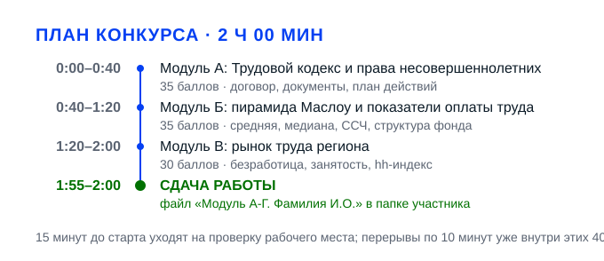
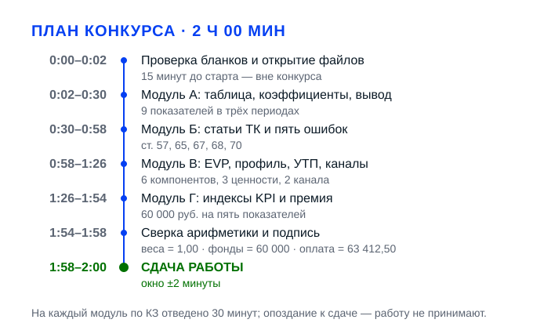
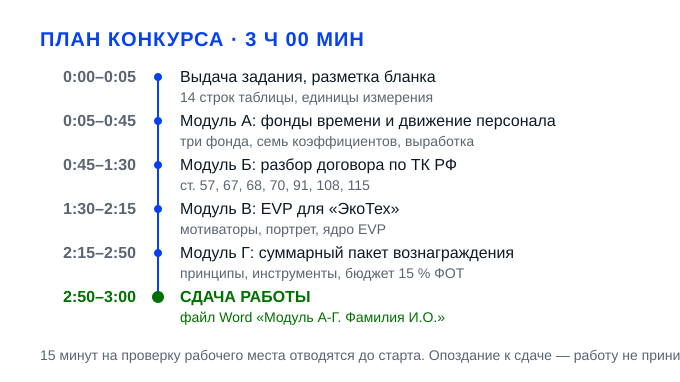

Специалист по управлению персоналом (Р)
Задания ниже — официальные файлы «Абилимпикс» (источник: abilympics-russia.ru), разложенные по категориям. Решения написаны по тексту задания, регламенту и критериям оценки; в них указано, что именно проверяет эксперт.
Школьник
14–16 лет, базовый уровень заданияВыдержка из официального конкурсного задания: страницы, относящиеся к категории «Школьник» (стр. 5–6, 14–15 источника).
Пошаговое решение
Задание категории «Школьники» — это два часа и три модуля по сорок минут, за которые нужно пройти путь специалиста по управлению персоналом с трёх сторон: разобрать трудовой договор с несовершеннолетним по нормам Трудового кодекса, построить систему вознаграждения на пирамиде Маслоу с расчётом показателей оплаты труда и оценить рынок труда региона через уровень безработицы и hh-индекс. Баллы распределены почти ровно: 35 за первый модуль, 35 за второй и 30 за третий, всего 100, поэтому провал одного модуля не компенсируется двумя другими. Пятнадцать минут до старта уходят на проверку рабочего места, и это время вне конкурса. Главные ловушки три: ответ без номера статьи Трудового кодекса не засчитывается, потребность и инструмент вознаграждения легко перепутать местами, а низкий hh-индекс читают как высокую конкуренцию, хотя смысл у него обратный. Поэтому работаем по перечню пунктов задания и сохраняем файл после каждого модуля.

Задача 1. Модуль А: трудовой договор с несовершеннолетнимМодуль А · 35 баллов · 40 минут
Первый модуль делит с вторым первое место по весу: 35 баллов из 100, и при этом весь ответ строится на нескольких статьях Трудового кодекса. Нужно разобрать ситуацию с несовершеннолетним соискателем, назвать ошибки работодателя со ссылками на нормы и собрать для подростка понятный план действий при заключении договора и определении условий труда. Ошибка здесь стоит дорого: ответ без номера статьи эксперт не засчитывает, даже если вывод правильный.
Действие 1.1. Организовать место и прочитать задание
Шаг 1.1.1
Садимся и первые три минуты не трогаем задание: разворачиваем ноутбук так, чтобы экран был в 50–60 см от глаз, убираем со стола сумку, телефон и всё, что не относится к работе, открываем папку участника на рабочем столе. Сразу создаём документ Word и сохраняем его с именем «Модуль А-Г. Фамилия И.О.» — именно так требует раздел «Особые указания по компетенции», а переименование в конце отнимает минуты, которых нет. Проверяем, что рядом нет тетрадей, учебников и блокнотов: они запрещены прямым перечнем, текст ТК РФ выдаётся отдельно.
Сорок минут на модуль — это ровно время на чтение ситуации, поиск норм и письменный ответ, и ни одной минуты на поиск папки. Имя файла входит в требования к результату: работа, лежащая в корне рабочего стола под случайным названием, при сдаче может быть просто не найдена, а это ноль по всем трём модулям сразу. Телефон и личные вещи на площадке запрещены, и обнаружение устройства обсуждается с главным экспертом.
Экран в 50–60 см от глаз, на столе только ноутбук, мышь, лист задания и ручка. В строке заголовка Word стоит «Модуль А-Г. Фамилия И.О.», а в проводнике видно, что файл лежит в папке с вашей фамилией, а не в «Загрузках». Телефон убран в сумку вне рабочего места или сдан эксперту.
Типичная ошибка — начать читать задание сразу, оставив куртку на спинке стула и телефон рядом с клавиатурой: по разделу 6.1.2 работать в верхней одежде запрещено, а телефон — прямое нарушение. Вторая — вести работу в файле «Документ1» до самого конца: при сдаче эксперт ищет работу по имени, и потерянный файл обнуляет модуль целиком.
Эксперт проходит по площадке в первые минуты и фиксирует состояние места до старта: расстояние до экрана, отсутствие запрещённых предметов, порядок на столе. Дальше он смотрит на это вскользь, но стартовое замечание уже попадает в протокол.
Шаг 1.1.2
Читаем задание целиком, не перескакивая: сначала описание ситуации, потом три вопроса к ней. Рядом с документом открываем черновик и выписываем три заголовка — нормы, ошибки работодателя, документы и план действий, — чтобы ответ сразу ложился по структуре вопроса. Тут же делим сорок минут: пять на чтение, двадцать пять на работу со статьями и текстом, десять на проверку и сохранение.
Три вопроса задания — это три отдельных блока оценки внутри 35 баллов, и каждый проверяется своим критерием: обоснование норм, перечень ошибок, перечень документов и план действий. Если начать писать сразу в один поток, третий вопрос обычно остаётся недописанным, и баллы теряются не из-за незнания, а из-за планирования. Десять минут резерва нужны на сверку ссылок на статьи.
В черновике три заголовка, под каждым оставлено место для ответа. На таймере отмечены три точки: 0:05, 0:30, 0:40. Вы можете назвать, какой пункт задания закрывает каждый блок вашего текста. Если встроенного таймера в задании нет, время контрольных точек пишем на листе от руки, чтобы не отвлекаться на часы.
Самая частая ошибка — писать ответ сразу по первому вопросу, увлечься и оставить перечень документов на последние минуты: он оценивается отдельной строкой оценочного листа. Вторая — не заметить, что в задании три пункта, а не два, и сдать неполный ответ.
Эксперт смотрит на структуру ответа: есть ли отдельные разделы под каждый пункт задания и подписаны ли они. Ответ без структуры читается как поток и оценивается ниже при том же содержании.
Шаг 1.1.3
Открываем текст Трудового кодекса, который выдаётся на площадке, и сразу ставим закладки на статьи 63, 65, 67, 68, 70, 92, 94, 265, 266, 267, 268, 269 и 271. Не читаем их подряд: находим статью по номеру через оглавление, потом читаем только ту часть, которая относится к несовершеннолетним. В черновике рядом с каждой статьёй пишем одну строку — о чём она, чтобы потом не листать заново.
Вся первая часть ответа строится на конкретных номерах статей, и эксперт проверяет не общее знание, а точность ссылки: норма названа верно — балл есть, норма названа «примерно» — балла нет. Закладки экономят главное — время на поиск в последние десять минут, когда вы перечитываете ответ. Тринадцать статей закрывают весь модуль, включая вопросы рабочего времени, отпуска и запретов.
На панели закладок или на бумажных стикерах ровно те статьи, которые нужны по заданию. Любую из них вы находите за пять секунд, не листая кодекс с начала. В черновике у каждой статьи есть пометка в одну строку.
Ошибка — искать статьи по памяти в самом конце, когда текст уже написан: находится не та норма, и ссылка уходит в ответ неверной. Вторая — цитировать статью 63 целиком, включая части про кино и цирк, хотя в ситуации речь о шестнадцатилетнем: лишний текст размывает ответ.
Эксперт выборочно проверяет две-три ссылки: открывает названную статью и смотрит, действительно ли там написано то, что вы утверждаете. Одна неверная ссылка ставит под сомнение весь блок обоснования.
Действие 1.2. Определить, можно ли вообще заключать договор
Шаг 1.2.1
Берём из ситуации возраст соискателя и определяем, к какой части статьи 63 он попадает: с шестнадцати лет договор заключается свободно, с пятнадцати — для лёгкого труда, не причиняющего вреда здоровью, с четырнадцати — только с письменного согласия одного из родителей или попечителя и с разрешения органа опеки, а до четырнадцати — лишь в кино, театре и цирке. В ответе пишем вывод одной фразой и рядом номер части статьи. Если возраст не назван прямо, считаем его по классу обучения.
Это первая проверка, от которой зависит всё остальное: если договор заключён с нарушением возрастного порога, дальше неважно, насколько верно описаны рабочее время и отпуск. В критериях модуля отдельно стоит обоснование норм применительно к несовершеннолетним, и ответ начинается именно с вопроса, имел ли работодатель право заключать договор. Без этого вывода остальные ошибки выглядят как список, а не как разбор.
В ответе есть фраза вида: соискателю шестнадцать лет, договор может быть заключён без согласия родителей по части первой статьи 63. Номер статьи и части указан рядом. Вы можете объяснить, что изменилось бы, будь соискателю четырнадцать.
Типичная ошибка — написать общее «несовершеннолетним можно работать с 14 лет»: такого правила в кодексе нет, и ссылка рассыпается при первой проверке. Вторая — забыть, что для четырнадцатилетнего нужно именно разрешение органа опеки, а не только согласие родителя.
Эксперт смотрит на точность формулировки возраста и на то, различает ли участник согласие родителя и разрешение органа опеки. Это первое, что он читает в блоке обоснования.
Шаг 1.2.2
Выписываем документы, которые соискатель предъявляет при заключении договора, строго по статье 65: паспорт, трудовую книжку или сведения о трудовой деятельности, документ о регистрации в системе индивидуального учёта, документы воинского учёта, документ об образовании или квалификации. Для несовершеннолетнего добавляем письменное согласие родителя по статье 63. Отдельно выписываем, чего работодатель требовать не вправе: характеристику с прошлого места, справки, законом не предусмотренные.
Третий вопрос задания прямо требует перечня документов, и он оценивается отдельно от разбора ошибок. Кроме того, именно здесь чаще всего звучит ошибка «достаточно паспорта»: в ситуации для студентов соискатель принёс один паспорт, и это нарушение не его, а работодателя, который не собрал комплект. Для подростка, впервые поступающего на работу, трудовой книжки ещё нет, и это нужно объяснить, а не считать ошибкой.
В ответе пять-шесть строк по статье 65 плюс согласие родителя, и ни одной лишней. Против каждого документа указано, зачем он нужен. Вы можете назвать документы, которые не требуются, и сослаться на часть третью статьи 65.
Ошибка — включить в перечень характеристику, медицинскую справку и справку о доходах семьи: законом они не предусмотрены, и эксперт видит, что участник переписал бытовой список, а не норму. Вторая — забыть сведения индивидуального учёта, без которых не оформляется ни приём, ни взносы.
Эксперт сверяет перечень со статьёй 65 и отдельно отмечает, есть ли в ответе запрет на избыточные документы: это признак того, что норму читали, а не пересказывали.
Шаг 1.2.3
Проверяем по статье 266: лица до восемнадцати лет принимаются на работу только после обязательного предварительного медицинского осмотра, который оплачивает работодатель, и проходят такой осмотр ежегодно до совершеннолетия. В ответе пишем это отдельным пунктом плана действий и указываем, что без заключения врача работодатель не вправе допустить подростка к работе. Медосмотр ставим в план раньше подписания договора.
Это одна из ошибок, которую в разборе пропускают чаще всего: в ситуации работодатель обсуждает испытательный срок и оплату, а про медосмотр не говорит вообще. Между тем именно статья 266 защищает подростка, и её отсутствие в ответе читается как пробел в знании прав несовершеннолетних, за который снимается часть из 35 баллов. Кроме того, это первое звено правильной последовательности действий.
В плане действий медосмотр стоит до подписания договора. Указано, кто платит, — работодатель, и что осмотр повторяется каждый год. Ссылка на статью 266 есть. Вы можете объяснить, что будет, если подросток придёт без заключения врача.
Ошибка — написать «медосмотр по желанию» или переложить оплату на подростка: статья 266 прямо возлагает расходы на работодателя. Вторая — поставить осмотр после подписания договора, хотя по смыслу нормы он предварительный, то есть до приёма на работу.
Эксперт ищет статью 266 в блоке про несовершеннолетних и отмечает, названа ли обязанность работодателя оплатить осмотр. Без этого пункта ответ выглядит неполным.
Шаг 1.2.4
Проверяем должность по статье 265: подростка нельзя принимать на работы с вредными и опасными условиями труда, на подземные работы, в ночные клубы, бары и на перевозку алкоголя и табака. Дальше смотрим статью 268: командировки, сверхурочная работа, ночные смены, работа в выходные и праздники для работников до восемнадцати запрещены, кроме творческих профессий из отдельного перечня. В ответе пишем вывод по конкретной должности из ситуации.
Это проверка соответствия самой должности, и она даёт второй по весу аргумент после возраста: даже идеально оформленный договор с подростком на вредном производстве незаконен. В критериях модуля стоит обоснование прав работников, и запреты — самая наглядная их часть. Кроме того, здесь легко набрать балл за конкретику: не «нельзя на тяжёлые работы», а перечень из нормы.
В ответе названа должность из ситуации и сделан вывод, допустима она или нет. Перечислены минимум три запрета из статьи 265 и минимум два из статьи 268. Ссылки на обе статьи стоят рядом с выводами, а не в конце абзаца.
Частая ошибка — ограничиться фразой «несовершеннолетним запрещены вредные работы» и не назвать, какие именно: эксперт считает такой пункт нераскрытым. Вторая — забыть про запрет ночных смен и сверхурочных, хотя в ситуациях их предлагают чаще всего.
Эксперт проверяет, привязан ли запрет к конкретной должности из задания, а не изложен вообще. Общий перечень без вывода по ситуации он оценивает ниже.
Действие 1.3. Проверить каждое условие договора по статье
Шаг 1.3.1
Открываем статью 57 и идём по договору из ситуации сверху вниз: фамилия, имя, отчество работника и наименование работодателя, сведения о документах, место и дата, место работы, трудовая функция, дата начала работы, условия оплаты, режим рабочего времени и времени отдыха, гарантии за вредную работу. Каждое условие отмечаем: есть, нет, написано неверно. Пустые места в договоре — это не «потом допишем», а нарушение статьи 57.
Статья 57 задаёт каркас, по которому дальше проверяются все остальные нормы: пока не выписаны условия, непонятно, что именно нарушено. В задании отдельно требуется обосновать применение основных норм, и разбор по элементам договора выглядит как работа специалиста, а не как пересказ кодекса. Это же готовит таблицу «условие — норма — ошибка», которую удобно оценивать.
В черновике восемь-девять строк по числу обязательных условий, и против каждой стоит пометка. Видно, какие условия в договоре отсутствуют вовсе. Вы можете показать, где в статье 57 сказано об обязательности этих сведений и условий.
Ошибка — сразу искать нарушения, не выписав условия: тогда половина ошибок остаётся незамеченной, потому что сравнивать не с чем. Вторая — считать, что отсутствие условия в договоре не нарушение, а недоработка кадровика.
Эксперт смотрит, разобраны ли условия по пунктам и названы ли отсутствующие. Разбор «по статье 57» без привязки к тексту ситуации он не засчитывает. Заготовку таблицы он тоже видит: наличие столбцов говорит о системном подходе больше, чем гладкий текст.
Шаг 1.3.2
Проверяем условие об испытании по статье 70: лицам, не достигшим восемнадцати лет, испытательный срок не устанавливается вообще, поэтому любая формулировка про испытание в договоре с подростком незаконна. Если в ситуации фигурирует пониженная оплата в период испытания, добавляем, что и она недопустима, потому что самого испытания быть не может. В ответе пишем: условие подлежит исключению, а не корректировке по сроку.
Испытательный срок — самая частая приманка в таких задачах: участник начинает считать месяцы и доказывать, что три месяца допустимо, и теряет балл, потому что для несовершеннолетнего ответ — ноль месяцев. Норма стоит в части четвёртой статьи 70, и ссылка на неё сразу показывает, что участник читал статью до конца. Это один из тех пунктов, где правильный ответ короче неправильного.
В ответе прямо сказано, что испытание не устанавливается, и названа часть четвёртая статьи 70. Нет рассуждений о допустимой длительности. Отдельно отмечено, что снижение оклада в период испытания тоже отпадает.
Типичная ошибка — написать «испытательный срок не должен превышать трёх месяцев» и успокоиться: для подростка это неверный ответ, и балл не ставится. Вторая — пропустить пункт про оплату 75 процентов, хотя именно он показывает, что участник увидел вторую часть нарушения.
Эксперт проверяет формулировку дословно: если в ответе есть слова о допустимом сроке испытания для несовершеннолетнего, пункт считается неверным. Формулировку «испытание не устанавливается» он ищет дословно, а не по смыслу.
Шаг 1.3.3
Считаем рабочее время по статьям 92 и 94: до шестнадцати лет — не более 24 часов в неделю и не более 5 часов в смену, от шестнадцати до восемнадцати — не более 35 часов в неделю и 7 часов в смену, а для тех, кто совмещает работу с учёбой, — 12 и 17,5 часа в неделю и 2,5 и 4 часа в смену соответственно. Сверяем с режимом из ситуации и записываем расхождение в часах. Восьмичасовой день для шестнадцатилетнего — это превышение на час.
Рабочее время — второй по частоте источник ошибок после испытательного срока, и здесь балл дают за цифры, а не за общие слова. Нормы в статьях 92 и 94 различаются ещё и по признаку «учится или нет», поэтому в ответе нужно указать, какой вариант применён и почему. Именно эта связка показывает, что участник понимает разницу между недельной нормой и дневной.
В ответе названы обе цифры — недельная и сменная — и указано, для какого возраста. Расхождение с договором посчитано в часах. Видно, применена ли поправка на учёбу. Если в ситуации указано, что подросток учится, норма берётся из части про совмещение, и это должно быть видно в ответе.
Ошибка — взять общую норму 40 часов в неделю: для несовершеннолетнего она не действует, и весь расчёт рассыпается. Вторая — перепутать возрастные группы и применить к шестнадцатилетнему норму 24 часа, которая относится к более младшим.
Эксперт сверяет цифры с таблицей норм и смотрит, указан ли признак обучения. Одну верную цифру без второй он считает половиной ответа. Он также смотрит, не подменены ли часы в неделю часами в смену.
Шаг 1.3.4
Проверяем отпуск по статье 267: работнику до восемнадцати лет ежегодный основной оплачиваемый отпуск предоставляется продолжительностью 31 календарный день и в удобное для него время. Дальше смотрим статью 269: расторжение договора по инициативе работодателя допускается только с согласия государственной инспекции труда и комиссии по делам несовершеннолетних. Оба пункта выписываем отдельными строками с номерами статей.
Эти две нормы почти всегда выпадают из ответов, хотя стоят в перечне гарантий и дают баллы за полноту. Тридцать один день вместо двадцати восьми — цифра, которую эксперт ищет глазами, и её отсутствие сразу видно. Согласие инспекции труда и комиссии по делам несовершеннолетних — самая сильная гарантия для подростка, и её упоминание показывает глубину ответа.
В ответе стоит 31 календарный день и ссылка на статью 267, отдельно — порядок увольнения по статье 269. Нет формулировок вида «отпуск как обычно» или «28 дней». Вы можете объяснить, чем гарантия статьи 269 отличается от обычного увольнения.
Ошибка — указать 28 дней, потому что это общая норма: для несовершеннолетних она не применяется. Вторая — забыть про согласие инспекции труда, хотя это единственная гарантия, которая прямо ограничивает работодателя при увольнении.
Эксперт ищет в ответе обе цифры и обе статьи: продолжительность отпуска и особый порядок увольнения. Наличие одной без другой он отмечает как неполное раскрытие.
Шаг 1.3.5
Разбираем оплату: по статье 271 заработная плата работникам до восемнадцати лет при сокращённой продолжительности работы выплачивается в полном размере, то есть как за полную норму, а сдельная оплата идёт по сдельным расценкам. Проверяем, что оклад не ниже минимального размера оплаты труда по статье 133, а выплаты идут не реже чем каждые полмесяца по статье 136. Пониженную ставку на время испытания отмечаем как незаконную.
Оплата труда — тот пункт, где подростки чаще всего теряют деньги на практике, и в задании он проверяется через знание норм. Формулировка «как за полную норму при сокращённом времени» звучит нелогично только на первый взгляд: именно она защищает несовершеннолетнего, и её точное воспроизведение отличает подготовленного участника. Сроки выплат добавляют балл за полноту блока.
В ответе есть правило про полный размер оплаты при сокращённой норме, ссылка на статью 271 и упоминание минимального размера оплаты труда. Указано, что зарплата выплачивается не реже двух раз в месяц. Пониженный оклад на испытании отмечен как нарушение.
Ошибка — написать, что подростку платят пропорционально отработанному времени: это противоречит статье 271 и снижает оценку. Вторая — не заметить условие про 75 процентов оклада, хотя оно прямо названо в ситуации и является ошибкой работодателя.
Эксперт проверяет, названо ли правило полной оплаты при сокращённом времени, и смотрит, связано ли оно с условием из ситуации, а не изложено отдельно от неё.
Действие 1.4. Собрать ответ: ошибки, документы, план действий
Шаг 1.4.1
Собираем всё найденное в таблицу из четырёх столбцов: условие в договоре, норма Трудового кодекса, в чём ошибка, как должно быть. Строк получается столько же, сколько нарушений, и каждая заканчивается короткой формулировкой правильного варианта. Таблицу ставим в документ Word первой, а подробные пояснения пишем под ней, чтобы эксперт сразу видел перечень.
Задание требует перечислить и обосновать ошибки, и таблица закрывает оба требования одновременно: перечень виден списком, обоснование стоит в той же строке. Оценка за этот блок — существенная часть 35 баллов, и она ставится по числу найденных нарушений с корректными ссылками. Разрозненные абзацы без таблицы эксперт читает дольше и часть нарушений просто не находит.
В таблице минимум пять строк, у каждой есть номер статьи. Ни в одной строке нет формулировки «нарушены права работника» без указания нормы. Таблица помещается на одну страницу и читается сверху вниз без пояснений.
Ошибка — написать ошибки сплошным текстом: часть из них теряется, а эксперт считает найденные нарушения по списку. Вторая — указать нарушение без нормы, например «неправильно оформлен договор», и не назвать статью 67.
Эксперт считает строки таблицы и проверяет ссылки выборочно. Аккуратная таблица с пятью корректными строками оценивается выше, чем десять нарушений, перечисленных в тексте без норм.
Шаг 1.4.2
Пишем план действий по шагам: получить письменное согласие родителя, пройти медосмотр, собрать документы по статье 65, подписать договор в двух экземплярах и забрать свой, дождаться приказа о приёме и ознакомиться с правилами внутреннего трудового распорядка до подписания договора. Каждый шаг нумеруем и рядом ставим статью. В конце добавляем строку о том, что один экземпляр договора остаётся у работника.
Результат модуля по описанию задания — именно план действий несовершеннолетних при заключении договора, поэтому этот блок оценивается отдельно от разбора ошибок. Порядок шагов тоже важен: медосмотр до договора, ознакомление с правилами до подписания, приказ после. Если шаги перепутаны, эксперт видит, что участник выучил нормы, но не собрал их в процедуру.
В плане пять-шесть шагов, у каждого номер статьи. Медосмотр стоит раньше подписания, приказ — после. Отдельным пунктом сказано про второй экземпляр договора на руках у работника. Проверьте, что в плане нет шага «уговорить работодателя»: план описывает законную процедуру, а не переговоры.
Ошибка — начать план с подписания договора и закончить медосмотром: последовательность нарушена, и часть баллов уходит. Вторая — не упомянуть второй экземпляр, хотя статья 67 говорит о двух экземплярах и о подписи, подтверждающей получение.
Эксперт читает план как инструкцию для подростка: может ли по нему действовать человек, который впервые устраивается на работу. Пропущенный шаг он отмечает как пробел.
Шаг 1.4.3
Отдельным блоком разбираем оформление: по статье 67 договор заключается в письменной форме в двух экземплярах, каждый подписывается сторонами, один передаётся работнику, а на экземпляре работодателя ставится подпись о получении. По статье 68 приём оформляется приказом, с которым знакомят под роспись в трёхдневный срок, а с правилами внутреннего трудового распорядка знакомят до подписания договора.
В задании ситуация построена вокруг подписи на одном экземпляре, и без статей 67 и 68 ответ остаётся на уровне общих рассуждений. Эти две нормы дают самый простой и самый весомый балл: они прямо называют и количество экземпляров, и срок ознакомления с приказом. Кроме того, здесь видно, понимает ли участник разницу между подписанием договора и изданием приказа.
В ответе названы два экземпляра, подпись о получении и трёхдневный срок ознакомления с приказом. Указано, что с правилами внутреннего трудового распорядка знакомят до подписания. Обе статьи упомянуты по номерам.
Ошибка — сказать, что достаточно одного экземпляра, если работник сфотографировал договор: статья 67 такого не допускает. Вторая — перепутать сроки: три дня даются на ознакомление с приказом, а не на выдачу договора.
Эксперт проверяет, названы ли обе статьи и обе процедуры — договор и приказ. Ситуация построена именно на этом, поэтому пропуск блока сразу снижает оценку модуля.
Шаг 1.4.4
Перечитываем ответ сверху вниз и проверяем каждую ссылку: номер статьи, часть, формулировку. Убираем всё, что не относится к трём вопросам задания, — рассуждения о пользе труда, примеры из жизни, повторы. В конце дописываем вывод из трёх предложений: какие права подростка нарушены, что работодатель обязан исправить, каким должен быть порядок действий. Сохраняем файл и проверяем, что он открывается.
Проверка ссылок — самая дешёвая операция с самой высокой отдачей: одна неверная цифра статьи обнуляет целый пункт, а находится она за десять секунд. Вывод нужен потому, что в критериях модуля отдельно стоит обоснованность ответа, а не только перечень нарушений. Сохранение проверяем по той же причине, по которой создавали имя файла: несохранённый документ равен отсутствующему.
Каждая ссылка открыта и сверена. В ответе нет абзацев, не отвечающих на вопросы задания. Вывод из трёх предложений есть, файл сохранён и открывается двойным щелчком. Откройте файл повторно после сохранения: если Word предложил выбрать формат, значит, копия могла уйти в другое место.
Ошибка — сохранить ответ в последнюю минуту и не проверить: Word иногда предлагает сохранить копию, и работа уходит в другую папку. Вторая — оставить в тексте черновые пометки и вопросы самому себе, которые эксперт читает как часть ответа.
Эксперт читает вывод первым: если в нём сформулировано, что именно нарушено и что делать, дальше он проверяет детали с более высоким доверием. Особенно внимательно он читает последний абзац, потому что в нём обычно и стоит вывод.
Задача 2. Модуль Б: пирамида Маслоу и показатели оплаты трудаМодуль Б · 35 баллов · 40 минут
Второй модуль стоит столько же, сколько первый, — 35 баллов, но устроен иначе: здесь нужно не найти ошибки, а построить систему. Сначала разложить потребности работника по пяти уровням пирамиды Маслоу и подобрать к каждому уровню инструменты вознаграждения, потом посчитать показатели оплаты труда: среднюю и медианную зарплату, среднесписочную численность и структуру фонда. Дороже всего здесь стоит путаница между потребностью и инструментом.
Действие 2.1. Разобрать пирамиду и выявить ведущие потребности
Шаг 2.1.1
Рисуем пирамиду из пяти уровней снизу вверх и подписываем каждый: физиологические потребности, безопасность, принадлежность к группе, уважение и признание, самореализация. Рисуем от руки на листе или в Word через вставку фигур — важно, чтобы уровни были видны и не сливались. Рядом с каждым уровнем оставляем место в две строки для примеров из рабочей жизни.
В задании прямо требуется классификация потребностей по пирамиде, и оценка ставится за правильную последовательность уровней, а не за красивое название теории. Перепутанные местами уровни — самая обидная потеря баллов, потому что знание есть, а порядок неверный. Схема на листе работает как черновик: на неё потом опирается весь ответ.
Пять уровней идут снизу вверх в правильном порядке: физиология, безопасность, принадлежность, уважение, самореализация. Подписи читаются без пояснений. Свободное место под примеры оставлено. Проверьте себя по памяти: назовите уровни снизу вверх, не подглядывая в схему.
Ошибка — поставить самореализацию вниз, а зарплату наверх: последовательность нарушена, и весь блок классификации оценивается ниже. Вторая — нарисовать пирамиду без подписей, рассчитывая, что эксперт поймёт по контексту.
Эксперт смотрит на порядок уровней и на подписи: схема должна читаться сама по себе, без ваших комментариев, потому что он оценивает её в момент просмотра документа.
Шаг 2.1.2
Берём работника из ситуации и определяем, какие потребности для него сейчас главные: если речь о небольшой зарплате и долгих сменах, работает нижний уровень, если о рутине и отсутствии роста — верхние. Записываем вывод одной фразой и обосновываем двумя признаками из текста задания. Не приписываем работнику все пять уровней сразу: для ответа нужны два-три ведущих.
Классификация ради классификации баллов не даёт: в критериях модуля сказано, что нужно выявить ключевые потребности работников, то есть выбрать, а не перечислить. Обоснование через признаки из ситуации показывает, что участник читал задание, а не пересказывал учебник. Это же обоснование потом понадобится при подборе инструментов.
Названы два-три ведущих уровня, и у каждого есть признак из текста ситуации. Вы можете объяснить, почему остальные уровни сейчас не главные. Вывод сформулирован одной фразой. Проверьте, что названные уровни не противоречат друг другу: зарплата и рост возможны одновременно, а безопасность и постоянный риск — нет.
Ошибка — написать, что у работника присутствуют все пять уровней: такой ответ невозможно проверить, и он не оценивается как классификация. Вторая — обосновывать вывод общими словами вроде «людям всегда мало платят».
Эксперт проверяет связку «признак в ситуации — уровень пирамиды». Если связки нет, пункт считается нераскрытым, даже когда уровни названы верно. Он также смотрит, не подменены ли потребности работника потребностями компании.
Шаг 2.1.3
Разделяем два разных понятия: потребность — это нужда самого работника, а инструмент вознаграждения — то, чем работодатель на эту нужду отвечает. В таблице делаем два столбца и проверяем, что в левом стоят состояния, а в правом конкретные действия организации. Например, потребность в безопасности закрывается не словом «безопасность», а полисом добровольного медицинского страхования и соблюдением охраны труда.
Путаница между потребностью и инструментом — главная ошибка этого модуля, и она видна с первой строки таблицы. Задание требует определить перечень соответствующих уровню инструментов вознаграждения, то есть в правом столбце должны стоять реальные меры, а не повторение названия уровня. Правильное разделение даёт баллы сразу в двух пунктах критериев.
В левом столбце состояния и нужды, в правом меры с конкретными названиями: премия, полис, наставник, график, обучение. Ни одна строка не повторяет название уровня дважды. Каждый инструмент можно ввести в организации на практике.
Ошибка — написать в правом столбце «хорошая зарплата» и «уважение коллектива»: это не инструменты, а пожелания, и эксперт их не засчитывает. Вторая — оставить инструменты одинаковыми для всех уровней.
Эксперт смотрит на правый столбец: если в нём стоят абстракции, весь блок инструментов оценивается как невыполненный, сколько бы уровней ни было подписано.
Шаг 2.1.4
Проверяем, не перепутаны ли уровни при подборе: зарплата и питание относятся к нижнему уровню, договор и страхование — к безопасности, наставник и команда — к принадлежности, грамота и обучение — к признанию, самостоятельные проекты — к самореализации. Идём по таблице сверху вниз и переносим строки, если уровень выбран неверно. Отдельно смотрим, чтобы инструмент не стоял на двух уровнях одновременно.
Эта проверка ловит ошибки, которые не видны при первом проходе: например, обучение часто ставят в безопасность, хотя оно отвечает на потребность в развитии. В критериях модуля оценивается именно соответствие инструментов уровням, а не их количество. Аккуратная таблица без дублей читается как готовая система вознаграждения.
У каждого инструмента один уровень, повторов нет. Обучение стоит на уровне признания или самореализации, а не в безопасности. На каждом уровне минимум по два инструмента. Проверьте, что обучение не стоит в двух столбцах, а премия не описана дважды разными словами.
Ошибка — записать премию одновременно в физиологию и в признание: двойной учёт сбивает структуру, и эксперт снижает оценку за системность. Вторая — оставить один-два уровня пустыми. Третья ошибка — оставить в таблице пустую строку уровня, рассчитывая вернуться к ней позже и не возвращаясь.
Эксперт проверяет два-три спорных инструмента — обучение, гибкий график, премию — и смотрит, обосновано ли их место на пирамиде в вашем ответе. Спорным он считает и гибкий график: он закрывает и безопасность, и самореализацию.
Действие 2.2. Собрать инструменты вознаграждения по каждому уровню
Шаг 2.2.1
Начинаем с нижнего уровня и выписываем материальные инструменты: оклад, премия по итогам месяца, доплата за работу в ночное время и за совмещение, оплата питания или компенсация обедов, спецодежда и обувь. Против каждого пишем, как он работает: оклад закрывает базовую нужду в деньгах, премия — в деньгах и в признании. Ставим суммы или проценты, если они есть в раздатке.
Нижний уровень — самый проверяемый: именно здесь эксперт ищет конкретику в рублях и процентах, а не слова про достойную оплату. Инструменты этого уровня дают баллы и за классификацию, и за расчётную часть, потому что оклад и премии потом входят в структуру фонда оплаты труда. Если инструменты названы без механизма, они выглядят как список из учебника.
На нижнем уровне не меньше четырёх инструментов, у каждого указан механизм выплаты или предоставления. Есть хотя бы одна цифра — процент премии, размер доплаты, стоимость питания. Все инструменты реально применить в организации из задания.
Ошибка — ограничиться словом «зарплата»: уровень остаётся нераскрытым, и баллы за классификацию не ставятся. Вторая — придумать выплаты, которых нет в раздатке, и тем самым потерять связь с заданием. и тогда блок выглядит выдуманным.
Эксперт ищет на нижнем уровне цифры: если инструменты названы без размеров, он отмечает поверхностность ответа и снижает оценку за конкретику. Он же проверяет, связаны ли названные суммы с расчётом фонда оплаты труда в следующем действии.
Шаг 2.2.2
Переходим к уровню безопасности: сюда идут трудовой договор с полными условиями, соблюдение охраны труда, добровольное медицинское страхование, оплачиваемый больничный, стабильный график и отсутствие задержек зарплаты. Каждый инструмент формулируем как обязательство работодателя с конкретным содержанием: не «ДМС», а поликлиника и стоматология за счёт компании. Для подростка добавляем гарантии по рабочему времени и отпуску.
Уровень безопасности даёт баллы за понимание разницы между гарантиями по закону и добровольными льготами: договор и охрана труда обязательны всегда, а страхование — уже конкурентное преимущество. В критериях модуля оценивается перечень инструментов по каждому уровню, и смешивать обязательное с дополнительным нельзя. Кроме того, здесь видно, различает ли участник обязанность и льготу.
На уровне безопасности не меньше трёх инструментов, и хотя бы один отделён как гарантия по закону. Формулировки содержат конкретику: сроки, перечень услуг, порядок предоставления. Нет повторов с нижним уровнем.
Ошибка — записать в безопасность «дружный коллектив»: это уровень принадлежности, и строка уходит не туда. Вторая — выдать обязательные по закону вещи за льготу компании, что эксперт читает как незнание норм.
Эксперт проверяет, различает ли участник гарантии по Трудовому кодексу и дополнительные льготы. Это различие он ищет именно на уровне безопасности. Обязательные гарантии без ссылки на норму он считает пересказом, а не анализом.
Шаг 2.2.3
На уровне принадлежности ставим наставника на первые два месяца, работу в смене с постоянным партнёром, общие разборы смен, корпоративные мероприятия и внутренний чат, где обсуждаются рабочие вопросы. Формулируем так, чтобы было понятно, как это выглядит в жизни: наставник закрепляется приказом, встречи раз в неделю. Дальше на уровне признания — грамота, доска почёта, звание лучшего по итогам квартала.
Средние уровни пирамиды в ответах школьников почти всегда пустые: участники называют зарплату и обучение, а принадлежность и признание пропускают. Между тем именно эти инструменты дешевле всего для работодателя и чаще всего упоминаются в опросах сотрудников. Задание требует перечня по каждому уровню, поэтому пропуск двух уровней — это потеря заметной части из 35 баллов.
На уровнях принадлежности и признания не меньше чем по два инструмента. У каждого есть механизм: кто, когда и как его получает. Формулировки не повторяют друг друга и не сводятся к «хорошему отношению».
Ошибка — заполнить принадлежность словом «коллектив», а признание — словом «уважение»: это потребности, а не инструменты. Вторая — оставить эти уровни пустыми, посчитав их неважными для производства. Такие строки он вычёркивает целиком, не разбирая.
Эксперт смотрит на средние уровни первым делом: их наличие показывает, знает ли участник пирамиду целиком или только нижний и верхний уровни. Пустые средние уровни он отмечает как незакрытый пункт критериев.
Шаг 2.2.4
Заполняем верхний уровень: обучение за счёт компании, оплата курсов и аттестаций, участие в новых проектах, право предлагать изменения в работе, горизонтальное движение между задачами, наставничество со стороны самого работника. Затем проходим по всей таблице и проверяем реалистичность: каждый инструмент должен быть выполним без бюджета крупной корпорации. В конце считаем, сколько инструментов получилось на каждом уровне.
Верхний уровень отвечает на потребность в развитии, и он же чаще всего становится причиной ухода: работник, которому некуда расти, уходит через год. В критериях модуля оценивается полнота перечня по уровням, поэтому пустой верх читается как незавершённая работа. Реалистичность проверяют отдельно: придуманные льготы вроде оплаты зарубежных стажировок не принимаются.
На каждом из пяти уровней минимум по два инструмента. Все инструменты выполнимы для организации из задания. Таблица читается сверху вниз как система, а не как набор идей. Проверьте, что ни один инструмент не повторяется на двух уровнях и что все они названы в одном стиле.
Ошибка — придумать дорогие льготы, которых нет в бюджете: эксперт отмечает оторванность от ситуации. Вторая — оставить верхний уровень без инструментов, хотя именно он показывает понимание самореализации.
Эксперт проверяет полноту: пять уровней, на каждом инструменты. Пустой уровень он отмечает отдельно и снижает оценку за системность ответа. Отдельно он смотрит, не придуманы ли льготы, которых не может быть в небольшой сети магазинов.
Действие 2.3. Посчитать среднюю и медианную заработную плату
Шаг 2.3.1
Выписываем из раздатки все значения зарплат в один столбец и упорядочиваем по возрастанию — от минимальной к максимальной, не пропуская ни одного значения. Считаем количество и записываем его отдельно: от чётности числа зависит способ расчёта медианы. Проверяем единицы — рубли или тысячи рублей, — иначе итог разойдётся в тысячу раз. Значения записывайте столбиком, а не в строку: так легче найти середину ряда.
Средняя и медианная зарплата считаются по одному и тому же ряду, поэтому порядок и полнота значений определяют оба ответа. Ошибка в единицах измерения — самая частая причина неверного результата, хотя формула применена правильно. Кроме того, упорядоченный ряд сразу показывает выбросы, о которых нужно написать в выводе.
Ряд упорядочен, количество значений записано, единицы измерения подписаны. Самое большое значение не выпадает из общего ряда и не выглядит опечаткой. Ряд помещается на одну страницу. Проверьте, что количество значений совпадает с числом строк в раздатке.
Ошибка — считать по неупорядоченному списку: медиана тогда берётся не из середины, и результат неверен. Вторая — смешать рубли и тысячи рублей, получив среднюю зарплату в тысячу раз меньше реальной. Третья — потерять одно значение при переносе и не заметить этого до конца работы.
Эксперт проверяет сам ряд: если значения не упорядочены, он смотрит расчёт медианы особенно внимательно и часто снижает оценку за точность. Упорядоченный ряд он проверяет на глаз: одно значение не по порядку видно сразу.
Шаг 2.3.2
Считаем среднюю арифметическую: складываем все значения и делим на их количество. В Word это делается через таблицу с формулой, в Excel — функцией СРЗНАЧ по диапазону, на калькуляторе — в два действия с записью промежуточной суммы. Результат округляем до целых рублей и подписываем: средняя заработная плата по выборке. Если считаете в Word, формулу ставьте в строку итога, а не в текст абзаца.
Средняя зарплата — базовый показатель модуля, и она же нужна для расчёта средней зарплаты на одного работника через фонд оплаты труда. Оценка ставится за формулу и за корректное округление: ответ с восемью знаками после запятой читается как небрежность. Кроме того, без средней невозможно показать разрыв с медианой, а этот разрыв — половина вывода.
Сумма значений и количество записаны отдельно, деление выполнено по ним. Результат округлён до рублей. Подписано, что это средняя арифметическая по выборке из задания. Проверьте делением обратно: средняя, умноженная на количество значений, должна дать ту же сумму.
Ошибка — делить на количество строк таблицы, а не на количество значений: если строки сгруппированы, результат завышается. Вторая — не записывать промежуточную сумму, из-за чего ошибку невозможно найти при проверке.
Эксперт смотрит на запись промежуточных чисел: если суммы не видно, проверить расчёт он не может и оценивает только итоговое значение. Ответ без промежуточной суммы он проверяет пересчётом и часто находит расхождение.
Шаг 2.3.3
Считаем медиану: если значений нечётное число, берём значение ровно из середины упорядоченного ряда, если чётное — складываем два центральных и делим пополам. В Excel это делает функция МЕДИАНА, она выполняет то же самое автоматически. Рядом с результатом пишем, какое значение или какие два значения взяты. Если значений два, медиана равна их полусумме, и это стоит подписать отдельной строкой.
Медиана показывает типичную зарплату лучше средней, когда в выборке есть руководитель с окладом в десять раз выше остальных. Задание требует расчёта основных показателей в сфере оплаты труда, и медиана входит в этот перечень наравне со средней. Умение объяснить разницу между ними отличает осмысленный расчёт от механического.
Медиана посчитана от упорядоченного ряда, способ расчёта назван. Если значений чётное число, видно, какие два взяты. Расхождение со средней не объясняется случайностью, а разобрано отдельно. Проверьте, что медиана лежит внутри ряда, а не за его пределами.
Ошибка — брать медиану из неупорядоченного списка или путать её со средним значением двух крайних. Вторая — считать медиану по количеству работников, а не по количеству значений зарплат. Третья — округлить медиану до тысяч рублей, потеряв точность сравнения.
Эксперт проверяет, назван ли способ расчёта: чётное или нечётное число значений. Без этого он не может убедиться, что медиана взята правильно. Он просит показать два центральных значения, если число значений чётное.
Шаг 2.3.4
Сравниваем среднюю и медиану и записываем вывод: если средняя заметно выше медианы, в выборке есть несколько очень высоких окладов, которые тянут среднее вверх. Считаем разницу в рублях и в процентах от медианы. Дальше пишем, что это значит для работодателя: ориентироваться только на среднюю при установлении окладов нельзя. Разницу считайте от медианы, а не от средней: так разрыв читается понятнее.
Именно сравнение двух показателей даёт баллы за аналитику, а не за арифметику: задание требует не просто посчитать, но и охарактеризовать показатели. Разрыв между средней и медианой — готовый аргумент для вывода и для рекомендаций по оплате труда. Без этого абзаца расчёт выглядит как упражнение из учебника.
Разница посчитана в рублях и в процентах. В выводе объяснено, из-за чего возник разрыв. Есть фраза о том, какой показатель лучше отражает типичную зарплату и почему. Проверьте, что вывод объясняет причину разрыва, а не просто констатирует его.
Ошибка — написать, что средняя и медиана должны совпадать, и искать ошибку в расчётах: в реальных выборках они почти всегда различаются. Вторая — объяснять разрыв инфляцией вместо структуры окладов. Третья — не посчитать разницу в процентах вовсе, ограничившись рублями.
Эксперт читает вывод после цифр: если разрыв объяснён структурой выборки, а не общими словами, пункт закрыт полностью. Разрыв без объяснения он считает незакрытым пунктом и снижает оценку за анализ.
Действие 2.4. Посчитать среднесписочную численность и структуру оплаты
Шаг 2.4.1
Считаем среднесписочную численность: складываем списочную численность за каждый календарный день периода и делим на число календарных дней этого периода. Если в раздатке дана численность только на начало и конец, берём полусумму и подписываем, что это упрощённый способ. Отдельно объясняем, чем среднесписочная отличается от списочной и явочной. Все промежуточные суммы оставляйте в черновике, они понадобятся при проверке.
Среднесписочная численность — знаменатель почти всех коэффициентов, и без неё расчёт структуры оплаты труда не сходится. Задание называет её прямо в перечне экономико-статистических показателей, поэтому она оценивается отдельным пунктом. Понимание разницы между списочной, явочной и среднесписочной численностью показывает, что участник работал с понятиями, а не с формулой.
Формула записана, подставлены числа, результат округлён до целых. Способ расчёта назван: по дням периода или полусуммой. Определения трёх видов численности даны по одному предложению. Проверьте, что среднесписочная не отличается от полусуммы больше чем на несколько человек.
Ошибка — посчитать среднюю численность как среднее из двух чисел, не сказав об упрощении: эксперт считает метод необоснованным. Вторая — перепутать списочную и явочную численность, из-за чего все коэффициенты съезжают.
Эксперт проверяет знаменатель в последующих расчётах: если среднесписочная посчитана неверно, он пересчитывает связанные показатели и снижает оценку. Отдельно он смотрит, названо ли упрощение метода расчёта.
Шаг 2.4.2
Строим структуру фонда оплаты труда: выписываем оклады, премии, доплаты и компенсации, считаем долю каждой части в процентах от общего фонда. Проверяем, что сумма долей равна ста процентам, — расхождение в один-два процента допустимо только за счёт округления. Рядом с таблицей пишем, какая часть фонда переменная, а какая постоянная. Доли считайте от общего фонда, а не от оклада: это разные базы.
Структура фонда показывает, насколько система оплаты труда управляема: если девяносто процентов приходится на оклад, премия не мотивирует, если наоборот — работник не уверен в завтрашнем дне. Задание требует расчёта основных показателей в сфере оплаты труда, и структура входит в них. Это же даёт материал для рекомендаций в выводе.
Сумма долей равна ста процентам с точностью до округления. Постоянная и переменная части разделены и подписаны. В таблице видно, какая часть фонда приходится на премии. Проверьте, что переменная часть названа отдельно и её доля посчитана в процентах.
Ошибка — считать доли от оклада, а не от общего фонда: тогда сумма долей не сходится, и структура неверна. Вторая — не разделить постоянную и переменную части, хотя именно это различие объясняет действие премии.
Эксперт смотрит на сумму долей: если она не равна ста процентам, он проверяет базу расчёта и снижает оценку за точность вычислений. Если структура посчитана от оклада, он сразу видит неверную сумму долей.
Шаг 2.4.3
Считаем среднюю зарплату на одного работника: делим фонд оплаты труда на среднесписочную численность. Затем считаем динамику — темп роста зарплаты к предыдущему периоду в процентах и абсолютный прирост в рублях. Оба числа записываем в таблицу рядом с базовыми показателями, подписав единицы. Для темпа роста делите новое значение на старое и умножайте на сто, а не вычитайте проценты друг из друга.
Средняя зарплата на работника связывает расчётную часть с выводами: именно её сравнивают с рыночной зарплатой по региону в третьем модуле. Темп роста нужен, чтобы отделить реальный рост оплаты от инфляции. Эти два числа дают баллы за расчёт и одновременно готовят переход к анализу рынка труда.
Средняя зарплата на работника посчитана от фонда и среднесписочной численности. Темп роста выражен в процентах, прирост — в рублях. Единицы измерения подписаны в каждой строке. Проверьте, что прирост в рублях соответствует разнице между двумя значениями.
Ошибка — делить фонд на списочную численность на конец периода: результат завышается. Вторая — считать темп роста как разницу процентов, а не как отношение нового значения к старому. Третья — сравнить зарплату за квартал с зарплатой за год.
Эксперт проверяет связку показателей: средняя зарплата на работника должна сходиться с фондом и численностью, иначе он ищет ошибку во всей таблице. Он сверяет среднюю зарплату на работника с частным от деления фонда на численность.
Шаг 2.4.4
Собираем расчётную часть в вывод из четырёх-пяти предложений: какова средняя и медианная зарплата, какой разрыв между ними, какая часть фонда переменная, как растёт оплата. Каждое утверждение подкрепляем числом из таблицы. В конце — одно предложение о том, что стоит изменить в системе оплаты труда. Не пересказывайте таблицу: читателю нужен смысл, а не повторение строк.
Вывод — отдельный пункт критериев модуля: оценивается умение делать обобщённые организационно-управленческие выводы, а не только считать. Связный текст с цифрами читается как работа специалиста, а перечисление показателей подряд — как черновик. Одно предложение с рекомендацией показывает, что участник понимает, зачем считал.
В выводе не меньше четырёх чисел, взятых из таблицы. Каждое утверждение проверяемо по расчётам. Рекомендация сформулирована так, что её можно выполнить в организации из задания. Проверьте, что каждое число в выводе можно найти в таблице.
Ошибка — переписать таблицу словами, не сделав вывода: эксперт видит расчёт без анализа и снижает оценку. Вторая — дать рекомендацию, не связанную с цифрами, например «повысить зарплату всем». Третья — закончить вывод фразой «таким образом, показатели изменились».
Эксперт читает вывод целиком и сверяет числа с таблицей: расхождение он воспринимает как небрежность во всей работе, а не в одном абзаце. Если числа в выводе не совпадают с таблицей, он снижает оценку за весь модуль.
Задача 3. Модуль В: оценка ситуации на рынке труда регионаМодуль В · 30 баллов · 40 минут
Третий модуль — 30 баллов и самый прикладной: нужно оценить ситуацию на рынке труда региона, где проходит чемпионат, и ответить на вопрос, легко ли работодателю найти нужного специалиста. Считаем уровень безработицы, уровень занятости, hh-индекс и напряжённость рынка, а потом переводим цифры в вывод: где дефицит кадров, а где конкуренция соискателей. Баллы здесь дают за интерпретацию, а не за арифметику.
Действие 3.1. Собрать и проверить исходные данные
Шаг 3.1.1
Первым делом записываем, о каком регионе и каком периоде идёт речь: для регионального чемпионата это республика или область проведения, для расчёта берём тот квартал или год, который указан в раздатке. Ставим эту запись в верхнюю строку листа, чтобы все дальнейшие числа были привязаны к месту и времени. Если период не указан, берём последний опубликованный и подписываем его как отчётный.
Показатели рынка труда нельзя сравнивать между регионами и периодами напрямую: уровень безработицы в разных субъектах отличается в разы, и ответ без указания региона проверять нечем. В критериях модуля стоит анализ ситуации на рынке труда региона, то есть привязка к месту обязательна. Аккуратная шапка с регионом и периодом сразу показывает, что перед экспертом расчёт, а не пересказ.
В шапке листа стоят регион и период. Все таблицы ниже подписаны тем же периодом. Вы можете назвать источник данных, из которого взяты числа, и дату, на которую они опубликованы. Проверьте, что период совпадает с указанным в раздатке, а не с текущей датой.
Ошибка — считать показатели, не указав регион: эксперт не может проверить корректность, и часть баллов уходит. Вторая — смешать в одной таблице данные за разные годы, из-за чего динамика получается выдуманной.
Эксперт первым делом ищет в работе регион и период: без них он не сверяет цифры со справочником и оценивает только форму расчёта. Период он сверяет с раздаткой: если взят другой год, расчёт считается не по заданию.
Шаг 3.1.2
Выписываем из раздатки все нужные показатели: численность рабочей силы, число занятых, число безработных, количество вакансий и количество резюме по интересующим профессиям, среднюю зарплату по региону. Против каждого числа ставим единицу измерения — тысяч человек, единиц, рублей. Числа, которых нет в раздатке, не выдумываем, а помечаем как отсутствующие.
Уровень безработицы и hh-индекс считаются из разных наборов данных, и если один из них не выписан, расчёт остановится на середине. Единицы измерения — источник самых заметных ошибок: тысяча человек вместо человека даёт уровень безработицы в тысячу раз меньше. Отсутствующие данные нужно отметить честно: эксперт это ценит выше, чем придуманное число.
Все показатели выписаны в таблицу, у каждого стоит единица измерения. Отсутствующие данные помечены, а не заменены догадкой. Таблица читается без обращения к тексту задания. Проверьте, что количество строк в таблице совпадает с числом показателей в задании.
Ошибка — выписать только безработных и рабочую силу, забыв про вакансии и резюме: hh-индекс посчитать будет нечем. Вторая — взять числа из интернета вместо раздатки, и тогда ответ не совпадёт с ключом.
Эксперт сверяет числа с раздаткой: расхождение в исходных данных он считает ошибкой даже при верно применённых формулах. Он также смотрит, не заменены ли отсутствующие данные придуманными.
Шаг 3.1.3
Проверяем сопоставимость: рабочая сила должна быть равна сумме занятых и безработных, а численность в тысячах человек — одинаково выражена во всех строках. Если сходится не всё, ищем причину: чаще всего это разные периоды или разные методики счёта. Приводим все числа к одной единице измерения и записываем, к какой именно. Если расхождение большое, пересчитайте рабочую силу самостоятельно.
Проверка на сходимость занимает минуту, но спасает весь модуль: если рабочая сила не равна сумме занятых и безработных, значит, где-то взят другой период, и все коэффициенты будут неверными. Задание требует анализа, а не механического деления, и умение проверить данные — его часть. Кроме того, единая единица измерения нужна для сравнения со средними значениями по стране.
Сумма занятых и безработных совпадает с рабочей силой или расхождение объяснено. Все числа приведены к одной единице. Подписано, в каких единицах считается результат. Проверьте, что все числа в таблице записаны в одной единице, а не в двух разных.
Ошибка — не заметить, что рабочая сила дана в тысячах человек, а безработные в человек: уровень безработицы получается 0,05 процента. Вторая — оставить расхождение в данных без объяснения. Третья — привести числа к одной единице только в итоговой строке.
Эксперт проверяет сходимость данных до расчётов: если исходные числа не согласованы, он смотрит на выводы с осторожностью и снижает оценку. Если сходимости нет и это не объяснено, он считает данные несогласованными.
Шаг 3.1.4
Записываем источники: Росстат и территориальный орган статистики по региону, портал «Работа России», данные кадровых агентств и платформы поиска работы. Для каждого показателя указываем, откуда он взят и на какую дату. Если источник в раздатке не назван, пишем «по данным раздаточных материалов». Источник пишите рядом с числом, а не отдельным списком в конце: так его видно сразу.
Ссылка на источник — требование профессионального анализа: без неё цифра не проверяема, и эксперт не может отличить расчёт от догадки. В критериях модуля оценивается обоснованность анализа рынка труда, и источник входит в обоснование. Кроме того, разные источники дают разное значение безработицы — по методологии Международной организации труда и по числу зарегистрированных безработных, — и путать их нельзя.
У каждого блока данных указан источник и дата. Нет чисел без происхождения. Методика расчёта безработицы названа: по методологии МОТ или по регистрируемым безработным. Проверьте, что у каждого числа есть дата, а не только название источника.
Ошибка — написать «по статистике» без уточнения: эксперт не засчитывает такой источник. Вторая — смешать безработицу по методологии МОТ и число зарегистрированных в службе занятости, которые различаются в несколько раз.
Эксперт смотрит на строку источников: её наличие и точность он оценивает отдельно от самих расчётов, как отдельный пункт. Отсутствие источников он отмечает как слабое обоснование анализа.
Действие 3.2. Рассчитать безработицу, занятость и активность
Шаг 3.2.1
Считаем уровень безработицы: делим численность безработных на численность рабочей силы и умножаем на сто. Записываем формулу, подстановку и результат с округлением до одного знака после запятой. Отдельно указываем, какая методика применена: по методологии Международной организации труда или по числу зарегистрированных безработных. Округления до одного знака достаточно: больше знаков точности не добавляют.
Уровень безработицы — главный индикатор состояния рынка труда, и он прямо назван в задании. Оценка ставится за формулу и за единицы: результат в процентах, а не в долях, иначе цифра 0,04 вместо 4 читается как ошибка. Указание методики важно потому, что два источника дают разные значения, и эксперт проверяет, какой взят.
Формула записана, числа подставлены, результат в процентах с одним знаком после запятой. Методика названа. Знаменатель — рабочая сила, а не всё население региона. Проверьте делением обратно: уровень безработицы, умноженный на рабочую силу, должен дать безработных.
Ошибка — делить безработных на численность населения: получается показатель в несколько раз ниже реального. Вторая — забыть умножить на сто и записать 0,04 процента вместо четырёх. Третья — взять зарегистрированных безработных и назвать их общим числом безработных.
Эксперт проверяет знаменатель: именно здесь чаще всего стоит неверное число, и он смотрит на него в первую очередь, до самого результата. Он сверяет результат со справочником по региону: расхождение больше процента проверяет.
Шаг 3.2.2
Считаем уровень занятости: делим численность занятых на численность рабочей силы и умножаем на сто. Если в раздатке есть данные о населении в трудоспособном возрасте, дополнительно считаем занятость к нему и подписываем базу расчёта. Оба результата записываем в таблицу рядом с уровнем безработицы. Если данных о населении нет, считайте только к рабочей силе и подпишите это ограничение.
Уровень занятости дополняет уровень безработицы: первый показывает, какая часть рабочей силы работает, второй — какая ищет работу. Вместе они дают картину, которую нельзя получить по одному показателю. Задание требует анализа рынка труда, и пара показателей читается как анализ, а один — как справка.
Уровень занятости посчитан к рабочей силе, база расчёта подписана. Сумма уровня занятости и уровня безработицы близка к ста процентам. Единицы измерения — проценты. Проверьте, что уровень занятости не превышает ста процентов.
Ошибка — считать занятость от всего населения региона, включая детей и пенсионеров: показатель получается заниженным вдвое. Вторая — не указать базу, из-за чего цифру невозможно проверить. Третья — посчитать занятость к численности работников самой организации.
Эксперт смотрит на сумму двух уровней: если она далека от ста процентов, он проверяет, к какой базе считали, и снижает оценку. Если сумма двух уровней далека от ста, он ищет разные базы расчёта.
Шаг 3.2.3
Считаем уровень экономической активности: делим численность рабочей силы на численность населения региона и умножаем на сто. Затем считаем, как показатели изменились к предыдущему периоду: разницу берём в процентных пунктах, а не в процентах. Записываем оба числа — уровень и изменение. Формулу записывайте целиком, чтобы было видно, что именно делится на что.
Уровень активности показывает, какая часть населения вообще выходит на рынок труда, и он объясняет, почему при низкой безработице работодателю всё равно не хватает людей. Изменение в процентных пунктах — отдельное умение, которое проверяют в аналитических заданиях. В критериях модуля оценивается именно анализ, то есть динамика, а не одно число.
Уровень активности посчитан к населению региона. Изменение записано в процентных пунктах и подписано именно так. Видно, за какой период считается изменение. Проверьте, что изменение записано со знаком: минус означает снижение активности.
Ошибка — называть разницу двух процентов изменением в процентах: четыре процента вместо двух пунктов — это ошибка в два раза. Вторая — считать активность от рабочей силы, тогда получается ровно сто процентов.
Эксперт проверяет формулировку единиц: процентные пункты и проценты он различает и считает путаницу между ними самостоятельной ошибкой. Он проверяет, понимает ли участник, что активность и занятость — разные показатели.
Шаг 3.2.4
Сравниваем полученные значения со средними по стране и с пороговыми ориентирами: безработица ниже четырёх процентов считается низкой, выше восьми — напряжённой. Записываем отклонение от среднего по стране в процентных пунктах. Вывод формулируем одной фразой: рынок труда в регионе напряжённый или спокойный. Пороги не выдумывайте: если в раздатке их нет, сравнивайте со средним по стране.
Сравнение превращает числа в вывод, а без него модуль остаётся арифметикой. Ориентиры нужны, чтобы оценка была не вкусовой: низкая безработица — это не «наверное, хорошо», а значение ниже порога. В критериях модуля стоит анализ ситуации на рынке труда, и сравнение со средними значениями — его обязательная часть.
Есть сравнение со средним по стране и отклонение в процентных пунктах. Вывод сформулирован одной фразой. Пороговые значения названы в тексте, а не подразумеваются. Проверьте, что вывод не противоречит числам и что отклонение записано с правильным знаком.
Ошибка — написать «безработица низкая», не указав, с чем сравнивали: эксперт не засчитывает оценку без базы сравнения. Вторая — сравнивать регион со средним по миру вместо среднего по стране. Третья — назвать рынок напряжённым при низкой безработице.
Эксперт ищет базу сравнения: без неё вывод об уровне безработицы он считает необоснованным, даже если само число верное. Без базы сравнения он считает вывод необоснованным, даже если число верное.
Действие 3.3. Рассчитать hh-индекс и напряжённость рынка
Шаг 3.3.1
Считаем hh-индекс по каждой профессии: делим количество активных резюме на количество активных вакансий. Считаем отдельно для продавца, кассира, инженера или другой профессии из задания, а не в среднем по рынку. Результат записываем с одним знаком после запятой и подписываем, за какой период взяты данные. Если вакансии и резюме даны за разные месяцы, укажите это и возьмите один период.
hh-индекс прямо назван в задании как инструмент оценки конкуренции на рынке труда, и он показывает то, чего не видно по безработице: сколько соискателей приходится на одну вакансию. Расчёт по профессиям, а не в целом, даёт практический смысл: дефицит кадров всегда локальный. Оценка ставится за формулу и за интерпретацию.
Индекс посчитан по каждой профессии отдельно, формула записана. Результат с одним знаком после запятой, период указан. Нет среднего индекса вместо индексов по профессиям. Проверьте, что индекс не получился меньше единицы без объяснения.
Ошибка — перевернуть дробь и делить вакансии на резюме: тогда дефицит кадров читается как конкуренция соискателей, и вывод получается обратным. Вторая — считать индекс по всему рынку и делать вывод о конкретной профессии.
Эксперт проверяет числитель и знаменатель: направление дроби определяет смысл всего вывода, и ошибку здесь он видит сразу. Он сверяет порядок чисел: индекс меньше единицы означает дефицит кадров.
Шаг 3.3.2
Переводим индекс в слова: значение ниже двух означает дефицит кадров, когда соискателей меньше, чем вакансий, значения от двух до четырёх — относительное равновесие, выше восьми — высокая конкуренция соискателей. Рядом с каждым числом пишем его трактовку одной фразой. Отдельно отмечаем профессии, где ситуация резко отличается от остальных. Трактовку пишите рядом с числом, а не отдельным абзацем в конце.
Без интерпретации индекс остаётся числом, а задание требует оценки конкуренции на рынке труда. Пороговые значения нужны, чтобы трактовка была единой и проверяемой: эксперт сверяет её с методикой, а не с вашим ощущением. Кроме того, разброс по профессиям — самый интересный вывод модуля, и он даёт баллы за аналитику.
У каждого значения индекса есть трактовка. Пороги названы. Видно, какая профессия самая дефицитная и какая самая конкурентная по числу соискателей на вакансию. Проверьте, что трактовка не противоречит числу: два и восемь дают разные выводы.
Ошибка — трактовать низкий индекс как высокую конкуренцию: смысл обратный, и вывод по модулю становится неверным. Вторая — дать одну трактовку на все профессии, не заметив разброса между ними. Третья — назвать высокий индекс дефицитом кадров.
Эксперт проверяет соответствие трактовки значению: неверное прочтение индекса он считает ошибкой анализа, а не мелкой неточностью. Он задаёт вопрос по одной профессии и слушает трактовку.
Шаг 3.3.3
Дополнительно считаем коэффициент напряжённости: делим численность незанятых граждан, ищущих работу, на количество заявленных вакансий. Это второй способ измерить то же явление, и он полезен для проверки: если коэффициент и hh-индекс дают одинаковую картину, вывод устойчив. Записываем оба показателя рядом. Коэффициент считайте по данным службы занятости, а не по числу резюме.
Два независимых показателя, показывающих одно и то же, — признак серьёзного анализа: если они расходятся, значит, один из наборов данных взят за другой период. В критериях модуля оценивается обоснованность выводов, и перекрёстная проверка её усиливает. Кроме того, коэффициент напряжённости считается по данным службы занятости, а hh-индекс — по данным платформы, и это разные срезы рынка.
Коэффициент посчитан и записан рядом с индексом. Направление выводов у двух показателей совпадает или расхождение объяснено. Источники данных для каждого указаны. Проверьте, что оба показателя посчитаны за один и тот же период.
Ошибка — посчитать коэффициент напряжённости и не связать его с hh-индексом: два числа без сопоставления не дают анализа. Вторая — взять вакансии из одного источника, а незанятых за другой период. Третья — посчитать коэффициент по вакансиям только одной профессии.
Эксперт смотрит, сопоставлены ли два показателя между собой: совпадение выводов он считает признаком качественной аналитической работы. Расхождение двух показателей он просит объяснить, а не пересчитать.
Действие 3.4. Сформулировать вывод и рекомендации
Шаг 3.4.1
Пишем вывод из трёх-четырёх предложений: каков уровень безработицы в регионе, как он соотносится со средним по стране, какая профессия испытывает дефицит кадров и какая конкуренцию соискателей. Каждое утверждение подкрепляем числом, которое уже посчитано. В конце — фраза о том, что это значит для работодателя, который ищет таких работников. Вывод пишите после таблиц, чтобы числа были перед глазами.
Вывод — самостоятельный пункт критериев модуля, и он оценивается отдельно от расчётов: именно здесь видно, понимает ли участник, зачем считал. Цифры в выводе должны совпадать с таблицами, иначе эксперт воспринимает работу как небрежную. Фраза о работодателе связывает анализ рынка с реальной задачей управления персоналом.
В выводе три-четыре числа, и все они есть в таблицах. Утверждения не противоречат друг другу. Есть фраза о значении показателей для работодателя, который ищет сотрудников на эти должности. Проверьте, что в выводе нет чисел, которых нет в таблицах.
Ошибка — написать общий вывод про рынок труда в стране, не используя свои цифры: эксперт видит, что анализ не связан с расчётом. Вторая — оставить вывод без упоминания профессий, хотя индекс считался именно по ним.
Эксперт сверяет числа в выводе с таблицами: расхождение он отмечает как ошибку во всей работе, даже если сами таблицы посчитаны верно. Если вывод повторяет таблицу словами, он оценивает его ниже.
Шаг 3.4.2
Даём две-три рекомендации работодателю, и каждая вытекает из цифры: если по профессии дефицит кадров, предлагаем расширить каналы поиска и повысить привлекательность условий, если конкуренция соискателей высокая — ужесточить отбор и снизить стартовые требования по опыту. Формулируем так, чтобы рекомендацию можно было выполнить в течение квартала. Привязку к показателю пишем в скобках.
Рекомендации показывают, что анализ пригоден для управленческого решения, а это и есть цель компетенции. В критериях модуля оценивается не только констатация ситуации, но и её значение для работы с персоналом. Рекомендация без привязки к цифре читается как общее пожелание и баллов не добавляет.
Каждая рекомендация привязана к конкретному показателю. Их не больше трёх, и они не противоречат друг другу. Видно, кто в организации будет её выполнять. Проверьте, что рекомендация не противоречит данным: при дефиците кадров не предлагайте ужесточить отбор.
Ошибка — рекомендовать «улучшить условия труда» без указания, какие именно и на основании какого показателя. Вторая — дать пять рекомендаций, которые противоречат друг другу. Третья — рекомендовать повышение зарплаты, не зная бюджета компании.
Эксперт проверяет связку «показатель — рекомендация»: если связки нет, он считает блок декоративным и не засчитывает его как анализ. Он ищет в каждой рекомендации число, из которого она выросла.
Шаг 3.4.3
Оформляем модуль в документ: таблица с исходными данными, таблица с расчётами, вывод и рекомендации. Проверяем нумерацию и единицы измерения, затем перечитываем текст на ошибки в числах — они чаще всего возникают при переносе из черновика. Сохраняем файл и оставляем две минуты на последнюю сверку. Заголовки модулей делайте одинаковыми по стилю, чтобы документ читался как один отчёт.
Оформление — часть оценки: задание требует представить результаты расчётов в виде таблиц, схем и диаграмм, и работа без таблиц теряет баллы независимо от правильности чисел. Единицы измерения в каждой строке нужны потому, что эксперт сверяет числа глазами и не должен догадываться. Две минуты на сверку окупаются: опечатка в цифре стоит дороже, чем отсутствующий абзац.
Две таблицы на месте, у всех строк есть единицы измерения. Числа в выводе совпадают с таблицами. Файл сохранён и открывается двойным щелчком. Проверьте, что таблицы не разорваны между страницами и заголовки не оторваны от них.
Ошибка — оставить расчёты в черновике и перенести в документ только вывод: баллы за расчётную часть не ставятся. Вторая — потерять строку с единицами измерения, из-за чего зарплата в рублях читается как зарплата в тысячах.
Эксперт открывает документ и первым делом ищет таблицы: если расчёты есть только в тексте, он оценивает их ниже, чем табличные. Он смотрит, есть ли в документе таблицы, а не только текст с числами.
Задача 4. Собрать работу, сдать её и уложиться в два часаМодули А–В · комплектность и сдача
Финальная часть новых баллов не приносит, но сохраняет уже заработанные: файл должен лежать там, где его найдут, расчёты — сходиться с выводами, а сдача — произойти до окончания времени. За три модуля накапливается три таблицы и три вывода, и последние десять минут уходят именно на сборку. Больше всего баллов теряется здесь просто потому, что работу не успевают сохранить.
Действие 4.1. Собрать документ и заполнить бланк
Шаг 4.1.1
Собираем все три модуля в один документ Word в порядке А, Б, В, каждый начинаем с нового листа и подписываем заголовком с названием модуля. Имя файла оставляем тем, что задали в начале: «Модуль А-Г. Фамилия И.О.», и проверяем, что он лежит в папке с вашей фамилией на рабочем столе. Ничего не переименовываем в последнюю минуту. Порядок модулей не меняйте: эксперт ищет их так же, как в задании.
Особые указания по компетенции задают и имя файла, и место хранения, а работа с другим именем может быть не найдена при сдаче. Разделение по модулям нужно эксперту: он оценивает каждый модуль отдельно и ищет ответ по заголовку. Переименование в конце — самая частая причина потерянного файла.
Файл открывается, три модуля идут по порядку, у каждого есть заголовок. Имя совпадает с требованием, папка — с фамилией. Ни в одном модуле нет пустых разделов без текста. Проверьте, что после сохранения файл открывается в новом окне без предупреждений.
Ошибка — оставить работу под автоматическим именем или в корне рабочего стола: при сдаче её просто не найдут. Вторая — собрать модули в один поток без заголовков, из-за чего эксперт путает блоки и снижает оценку за структуру.
Эксперт открывает файл сразу после сдачи и ищет заголовки модулей: без них он оценивает работу как единый текст и теряет структуру критериев. Отсутствие заголовков он отмечает как нарушение структуры отчёта.
Шаг 4.1.2
Переносим расчёты в бланк ответов, если он выдаётся: каждая цифра — в свою ячейку, без сокращений и переносов. Сверяем нумерацию с заданием: модуль А, Б, В и номера пунктов внутри. В конце проходим по бланку и проверяем, что ни одна ячейка не осталась пустой. Бланк заполняйте по мере готовности модуля, а не в самом конце: так меньше переносов и опечаток. Если бланк выдан на бумаге, пишите печатными цифрами, чтобы их можно было прочитать.
Бланк — официальная форма фиксации результатов, и оценка часто ставится именно по нему, а не по тексту документа. Пустая ячейка читается как невыполненный пункт, даже если ответ есть в Word. Сверка нумерации нужна потому, что при переносе блоки легко перепутать местами.
Все ячейки бланка заполнены. Номера пунктов совпадают с заданием. Числа в бланке совпадают с числами в документе до последней цифры. Проверьте, что в бланке заполнены не только итоговые, но и промежуточные строки.
Ошибка — заполнить бланк частично, оставив расчёты только в Word: часть баллов не ставится. Вторая — перенести числа с опечаткой, и тогда бланк расходится с документом, а эксперт не знает, какому варианту верить.
Эксперт сверяет бланк и документ: расхождение он трактует как небрежность, а пустую ячейку — как пропущенный пункт задания. Пустые строки он отмечает в оценочном листе как пропущенные показатели.
Действие 4.2. Проверить по перечню и сдать работу
Шаг 4.2.1
Проходим по заданию сверху вниз и отмечаем каждый пункт: обоснование норм, перечень ошибок, документы и план действий в модуле А; классификация потребностей и расчёт показателей оплаты в модуле Б; безработица, занятость и hh-индекс в модуле В. Против каждого пункта ставим галочку или крестик и дописываем недостающее. Отдельно проверяем, что в ответах есть номера статей Трудового кодекса.
Задание состоит из перечня пунктов, и каждый оценивается своим критерием: пропущенный пункт — это не минус балл за небрежность, а целая незакрытая строка в оценочном листе. Сверка по списку занимает пять минут и обычно возвращает больше баллов, чем любое улучшение текста. Ссылки на статьи проверяем потому, что без них блок модуля А не засчитывается вовсе.
У каждого пункта задания стоит отметка. Недостающие блоки дописаны. В модуле А есть минимум пять ссылок на статьи с номерами, в модуле Б и В — формулы с подстановкой чисел. Проверьте, что отмеченные пункты закрыты текстом, а не одним заголовком.
Ошибка — считать работу готовой, не сверив её с перечнем пунктов: обычно не хватает перечня документов или плана действий. Вторая — проверять текст только на грамматику, не проверяя содержание. Третья — проверять работу по памяти, не открывая задание.
Эксперт оценивает по пунктам оценочного листа: пропущенный пункт он видит сразу, и объяснение «не успел» при разборе не учитывается. Он сверяет работу с перечнем пунктов задания, а не с общими требованиями.
Шаг 4.2.2
Сдаём работу так, как требует эксперт: называем имя файла, папку и бланк, показываем, что документ открывается. Дальше остаёмся на месте до команды о завершении и не вносим правок после сдачи. Если эксперт задаёт вопрос по расчёту, отвечаем по своей таблице, а не по памяти. Если эксперт просит показать расчёт, открывайте таблицу, а не ищите число в тексте. После команды о завершении компьютер выключайте по инструкции, а не закрывайте крышку.
Спокойная и точная сдача входит в оценку коммуникации и организационных навыков. Правки после сдачи не принимаются, а попытка дописать что-то в момент проверки воспринимается как нарушение процедуры. Ответ по таблице показывает, что вы понимаете свои расчёты, а не просто воспроизвели формулу.
Эксперт подтвердил, что файл получен и открывается. Правки после сдачи не вносятся. На вопрос по любому числу вы можете показать строку в таблице за пять секунд. Проверьте, что после сдачи файл не открывается вами повторно и правки не вносятся.
Ошибка — сдать файл и сразу начать дописывать ответ: изменения после сдачи не учитываются, а время уходит. Вторая — отвечать на вопрос по расчёту приблизительно, хотя таблица лежит перед вами. Третья — уйти с площадки до команды о завершении.
Эксперт фиксирует время сдачи и задаёт один-два вопроса по содержанию: ответ по таблице он оценивает выше, чем пересказ по памяти. Он фиксирует, остался ли участник до конца и не спорит ли о процедуре.
Действие 4.3. Держать тайминг и режим площадки
Шаг 4.3.1
Держим сорок минут на модуль: ставим себе контрольные точки на пятнадцатой и тридцатой минуте, чтобы к тридцать пятой уже писать вывод. Если модуль не успевается, закрываем обязательные пункты и оставляем недописанное, а не наоборот. Последние пять минут каждого модуля отводим на сохранение файла. Таймер держите на виду, но не в телефоне: телефон на площадке запрещён.
Все три модуля равны по времени и вместе дают ровно два часа, поэтому задержка в первом модуле отнимает минуты у третьего, который стоит 30 баллов. Недописанный, но сохранённый ответ приносит баллы, а идеальный черновик в несохранённом файле — ноль. Контрольные точки нужны потому, что на площадке нет общего табло с обратным отсчётом.
К тридцать пятой минуте модуля вывод написан. Файл сохранён не позже чем за пять минут до конца окна. Вы можете назвать, сколько минут осталось до конца текущего модуля. Проверьте, что сохранение сделано после каждого модуля, а не один раз в конце.
Ошибка — увлечься первым модулем и оставить третий на последние пятнадцать минут: 30 баллов в спешке не набираются. Вторая — сохранять файл только один раз, в самом конце всех трёх модулей. Третья — дорабатывать первый модуль за счёт второго.
Эксперт следит за временем по протоколу: работа, сданная после окончания окна модуля, не принимается, и баллы за неё не начисляются. Он отмечает время сдачи каждого модуля в протоколе.
Шаг 4.3.2
Держим режим: работаем без верхней одежды, едим и пьём только в отведённое время, телефон остаётся вне рабочего места. Перерывы по десять минут после каждых пятидесяти минут работы уже включены в общее время, поэтому отдельно их не вычитаем и дополнительного времени не просим. При неисправности компьютера сразу зовём главного эксперта, а не пытаемся починить сами.
Требования охраны труда действуют на площадке всё время конкурса, и их нарушение фиксируется отдельно от содержания работы. Попытка самостоятельно перезагрузить или починить оборудование запрещена, а время на это не компенсируется. Спокойное соблюдение режима экономит нервы и минуты, которых в двух часах и без того немного.
Верхней одежды на рабочем месте нет, телефон вне зоны работы. О неисправностях сообщено эксперту, а не исправлено самостоятельно. Перерывы взяты в отведённое время, а не в счёт модуля. Проверьте, что после перерыва вы вернулись на место до его окончания.
Ошибка — просидеть два часа без перерыва и к третьему модулю начать путать цифры и единицы измерения. Вторая — пытаться перезапустить компьютер самостоятельно, что запрещено и отнимает время у работы.
Эксперт фиксирует нарушения режима отдельно от оценки содержания: замечание по охране труда остаётся в протоколе независимо от набранных баллов. Нарушение режима он фиксирует в протоколе отдельной строкой.
Студент
учащиеся колледжей и техникумовВыдержка из официального конкурсного задания: страницы, относящиеся к категории «Студент» (стр. 5–8, 14–17 источника).
Пошаговое решение
Задание категории «Студенты» — четыре модуля по 30 минут: HR-аналитика по движению персонала, разбор трудоустройства по Трудовому кодексу, ценностное предложение работодателя и расчёт премии по KPI. Суммарно 2 часа, плюс 15 минут до старта на проверку рабочего места. Почти все потери баллов здесь происходят не от незнания теории, а от методических сдвигов: списочная численность вместо среднесписочной, весь оборот по выбытию вместо текучести, индекс KPI от нуля вместо разности с базовым уровнем. Ниже задание разложено на 53 шага с готовыми числами, чтобы на площадке осталось время на выводы и рекомендации.

Задача 1. Войти в задание: место, бланки и сетка времениПодготовка · 15 минут до старта + вход в модуль А
До первого расчёта нужно сделать три вещи, которые потом не сделать: проверить, что открывается текст Трудового кодекса, подготовить бланк аналитической таблицы и разложить два конкурсных часа по модулям. На категории «Студенты» модулей четыре и на каждый по КЗ отведено 30 минут, поэтому любая задержка на входе вычитается не из «общего времени», а из конкретного модуля — чаще всего из модуля Г, где считают премию.
Действие 1.1. Проверить рабочее место и инструменты счёта
Шаг 1.1.1
Приходим на место за 15 минут до старта — по КЗ это время отведено на проверку рабочего места и не входит в два конкурсных часа. Включаем компьютер и ждём полной загрузки, затем открываем справочно-правовую систему с Трудовым кодексом и проверяем поиск: набираем «статья 70» и смотрим, открывается ли текст с частями. Рядом кладём калькулятор, две ручки разного цвета, линейку и три чистых листа для черновика.
Пятнадцать минут — единственное окно, когда неполадку ещё можно устранить без потери баллов. Если ТК РФ не откроется на середине модуля Б, вы останетесь без статей, а пересказ норм по памяти читается как незнание формулировки. Калькулятор проверяем отдельно: в модуле А девять расчётов, в модуле Г — пять, и ошибка в знаке после запятой рушит вывод по ситуации.
Признак готовности простой: по запросу «статья 70 ТК РФ» на экране виден текст статьи с частями, а не пустая страница. Калькулятор считает 101 ÷ 549 и выдаёт 0,1839; ручка пишет без пропусков; на столе нет ничего лишнего, что придётся убирать в спешке.
Типичная ошибка — сесть сразу за чтение кейса, отложив проверку техники «на потом». Тогда первая же попытка открыть статью 65 съедает пять минут из тридцати, и это ровно те минуты, которых потом не хватит на комплексный вывод по модулю А.
Эксперт обходит места в эти пятнадцать минут и отмечает, кто подготовился, а кто сидит с выключенным компьютером. Открытый к началу модуля Б текст ТК РФ фиксируется отдельно.
Шаг 1.1.2
Разбираем раздаточный пакет и считаем листы: описание ситуации по модулю А, пустая аналитическая таблица на семь строк, кейс про Андрея Семенова, кейс «Зелёный Город» с таблицей опроса и кейс «Тихий Дон» с таблицей KPI. Каждый кейс подписываем карандашом в углу: «А», «Б», «В», «Г» и складываем в этом порядке слева направо.
Задание состоит из четырёх независимых модулей, и каждый оценивается своим блоком критериев. Если листы перемешаны, участник тратит время на поиск нужной таблицы и часто считает показатели не по тому периоду — а в модуле А базисный, плановый и отчётный периоды отличаются всего тремя цифрами и путаются мгновенно.
Проверьте, что все четыре кейса на месте и что в таблице модуля А есть строка «Товарная продукция, млн. руб.» — именно она нужна для производительности труда. Если какого-то листа нет, сразу поднимаем руку: после старта дополнительные материалы не выдают.
Ошибка — начать с первого попавшегося листа и обнаружить, что таблица KPI лежит на обороте описания EVP. Вторая, более дорогая: не заметить, что в таблице модуля А пустые клетки нужно заполнять самим, и потерять десять минут на переписывание условий.
Эксперт смотрит, как организованы материалы: подписанные и разложенные листы читаются как владение заданием, перепутанная пачка — как спешка. Кроме того, эксперт отмечает, разложены ли кейсы в порядке модулей: это видно по тому, как быстро участник находит нужную таблицу на втором часу работы.
Шаг 1.1.3
Открываем на компьютере два документа: пустой файл для расчётов и пустой файл для текстовых ответов. В файле расчётов сразу пишем формулу каждой строки таблицы, а не только результат: «среднесписочная = (численность на начало + численность на конец) ÷ 2». Файлы называем по модулям — «А_расчёт», «А_вывод», «Б_ТК», «В_EVP», «Г_KPI».
Расчёт без записанной формулы невозможно проверить, а проверка занимает до половины времени в каждом модуле. Кроме того, часть баллов в критериях привязана не к цифре, а к умению её объяснить: если рядом с числом стоит формула, вывод пишется за три минуты вместо десяти.
Убедитесь, что в каждом файле есть заголовок с названием модуля и что сохранение происходит без ошибок — нажмите «Сохранить» и посмотрите, не появилось ли предупреждение о формате. Файлы должны лежать в папке, которую назвал эксперт, а не на рабочем столе.
Не сохранять промежуточные результаты: при зависании компьютера теряется весь модуль, а восстановить девять расчётов по памяти за оставшиеся минуты невозможно. Вторая ошибка — считать в черновике и не переносить формулы в файл, из-за чего проверяющему нечего сверять.
Эксперт проверяет итоговые файлы после сдачи, но в процессе может подойти и посмотреть, как ведётся расчёт. Наличие формул рядом с числами — прямой плюс к критерию «обоснованность расчётов».
Действие 1.2. Разложить два часа по модулям
Шаг 1.2.1
Чертим на листе сетку: четыре строки по 30 минут и колонку «что должно быть готово к концу окна». Для модуля А пишем «таблица на семь строк + вывод», для Б — «пять ошибок с номерами статей + список документов», для В — «профиль, три ценности, УТП, два канала», для Г — «пять индексов и общая премия». Рядом ставим два резервных отрезка по четыре минуты на сверку арифметики.
На категории «Студенты» суммарно на всё задание отведено 2 часа, и по 30 минут на модуль. Сетка превращает это в четыре короткие задачи с понятным финишем: вы всё время видите, укладываетесь ли в окно, и не отдаёте модулю Г время, украденное у модуля В. Без сетки первый модуль обычно съедает 50 минут, и последний пишется на скорость.
К концу каждого окна в файле должен быть результат, который можно сдать отдельно. Проверяйте по часам на экране: если на модуле А прошло 20 минут, а таблица заполнена меньше чем наполовину, расчёты ускоряются, а определения пишутся коротко и по делу.
Ошибка — делить время «примерно поровну» и не оставлять резерва: на сверку арифметики и перенос ответов в бланк уходит 5–8 минут, и они всегда берутся из последнего модуля. Вторая ошибка — застрять на определении понятия, которое стоит один-два балла, и потерять расчёт, который стоит пять.
Эксперт видит распределение времени косвенно: по полноте последнего модуля. Сданный модуль Г с пятью индексами и итоговой суммой — признак того, что сетка работала.
Шаг 1.2.2
Заранее расчерчиваем аналитическую таблицу модуля А на листе: семь строк показателей, три колонки периодов. В первую колонку вписываем известные данные сразу — 14,5 млн руб. товарной продукции в базисном периоде, 560 человек списочной численности на начало, 101 принятый, 123 выбывших, 280 проработавших больше трёх лет.
Исходные данные в кейсе идут сплошным текстом, и при повторном чтении легко взять цифру из соседнего периода: плановая численность 620 стоит в том же абзаце, что и отчётные 538. Однократный перенос в таблицу с проверкой «строка — период» убирает целый класс ошибок, за которые снимают баллы сразу в трёх коэффициентах.
Сверьте количество: в базисном периоде должно быть заполнено семь числовых позиций, в плановом — шесть (товарная продукция 18 млн руб. и детализация выбытия), в отчётном — семь. Если позиция не сходится с текстом кейса, обводим её и возвращаемся к абзацу.
Переносить данные «по ходу решения», открывая кейс заново для каждой строки: на третьем коэффициенте участник путает 538 и 560, и коэффициент оборота по выбытию в отчётном периоде получается меньше единицы. Вторая ошибка — не заметить, что товарная продукция дана в миллионах, а численность в человеках.
Эксперт сверяет таблицу участника с кейсом построчно. Расхождение в исходных данных читается как невнимательность и обнуляет баллы за расчёт, даже если формулы верные.
Шаг 1.2.3
Пишем на черновике три опорные формулы, которыми будем пользоваться весь конкурс: среднесписочная численность = (численность на начало + численность на конец) ÷ 2; коэффициент = (показатель ÷ среднесписочная) × 100 %; индекс KPI = (факт − база) ÷ (норматив − база). Последнюю формулу обводим рамкой и подписываем «для обратных показателей знак меняется».
Эти три формулы закрывают 14 из 14 расчётных заданий обоих модулей. Когда они выписаны отдельно, не нужно каждый раз вспоминать, делить на списочную или среднесписочную, и не теряется множитель 100 — самая распространённая причина, по которой коэффициент 0,18 принимают за 18 % и делают неверный вывод.
Проверьте формулы на базисном периоде: (560 + 538) ÷ 2 = 549, затем 101 ÷ 549 × 100 = 18,4 %. Если ваш результат совпал до десятых, формула записана верно; если получилось 0,18 — потерян множитель, если 36,8 — численность взята не та.
Считать коэффициенты в долях и потом сравнивать их с процентами из соседней строки: 0,18 и 18 % выглядят как разные величины, и вывод «текучесть выросла с 0,18 до 0,21» теряет балл за интерпретацию. Вторая ошибка — путать списочную и среднесписочную численность при расчёте оборота.
Эксперт смотрит на знаменатель: если во всех коэффициентах стоит списочная численность на начало периода, расчёт считается методически неверным, даже когда цифры близки.
Задача 2. Модуль А: посчитать движение персонала и производительностьМодуль А · 30 минут · девять показателей за три периода
Организация планировала выпустить продукции на 18 млн руб., а выпустила 12, и руководство хочет понять, виновата ли в этом служба управления персоналом. Ответ даётся не словами, а семью строками таблицы: среднесписочная численность, четыре коэффициента движения, постоянство кадров и производительность труда в трёх периодах. Из этих цифр собирается вывод: где план разошёлся с фактом и что делать с текучестью до открытия второго комплекса.
Действие 2.1. Собрать определения: чем списочная отличается от среднесписочной
Шаг 2.1.1
Пишем определения двух численностей подряд, чтобы разница была видна: списочная численность — это все работники, принятые на постоянную, сезонную или временную работу на срок от одного дня и больше, на конкретную дату, с учётом фактически работающих и отсутствующих по любым причинам. Среднесписочная — это средняя величина за период, и при наличии данных только на начало и конец квартала её считают как полусумму.
Разница не терминологическая: списочная — моментный показатель, среднесписочная — интервальный, и все коэффициенты движения считаются именно к среднесписочной. Если написать определение без этого разграничения, эксперт не увидит понимания базы расчёта, а именно на ней держится вся таблица модуля А.
Проверьте себя вопросом: работник уволился 30-го числа последнего месяца квартала — входит ли он в списочную численность на конец периода? Ответ: нет, но в среднесписочную за квартал он входит за те дни, которые отработал.
Писать оба определения одним предложением «численность работников организации» — тогда дальше в расчётах участник берёт списочную вместо среднесписочной, и все пять коэффициентов уезжают в сторону. Вторая ошибка — считать среднесписочную как среднеарифметическое трёх периодов, а не внутри одного.
Эксперт читает определения в первую очередь: два-три предложения с ключевым различием «на дату» и «за период» закрывают критерий полностью. Определения проверяются на первом же вопросе уточнения: если эксперт спрашивает, на какую дату берётся численность, ответ должен прозвучать без паузы.
Шаг 2.1.2
Дальше описываем четыре коэффициента движения, каждый — через формулу и смысл: оборот по приёму — отношение принятых к среднесписочной, показывает, какая доля коллектива обновилась за счёт входа; оборот по выбытию — отношение выбывших к среднесписочной; текучесть — отношение выбывших по собственному желанию и за нарушения дисциплины к среднесписочной; замещение — отношение разности принятых и выбывших к среднесписочной.
Ключевое различие, которое проверяют: в текучесть не входят увольнения по сокращению, по инвалидности, по переводу и по другим «неконфликтным» причинам, а в общий оборот по выбытию входят. Именно поэтому в кейсе выбытие разбито на три группы — 90 по собственному желанию, 10 за прогулы и 23 по другим причинам: без этого разбиения текучесть посчитать нельзя.
Сверьте на базисном периоде: общий оборот по выбытию даёт 123 человека, а числитель текучести — только 100. Если у вас в текучести стоит 123, значит, определение написано формально и в расчёт попали «другие причины».
Считать текучесть как весь оборот по выбытию — самая частая ошибка модуля, она завышает показатель на 4 процентных пункта и приводит к ложному выводу «текучесть катастрофическая». Вторая ошибка — забыть, что коэффициент замещения может быть отрицательным.
Эксперт сверяет числитель текучести с разбивкой выбытия в кейсе. Совпадение 90 + 10 = 100 в базисе и 90 + 5 = 95 в отчёте показывает, что разбиение прочитано правильно.
Шаг 2.1.3
Третьим блоком даём определения постоянства кадров и производительности труда. Коэффициент постоянства — отношение работников, проработавших в организации больше трёх лет, к среднесписочной численности; он показывает, какая доля коллектива является «ядром». Производительность труда — выпуск товарной продукции на одного работника, то есть отношение объёма продукции к среднесписочной численности, в тысячах рублей на человека.
Эти два показателя связывают кадры с экономикой — именно то, что требуется в задании: определить, связана ли проблема с системой управления персоналом. Постоянство кадров показывает, сохраняется ли ядро, а производительность — во что обходится его потеря. Без пары «постоянство — производительность» вывод остаётся описанием цифр.
Проверьте размерность: производительность в кейсе считается из миллионов рублей, а результат требуется в тысячах рублей на человека, значит 14,5 млн нужно превратить в 14 500 тыс. Если у вас получилось 26,4 тыс. руб. на человека — размерность верна, если 26 411 — потерян перевод единиц.
Дать определение производительности как «эффективность использования труда» без формулы: дальше невозможно посчитать, и строка таблицы остаётся пустой. Вторая ошибка — делить продукцию на списочную численность на начало периода, из-за чего показатель завышается на 2 %.
Эксперт ищет в определении производительности именно отношение продукции к численности: это единственная формула, которая позволяет заполнить последнюю строку таблицы.
Действие 2.2. Посчитать среднесписочную численность за три периода
Шаг 2.2.1
Начинаем с баланса численности: численность на конец периода = численность на начало + принято − выбыло. Базисный период: 560 + 101 − 123 = 538 человек на конец квартала. Плановый: 620 + 130 − 70 = 680. Отчётный: 538 + 115 − 100 = 553. Три числа выписываем в отдельную строку черновика, потому что они нужны и для среднесписочной, и для проверки логики кейса.
Баланс численности — это проверка на понимание: если конец периода не сходится, значит, принято или выбыло взято из другого квартала. В кейсе конец базисного периода 538 совпадает с началом отчётного — это встроенная подсказка, и её совпадение подтверждает, что данные прочитаны верно, а расчёт идёт по цепочке периодов.
Сверьте цепочку: 538 (конец базиса) = 538 (начало отчёта). Если у вас эти числа разошлись, ищите ошибку в выбытии: в базисе 123 человека, а не 100, и не 90 — 90 это только уволившиеся по собственному желанию.
Брать численность на конец периода как списочную на начало следующего без проверки: в плановом периоде такой пары нет, и участник подставляет 538 вместо 680, из-за чего плановые коэффициенты считаются по чужой базе. Вторая ошибка — забыть про выбытие и получить конец периода 661.
Эксперт проверяет баланс в первую очередь: сходящаяся цепочка 560 → 538 → 553 показывает, что участник работает с данными, а не с отдельными цифрами. Отдельно эксперт отмечает, записан ли баланс численности отдельной строкой: именно он показывает, что участник проверил данные кейса, а не взял первое подходящее число.
Шаг 2.2.2
Считаем среднесписочную как полусумму начала и конца: базисный период (560 + 538) ÷ 2 = 549 человек; плановый (620 + 680) ÷ 2 = 650; отчётный (538 + 553) ÷ 2 = 545,5, округляем до 546 человек для текста, но в расчётах оставляем 545,5, чтобы не накапливать погрешность. Все три числа вписываем в таблицу в строку «Среднесписочная численность».
Среднесписочная — знаменатель всех пяти коэффициентов, поэтому округление здесь умножается на пять. Если округлить 545,5 до 545 в самом начале, коэффициент оборота по приёму даст 21,10 % вместо 21,08 % — на балл это не влияет, но в выводе появится расхождение с проверяющим, который считал без округления.
Проверьте порядок величин: среднесписочная всегда лежит между численностью на начало и на конец периода. 549 лежит между 560 и 538, 650 — между 620 и 680, 545,5 — между 538 и 553. Если ваше число вышло за эти границы, перепутаны слагаемые.
Считать среднесписочную за квартал как среднее из трёх месяцев, которых в кейсе нет: участник начинает выдумывать данные и теряет баллы за обоснованность. Вторая ошибка — округлить 545,5 до 546 и потом удивляться, что сумма коэффициентов не сходится.
Эксперт смотрит, записана ли формула полусуммы. Три числа 549, 650 и 545,5 — эталон для этой задачи, и любое отклонение сразу видно. Дробное значение 545,5 в таблице не считается ошибкой: наоборот, оно показывает, что участник не округляет базу расчёта раньше времени.
Шаг 2.2.3
Отдельно фиксируем плановую детализацию выбытия, потому что в ней есть ловушка: план предусматривал 70 выбывших, а по причинам расписано 40 по собственному желанию, 5 за нарушение дисциплины и 5 по другим причинам — итого 50. Разницу в 20 человек записываем в черновик как «прочие причины, не детализированы» и делаем сноску в таблице.
На текучесть эта разница не влияет — в числитель идут только 40 + 5 = 45 человек, — но если её не заметить, участник либо подгоняет цифры, либо получает несходящуюся таблицу и тратит десять минут на поиск несуществующей ошибки. Открыто указанная сноска читается как зрелость анализа: данных в кейсе не хватает, и это зафиксировано, а не замазано.
Проверьте арифметику по всем трём периодам: базис 90 + 10 + 23 = 123 (сходится), отчёт 90 + 5 + 5 = 100 (сходится), план 40 + 5 + 5 = 50 при заявленных 70 (не сходится). Именно это расхождение и нужно отметить, а не исправлять.
Молча подставить в план «другие причины 25», чтобы сумма сошлась: это выдуманные данные, и эксперт, сверяя с кейсом, видит подгонку. Вторая ошибка — включить все 70 в числитель текучести и получить плановую текучесть 10,8 % вместо 6,9 %.
Эксперт специально проверяет плановую текучесть: правильный ответ 6,9 % получается только при числителе 45. Сноска о 20 недетализированных выбывших — признак внимательного чтения.
Действие 2.3. Рассчитать коэффициенты движения за три периода
Шаг 2.3.1
Считаем оборот по приёму: принятых делим на среднесписочную и умножаем на 100. Базисный период 101 ÷ 549 × 100 = 18,4 %; плановый 130 ÷ 650 × 100 = 20,0 %; отчётный 115 ÷ 545,5 × 100 = 21,1 %. Три результата ставим в одну строку таблицы рядом, чтобы рост был виден глазом, и рядом дописываем абсолютные числа принятых.
Оборот по приёму показывает, насколько интенсивно организация набирает людей, и в этой ситуации он ключевой: план предполагал 130 новичков при 70 выбывших, то есть ставку на расширение, а факт дал 115 при 100 выбывших. Один показатель сам по себе нейтрален, но в паре с оборотом по выбытию он показывает, что расширение превратилось в латание дыр.
Проверьте арифметику обратным действием: 0,184 × 549 ≈ 101. Если при обратном счёте получается другое число, значит, в знаменателе стоит не та численность. Все три значения должны лежать в коридоре 18–21 %, резкий скачок означает ошибку в данных.
Делить принятых на списочную численность на начало периода: для базиса разница даёт 18,0 % вместо 18,4 %, и вся строка смещается. Вторая ошибка — забыть умножить на 100 и записать 0,18 %, что в отчёте выглядит как падение показателя в сто раз.
Эксперт сравнивает динамику: рост оборота по приёму с 18,4 до 21,1 % при падающем выпуске продукции — это и есть тот вывод, за который дают баллы по критерию интерпретации.
Шаг 2.3.2
Считаем оборот по выбытию: 123 ÷ 549 × 100 = 22,4 % в базисе; 70 ÷ 650 × 100 = 10,8 % в плане; 100 ÷ 545,5 × 100 = 18,3 % в отчёте. В числитель идёт всё выбытие целиком — 123, 70 и 100 человек, включая ушедших по другим причинам, потому что это общий оборот, а не текучесть. Рядом ставим абсолютные числа выбывших, чтобы сравнение периодов читалось без калькулятора.
Сопоставление с планом здесь самое показательное: планировали удержать выбытие на уровне 10,8 %, фактически получили 18,3 %, то есть почти вдвое хуже плана. Именно этот разрыв, а не абсолютные цифры, обосновывает вывод о том, что программа удержания не сработала, и даёт материал для рекомендаций по второму производственному комплексу.
Сверьте с базисом: 22,4 % против 18,3 % — значит, по сравнению с прошлым кварталом стало лучше, но план не выполнен почти в два раза. Оба утверждения должны прозвучать в выводе, иначе анализ получится односторонним.
Видеть только улучшение относительно базиса и написать «ситуация улучшилась»: факт 18,3 % при плане 10,8 % — это провал плана, и такой вывод снимает баллы за комплексность. Вторая ошибка — подставить в план 50 вместо 70, посчитав только детализированные причины.
Эксперт ждёт двойного сравнения — с базисом и с планом. Односторонний вывод оценивается ниже, даже если все цифры верны. Второе сравнение — с планом — эксперт ищет в тексте вывода отдельной фразой: без него динамика описана только наполовину.
Шаг 2.3.3
Считаем текучесть, то есть выбытие по собственному желанию плюс за нарушение дисциплины: базис (90 + 10) ÷ 549 × 100 = 18,2 %; план (40 + 5) ÷ 650 × 100 = 6,9 %; отчёт (90 + 5) ÷ 545,5 × 100 = 17,4 %. Тут же отдельной строкой выписываем числители — 100, 45 и 95 человек, чтобы видно было, из чего собрана каждая цифра.
Текучесть — центральный показатель всего кейса: программа мотивации и удержания писалась именно под неё, и планировалось снизить её с 18,2 % до 6,9 %. Факт 17,4 % означает, что программа не дала почти ничего, и это прямой ответ на вопрос руководителя, связана ли проблема с системой управления персоналом.
Проверьте, что текучесть всегда меньше общего оборота по выбытию: 17,4 < 18,3 в отчёте, 18,2 < 22,4 в базисе, 6,9 < 10,8 в плане. Рядом с процентом ставим числитель, чтобы видно было, из чего собрана каждая цифра.
Считать текучесть по формуле «уволенные ÷ списочная на начало» и получать 16,1 % вместо 18,2 %: показатель занижается, и вывод о провале программы становится мягче, чем он есть. Вторая ошибка — включить в текучесть 5 человек, ушедших по другим причинам.
Эксперт сверяет числитель: 100, 45, 95 — эталон. Любое другое число означает, что разбиение выбытия прочитано неверно, и тогда снижаются баллы сразу за три связанных показателя.
Шаг 2.3.4
Считаем коэффициент замещения как (принято − выбыло) ÷ среднесписочная × 100: базис (101 − 123) ÷ 549 × 100 = −4,0 %; план (130 − 70) ÷ 650 × 100 = +9,2 %; отчёт (115 − 100) ÷ 545,5 × 100 = +2,8 %. Знак сохраняем обязательно и в таблице, и в выводе: минус означает, что работников убыло больше, чем пришло.
Замещение показывает, покрывает ли приём выбытие. В базисе оно отрицательное — коллектив сокращался, в плане предполагался запас 9,2 % на расширение, а в отчёте осталось 2,8 %: запас почти съеден, и на открытие второго комплекса людей уже нет. Это самый удобный показатель для рекомендаций, потому что он сразу переводит кадры в потребность в найме.
Проверьте связку со балансом численности: если замещение положительное, численность на конец периода выше, чем на начало. В отчёте 553 > 538 при замещении +2,8 % — сходится; в базисе 538 < 560 при −4,0 % — тоже сходится.
Отбросить минус и записать «4,0 %»: тогда из таблицы исчезает факт сокращения коллектива, и вывод противоречит балансу численности. Вторая ошибка — делить разницу на численность принятых или выбывших, а не на среднесписочную.
Эксперт смотрит на знак и на знаменатель. Отрицательное замещение в базисе — ожидаемый ответ, и его отсутствие читается как формальный расчёт. Знак «минус» в базисе эксперт проверяет первым делом: он отличает расчёт по формуле от подгонки чисел под красивый результат.
Действие 2.4. Посчитать постоянство кадров и производительность труда
Шаг 2.4.1
Считаем коэффициент постоянства кадров: 280 ÷ 549 × 100 = 51,0 % в базисе; 340 ÷ 650 × 100 = 52,3 % в плане; 260 ÷ 545,5 × 100 = 47,7 % в отчёте. В таблицу рядом с процентом ставим абсолютное число проработавших больше трёх лет — 280, 340 и 260 человек, потому что падение на 3,3 процентных пункта выглядит скромно, а потеря 80 человек ядра — совсем иначе.
Постоянство кадров — единственный показатель, который в этой задаче должен был вырасти по плану: программа удержания прямо нацелена на то, чтобы проработавших больше трёх лет стало 340 человек. Факт 260 означает, что ядро не выросло, а сократилось на 80 человек, и потеря опытных работников объясняет падение выпуска лучше любых других цифр.
Проверьте логику: постоянство не может превышать 100 %, и оно должно быть меньше доли стабильных в списочной численности. 260 из 553 — это 47 %, значит расчёт верен; если у вас получилось 63 %, в знаменателе стоит 415 или другое число не из того периода.
Считать постоянство как отношение проработавших больше трёх лет к принятым: 260 ÷ 115 = 226 %, что физически невозможно и сразу выдаёт ошибку. Вторая ошибка — сравнивать 260 с 340 и писать «выросло», перепутав план и факт местами.
Эксперт обращает внимание на абсолютные числа: 280 → 340 → 260 показывает, что ядро сначала планировали нарастить, а потом потеряли. Это самый сильный аргумент в комплексном выводе.
Шаг 2.4.2
Считаем производительность труда: товарную продукцию переводим в тысячи рублей и делим на среднесписочную численность. Базис 14 500 ÷ 549 = 26,4 тыс. руб. на человека; план 18 000 ÷ 650 = 27,7; отчёт 12 000 ÷ 545,5 = 22,0. Рядом выписываем сам объём продукции — 14,5, 18,0 и 12,0 млн руб., чтобы видеть, что падение выработки идёт при почти неизменной численности.
Производительность — то звено, которое соединяет кадровую аналитику с экономикой и закрывает главный вопрос кейса. Численность в отчёте почти как в базисе (545,5 против 549), а продукция упала с 14,5 до 12 млн руб.: значит, люди есть, но работают хуже, и причина не в количестве персонала, а в его качестве и структуре — то есть в системе управления персоналом.
Проверьте единицы: 12 000 ÷ 545,5 = 22,0 тыс. руб., а не 22 000 тыс. руб. Если ваш результат в тысячах раз больше, значит, миллионы не переведены в тысячи. Сверьте и общий вектор: показатель должен упасть на 17 % к базису и на 21 % к плану.
Делить продукцию на численность на начало периода и получать 22,3 вместо 22,0: расхождение небольшое, но в сравнении с планом оно меняет процент выполнения. Вторая ошибка — считать производительность по выбывшим или по принятым, что вообще не имеет экономического смысла.
Эксперт сверяет динамику: −17 % к базису при неизменной численности — ключевая фраза вывода. Если участник пишет «продукция упала из-за нехватки людей», цифры его опровергают.
Действие 2.5. Собрать комплексный вывод и предложить решения
Шаг 2.5.1
Пишем вывод по схеме «что было — что планировали — что стало — почему»: текучесть 18,2 % в базисе, план 6,9 %, факт 17,4 %; ядро 280 → 340 по плану, 260 по факту; производительность 26,4 → 27,7 по плану, 22,0 по факту; замещение +9,2 % по плану, +2,8 % по факту. Каждую пару чисел связываем причинной фразой: цифры должны объяснять друг друга, а не стоять подряд.
Комплексный вывод — отдельный критерий, и он оценивается не за наличие цифр, а за связь между ними. Логическая цепочка здесь такая: программа удержания не удержала ядро, ядро ушло, выработка на человека упала на 17 %, план по продукции не выполнен на 33 %. Каждое звено подтверждено числом, поэтому вывод звучит как анализ, а не как мнение.
Проверьте, что в выводе есть ответ на вопрос руководителя — связана ли проблема с системой управления персоналом. Правильный ответ: связана частично, потому что численность стабильна, а структура и удержание ядра ухудшились; если этого предложения нет, вывод не отвечает на поставленную задачу.
Переписать таблицу словами («оборот по приёму составил 18,4 %, по выбытию 22,4 %…») — это не вывод, и баллы за него не начисляются. Вторая ошибка — категоричное «виноват отдел кадров» без опоры на структуру показателей.
Эксперт читает вывод целиком и ищет причинно-следственные связки. Наличие фразы «при неизменной численности выработка упала» — маркер качественного анализа.
Шаг 2.5.2
Дописываем четыре рекомендации с адресатом и сроком: пересобрать программу удержания с привязкой к категории «проработавшие больше трёх лет»; ввести выходные интервью и считать причины ухода по цехам; закрыть разрыв между плановым наймом 130 и фактическим 115 через внутренний резерв; отложить открытие второго комплекса до стабилизации текучести ниже 10 %. Каждую рекомендацию привязываем к конкретной цифре из таблицы.
Рекомендации оцениваются по критерию «предложения по решению проблемы», и здесь важно, чтобы они вытекали из расчётов. Если в отчёте текучесть 17,4 % при плане 6,9 %, то предложение «улучшить атмосферу» ничего не говорит, а «ввести выходные интервью и раз в месяц считать текучесть по подразделениям» — конкретное действие с проверяемым результатом.
Проверьте каждую рекомендацию вопросом «какой показатель она изменит и через сколько времени». Если ответа нет, рекомендация общая. Четыре штуки — достаточно; больше писать не нужно, время модуля ограничено.
Давать рекомендации без адресата и срока («повысить мотивацию», «улучшить условия») — они неотличимы от общих слов и почти не дают баллов. Вторая ошибка — предлагать снизить текучесть до нуля, что методически нереально и читается как непонимание природы показателя.
Эксперт смотрит на связь рекомендаций с цифрами: каждая должна опираться на конкретный показатель таблицы. Срок и ответственный — дополнительные плюсы.
Задача 3. Модуль Б: разобрать трудоустройство Андрея Семенова по ТК РФМодуль Б · 30 минут · пять ошибок и перечень документов
В ООО «Стройинвест» берут инженера-проектировщика: выпускник вуза двухмесячной давности, без опыта, испытательный срок пять месяцев, оклад в этот период 75 % от основного, принёс только паспорт и подписал один экземпляр договора. Нужно назвать каждую ошибку работодателя, подкрепить её статьёй Трудового кодекса и собрать перечень документов, которые соискатель предъявляет при заключении договора. Баллы дают за точный номер статьи, а не за общие слова о законности.
Действие 3.1. Разобрать пять статей, на которых стоит кейс
Шаг 3.1.1
Открываем статью 57 ТК РФ и выписываем обязательные условия трудового договора: место работы, трудовая функция, дата начала работы, условия оплаты, режим рабочего времени и времени отдыха, гарантии и компенсации за вредную работу, условия, определяющие характер работы. Отдельно помечаем часть четвёртую: условия, ухудшающие положение работника по сравнению с трудовым законодательством, не подлежат применению.
Статья 57 — правовая основа для двух ошибок сразу: заниженной оплаты в период испытания и отсутствия в договоре обязательных условий. Часть четвёртая даёт готовую формулировку, которой удобно закрыть претензию: не «так нельзя», а «условие не подлежит применению как ухудшающее положение работника».
Проверьте, что вы можете назвать не менее пяти обязательных условий без подглядывания в текст: место работы, функция, дата начала, оплата, режим. Если список обрывается на двух пунктах, статью надо перечитать.
Пересказывать статью 57 как «в договоре должны быть условия работы» — без перечня ответ не засчитывается как правовое обоснование. Вторая ошибка — путать статью 57 (содержание) со статьёй 67 (форма).
Эксперт ищет в ответе номера статей и цитаты условий. Ссылка на часть четвёртую статьи 57 при разборе оплаты — признак работы с первоисточником. Если участник цитирует часть четвёртую статьи 57 дословно, это оценивается выше пересказа: видно, что норма прочитана в первоисточнике, а не вспомнена.
Шаг 3.1.2
Открываем статью 70 ТК РФ об испытании и выписываем три правила: испытание не может превышать трёх месяцев, для руководителей организаций и их заместителей — шести, а для лиц, впервые поступающих на работу по специальности в течение года после окончания вуза с государственной аккредитацией, испытание не устанавливается вовсе. Отдельно помечаем: условие об испытании обязательно указывается в договоре.
Именно эта статья превращает кейс в задача с двумя ошибками: пять месяцев незаконны в принципе, а применительно к Семенову незаконно даже три, потому что он окончил вуз два месяца назад и впервые идёт работать по специальности. Знание исключения из правила — то, что отличает полный ответ от поверхностного.
Проверьте по датам: диплом получен два месяца назад, специальность инженера-проектировщика совпадает с должностью, значит годичный срок не истёк и испытание устанавливать нельзя. Если в вашем ответе написано «сократить до трёх месяцев», вывод неполный — правильно «не устанавливать вообще».
Ограничиться общей нормой «испытание не более трёх месяцев» и не увидеть исключение для выпускников: половина баллов за этот пункт теряется, потому что нарушение описано мягче, чем оно есть. Вторая ошибка — ссылаться на статью 71 вместо 70.
Эксперт ждёт упоминания исключения для выпускников. Это самый ценный элемент модуля Б, и он есть не у всех участников. Дополнительно эксперт смотрит, указано ли, что условие об испытании должно быть прописано в самом договоре: это часть той же статьи 70.
Шаг 3.1.3
Открываем статьи 65, 67 и 68 и выписываем по ключевой норме из каждой: 65 — закрытый перечень документов, предъявляемых при заключении договора, с запретом требовать иные документы; 67 — договор составляется в двух экземплярах, каждый подписывается сторонами, один передаётся работнику под роспись; 68 — приём оформляется приказом на основании договора, содержание приказа должно соответствовать его условиям, а работник знакомится с приказом под роспись в трёхдневный срок.
Три нормы закрывают три оставшиеся ошибки: один экземпляр вместо двух, отсутствие документов и отсутствие приказа с ознакомлением. Если разбирать кейс только по статье 57, эти нарушения останутся без правового обоснования, и эксперт снимет баллы за неполноту правовой аргументации.
Сверьтесь, что для каждой ошибки у вас есть номер статьи и цитата нормы. Если напротив нарушения написано «нарушение ТК РФ» без номера, это заготовка, а не ответ: именно номер статьи делает обоснование проверяемым.
Путать статьи 67 и 68: первая о форме договора и количестве экземпляров, вторая об оформлении приёма приказом. В ответе они часто меняются местами, и обоснование становится неверным, хотя суть нарушения названа правильно.
Эксперт проверяет соответствие «нарушение — статья». Точное попадание в номер статьи ценится выше, чем развёрнутое, но неточное объяснение. Трёхдневный срок из статьи 68 эксперт проверяет отдельно: эта цифра встречается в ответах редко и сразу показывает уровень подготовки.
Действие 3.2. Назвать пять ошибок работодателя и обосновать каждую
Шаг 3.2.1
Первая ошибка — испытательный срок пять месяцев. Пишем её так: работодатель установил испытание продолжительностью пять месяцев, что превышает предельный срок в три месяца по части первой статьи 70 ТК РФ, а поскольку Семенов окончил вуз по аккредитованной программе два месяца назад и впервые поступает на работу по специальности, испытание не должно устанавливаться вовсе в силу части четвёртой той же статьи.
Это нарушение стоит в кейсе первым не случайно: оно самое очевидное и самое дорогое по последствиям. Незаконно установленное испытание даёт работнику право оспорить увольнение по статье 71 и восстановиться, а работодателю — риск выплаты среднего заработка за время вынужденного прогула, поэтому в ответе важна не только констатация, но и последствие.
Проверьте формулировку по двум признакам: есть предельный срок (три месяца) и есть основание, по которому испытание не устанавливается вовсе (выпускник, первое место работы, год не истёк). Если второго признака нет, ответ неполный.
Написать только «пять месяцев — это много» без ссылки на статью и без упоминания исключения для выпускников: баллы за правовое обоснование снимаются, потому что нарушение названо, но не квалифицировано. Вторая ошибка — указать предельный срок шесть месяцев, перепутав с нормой для руководителей.
Эксперт читает первый пункт как показатель уровня: ссылка на часть четвёртую статьи 70 встречается редко и оценивается максимально. Формулировку эксперт сверяет с кейсом: пять месяцев, три месяца и полное освобождение от испытания — три разные квалификации, и нужны все.
Шаг 3.2.2
Вторая ошибка — оплата в период испытания в размере 75 % от оклада. Обоснование: статья 22 ТК РФ обязывает работодателя выплачивать в полном размере заработную плату, статья 132 запрещает дискриминацию при установлении условий оплаты, а часть четвёртая статьи 57 не допускает условий, ухудшающих положение работника. Испытание не является основанием для снижения оклада: работник выполняет ту же трудовую функцию.
Это вторая по значимости ошибка, и она встречается в реальной практике чаще первой. Смысл нормы в том, что испытательный срок проверяет пригодность работника, но не удешевляет его труд, поэтому занижение оклада — это дискриминация по признаку испытательного срока, а не «условие рынка».
Проверьте, что в ответе есть все три опоры: полная выплата (статья 22), запрет дискриминации (статья 132), неприменение ухудшающих условий (статья 57). Достаточно двух, но три показывают системное знание кодекса.
Считать занижение оклада допустимым, если оно прописано в договоре: договорное условие не отменяет императивную норму, и такой ответ читается как непонимание иерархии норм. Вторая ошибка — ссылаться на статью 70, в которой об оплате нет ни слова.
Эксперт ищет связку «испытание не меняет трудовую функцию — значит, оплата полная». Эта формулировка закрывает критерий целиком. Ошибку засчитывают, только если назван размер занижения — 75 % вместо 100 %: без цифры нарушение выглядит как общее замечание.
Шаг 3.2.3
Третья ошибка — подпись только на одном экземпляре договора. Обоснование: часть первая статьи 67 ТК РФ требует составить договор в двух экземплярах, каждый подписать сторонами и один передать работнику под роспись. Пишем и последствие: без экземпляра на руках работник лишён возможности доказывать условия, а работодатель нарушает обязанность по документальному закреплению трудовых отношений.
Нарушение кажется формальным, но именно оно превращает все остальные ошибки в недоказуемые: если у Семенова нет своего экземпляра, он не может подтвердить ни пятимесячное испытание, ни 75 % оклада. Поэтому в ответе важно показать связь между формой договора и защитой условий, а не просто назвать количество экземпляров.
Проверьте, что названы три элемента нормы: два экземпляра, подписи обеих сторон, передача работнику под роспись. Роспись получателя — отдельный элемент, и его часто забывают, хотя он прямо указан в статье.
Ограничиться фразой «договор должен быть в двух экземплярах» и не упомянуть роспись о получении: ответ неполный. Вторая ошибка — ссылаться на статью 68, которая регулирует приказ, а не количество экземпляров.
Эксперт проверяет точность пересказа нормы: два экземпляра и роспись — оба элемента должны присутствовать. Проверяется и последствие: без экземпляра на руках работник не может доказать условия, и это объясняет, почему норма императивна.
Шаг 3.2.4
Четвёртая ошибка — Семенов принёс только паспорт, и работодатель этого не заметил. Обоснование: статья 65 ТК РФ устанавливает перечень документов, и паспорт в нём лишь один из позиций; при заключении договора требуется также трудовая книжка или сведения о трудовой деятельности, документ об образовании, документ воинского учёта, СНИЛС, а в отдельных случаях — справка о судимости и медицинское заключение.
Для должности инженера-проектировщика критичен документ об образовании: без диплома нельзя подтвердить соответствие квалификационным требованиям и законность допуска к работе. Кроме того, отсутствие сведений о трудовой деятельности ломает персонифицированный учёт: у Семенова это первое место работы, и книжку обязан завести работодатель.
Проверьте перечень на полноту: паспорт, трудовая книжка или СТД-Р, диплом, воинский учёт, СНИЛС — пять обязательных позиций. Если в ответе три, он закрывает половину критерия; если десять, среди них наверняка есть документы, которые требовать нельзя.
Требовать документы, не предусмотренные статьёй 65, — например, характеристику с прошлого места или справку о составе семьи: это прямо запрещено частью третьей статьи 65. Вторая ошибка — считать, что для выпускника без опыта трудовая книжка не нужна.
Эксперт сверяет перечень с закрытым списком статьи 65. Наличие лишних документов оценивается отрицательно, отсутствие обязательных — как неполнота. Эксперт сверяет, назван ли диплом как обязательный документ: для инженерной должности без него допуск к работе незаконен.
Шаг 3.2.5
Пятая ошибка — приём не оформлен приказом, и Семенов не ознакомлен с локальными актами. Обоснование: статья 68 ТК РФ требует издать приказ на основании договора, содержание приказа должно соответствовать условиям договора, а работника знакомят с приказом под роспись в трёхдневный срок; до подписания договора работодатель обязан ознакомить его с правилами внутреннего распорядка, коллективным договором и локальными актами.
Без приказа трудовые отношения фактически не оформлены: договор подписан, а допуск к работе состоялся без документального основания, что при проверке квалифицируется как уклонение от оформления. Ознакомление с локальными актами — отдельная обязанность, и её пропуск лишает работодателя права ссылаться на эти акты в спорах с работником.
Проверьте, что названы три элемента: приказ, соответствие приказа договору, роспись об ознакомлении в три дня. И отдельно — ознакомление с ПВТР и локальными актами до подписания договора. Сверьтесь с кейсом: приказа нет вообще.
Свести всё к фразе «нужно оформить приказ» и не упомянуть трёхдневный срок и роспись: норма передана неточно. Вторая ошибка — считать приказ первичным по отношению к договору, тогда как приказ издаётся на основании договора.
Эксперт ищет в пятом пункте упоминание трёхдневного срока: это конкретная цифра из статьи 68, и она подтверждает работу с текстом кодекса. Отдельно отмечается, указано ли, что приказ издаётся на основании договора, а не наоборот: последовательность здесь принципиальна.
Действие 3.3. Составить перечень документов при заключении договора
Шаг 3.3.1
Выписываем перечень по статье 65 ТК РФ: паспорт; трудовая книжка и (или) сведения о трудовой деятельности, кроме случаев, когда договор заключается впервые; документ об образовании и о квалификации; документ воинского учёта для военнообязанных; страховое свидетельство обязательного пенсионного страхования; справка о судимости — только для видов деятельности, к которым не допускаются лица с судимостью.
Перечень из вопроса задания — это отдельный блок баллов, и он проверяется на полноту и на отсутствие лишнего. Список из статьи 65 закрытый, поэтому любая позиция сверх него в ответе работает против участника: она показывает, что норму не читали, а составляли перечень по памяти.
Проверьте, что перечень содержит не менее пяти позиций и что каждая подписана так же, как в кодексе. Отдельно проверьте, что в нём нет медицинской книжки, характеристики и справки о доходах: их статья 65 не предусматривает.
Добавить «резюме» и «характеристику с предыдущего места» как обязательные документы: это прямое нарушение части третьей статьи 65, и эксперты фиксируют его как ошибку, хотя в реальной практике такие просьбы встречаются постоянно.
Эксперт сверяет перечень построчно со статьёй 65 и отдельно отмечает наличие оговорки «и (или) сведения о трудовой деятельности» — она показывает знание перехода на электронный учёт.
Шаг 3.3.2
Разбираем особый случай Семенова: он впервые поступает на работу, значит трудовой книжки у него нет и работодатель обязан её оформить, а если работник выбрал электронный формат — сформировать сведения о трудовой деятельности. Пишем это отдельным предложением, потому что формально из перечня статья 65 трудовая книжка исключается для тех, кто заключает договор впервые.
Без этой оговорки ответ на кейс получается противоречивым: с одной стороны, перечень требует трудовую книжку, с другой стороны, у Семенова её быть не может. Разрешение противоречия — обязанность работодателя завести книжку — показывает, что участник применяет норму к ситуации, а не пересказывает её.
Проверьте логику: у Семенова нет книжки → работодатель оформляет её впервые → отметка о приёме вносится работодателем. Если в ответе написано «пусть принесёт трудовую книжку», значит, обстоятельство «впервые поступает» не учтено.
Требовать с выпускника трудовую книжку и на этом основании отказывать в приёме: это незаконно и в кейсе прямо противоречит условию об отсутствии опыта. Вторая ошибка — не упомянуть выбор работником электронного формата сведений.
Эксперт проверяет именно этот переход: от общего перечня к конкретному случаю выпускника. Он стоит отдельных баллов по критерию применения норм. Эксперт проверяет, что участник не требует с выпускника документ, которого у него физически не может быть, и при этом не оставляет вопрос оформления открытым.
Шаг 3.3.3
Завершаем модуль фразой о пределах: работодатель не вправе требовать документы сверх перечня статьи 65, за исключением случаев, прямо предусмотренных законодательством, а при отказе предъявить обязательные документы договор не заключается. Дописываем, что копии документов хранятся в личном деле, а оригиналы возвращаются работнику при приёме, кроме случаев, предусмотренных законом.
Это предложение закрывает критерий «правовая аргументация»: оно показывает не только знание перечня, но и понимание границ полномочий работодателя. Именно на этой границе возникает большинство споров при трудоустройстве, и в кейсе она нарушена дважды — недобором документов и отсутствием второго экземпляра договора.
Проверьте, что фраза содержит запрет требовать лишнее и правило о хранении копий с оригиналов. Эти два элемента встречаются в критериях отдельными строками и легко проверяются по чек-листу.
Закончить перечень словом «и другие документы»: открытая формулировка обнуляет закрытость списка и читается как уход от ответа. Вторая ошибка — утверждать, что оригинал диплома остаётся у работодателя.
Эксперт отмечает завершённость ответа: перечень, оговорка для выпускника и пределы требований — три элемента полного ответа на третий вопрос задания. Завершающая фраза о пределах требований отличает ответ, где перечень выучен, от ответа, где понят смысл закрытого списка.
Задача 4. Модуль В: собрать ценностное предложение «Зелёного Города»Модуль В · 30 минут · EVP, профиль кандидата, УТП и два канала
Сеть небольших супермаркетов органических продуктов открывает пять магазинов и ищет 50 продавцов, кассиров и администраторов залов, конкурируя за людей с федеральными сетями при среднем по рынку бюджете на зарплаты. Опрос сотрудников дал пять причин рекомендации: польза людям 76 %, гибкие смены 71 %, атмосфера 68 %, честность 65 %, обучение 52 %. Нужно определить EVP и его шесть компонентов, описать профиль кандидата, выбрать три ценности, сформулировать УТП на данных опроса и предложить два нестандартных канала.
Действие 4.1. Определить EVP и разложить его на шесть компонентов
Шаг 4.1.1
Первым абзацем даём определение ценностного предложения работодателя: это совокупность материальных и нематериальных выгод, которые компания предлагает сотруднику в обмен на его время, навыки и результат, сформулированная так, чтобы отличать её от предложений конкурентов. Дописываем ключевой признак: EVP адресовано конкретной группе кандидатов, а не «всем хорошим людям», и проверяется тем, что сотрудники подтверждают его сами.
Определение — первый пункт задания на 3 балла, но оно же задаёт рамку всему модулю. Если написать EVP как «преимущества работы в компании», дальше получится рекламный текст, а не аналитический документ. Признак адресности и требование достоверности сразу переводят работу в плоскость, которую эксперты проверяют: EVP должно опираться на данные, а не на обещания.
Проверьте своё определение контрольным вопросом: можно ли по нему отличить сильное EVP от слабого. Если да — в нём есть обмен (выгоды за вклад) и адресность. Если формулировка подходит любой компании на рынке, она слишком общая.
Писать «EVP — это бренд работодателя»: это разные вещи, бренд — внешнее восприятие, а EVP — внутренняя конструкция предложения. Такая подмена снимает балл за точность понятия, даже если дальше всё сделано правильно.
Эксперт ищет в определении два элемента: обмен «выгоды за вклад» и нацеленность на конкретную аудиторию. Формулировка без обмена читается как описание льгот.
Шаг 4.1.2
Перечисляем шесть компонентов EVP и подписываем каждый по-русски: содержание работы и её значимость; развитие и карьера; вознаграждение и льготы; условия труда и баланс работы с жизнью; команда, руководитель и культура; стабильность и репутация компании. Шесть пунктов пишем столбиком с номерами, чтобы дальше ссылаться на них: «компонент 4 — гибкие смены».
Задание требует именно шесть компонентов, и это проверяемая цифра: пять или семь пунктов сразу читаются как невнимательность. Кроме того, структура из шести блоков нужна для третьего вопроса задания — там требуется выбрать три компонента и сформулировать по ним предложения, и удобнее выбирать из готового списка, чем придумывать на ходу.
Проверьте, что шесть пунктов не пересекаются: если «обучение» попало и в развитие, и в содержание работы, при выборе трёх компонентов возникнет дубль. Каждый пункт должен отвечать на свой вопрос: что делаю, куда расту, сколько получаю, с кем работаю, насколько устойчива компания.
Дать пять компонентов и добавить «и другие»: требование о шести пунктах не выполнено. Вторая ошибка — начать список с вознаграждения и этим ограничиться, потому что в кейсе «Зелёного Города» зарплата средняя по рынку и на ней одним пунктом ничего не выиграть.
Эксперт считает компоненты и проверяет, что выбранные для третьего вопроса три штуки входят в этот список. Расхождение между списком и выбором — частая причина потери баллов.
Шаг 4.1.3
Раскрываем содержание каждого компонента примером из практики «Зелёного Города»: содержание работы — продажа органических продуктов, консультация покупателей о составе; развитие — обучение новым продуктам и трендам здорового питания; вознаграждение — оклад по рынку, премия за выполнение плана, скидка на продукты; условия — гибкое планирование смен; команда — неконфликтная атмосфера и наставник в первую неделю; стабильность — соблюдение трудовых договоров и рост сети.
Пример на каждый компонент — это требование задания, и одновременно проверка на понимание: абстрактный компонент невозможно ни оценить, ни продать кандидату. Когда у каждого пункта есть конкретика, третий вопрос модуля решается механически — остаётся выбрать три сильных и усилить формулировку.
Проверьте, что в каждом примере есть проверяемая деталь: не «обучение», а «обучение новым продуктам и трендам»; не «льготы», а «скидка на продукты». Если пример нельзя проверить, он не отличается от общего слова.
Раскрывать компоненты одинаковыми фразами («хорошие условия», «достойная оплата»): шесть пунктов превращаются в один, и баллы за содержание компонентов не начисляются. Вторая ошибка — придумать льготы, которых у компании нет, например ДМС и корпоративный транспорт.
Эксперт оценивает реалистичность: примеры должны соответствовать описанной компании. Выдуманные льготы читаются как неумение работать с данными кейса.
Действие 4.2. Описать профиль кандидата и три ключевые ценности
Шаг 4.2.1
Описываем демографию целевой аудитории по трём осям: возраст 18–30 лет с ядром 20–25; образование — студенты и выпускники торговых, аграрных и педагогических колледжей, а также вузов, часто без опыта; география — жители районов, где открываются пять новых магазинов, с дорогой до работы до 30 минут. Дописываем семейное положение: часть аудитории с детьми или с учёбой, поэтому важна предсказуемость графика.
Демография нужна не для отчётности, а для выбора каналов: студенты колледжей ищут работу через учебные центры и чаты групп, и это прямо влияет на выбор нестандартных каналов. Возраст и география объясняют, почему гибкие смены собрали 71 %: это не абстрактная ценность, а условие, без которого аудитория не рассматривает вакансию.
Проверьте, что профиль не описывает «всех»: если по вашему тексту подходит и школьник, и специалист с десятью годами опыта, аудитория слишком широкая. Признак хорошего профиля — понятно, кого компания не берёт или кому предложение не подойдёт.
Писать «мужчины и женщины 25–45 лет со средним образованием» без привязки к кейсу: в ситуации прямо сказано, что ключевые требования — коммуникабельность, интерес к здоровому питанию и обучаемость, а такие требования чаще привлекают молодую аудиторию.
Эксперт проверяет связь профиля с ключевыми требованиями вакансии. Профиль, который им не противоречит, но и не опирается на них, оценивается ниже. Проверяется и обратная сторона профиля: эксперт может спросить, кому это предложение не подойдёт, и ответ должен следовать из описанных характеристик.
Шаг 4.2.2
Расписываем мотивацию аудитории тремя мотивами с указанием, какой из них сильнее: материальный — стабильный доход и возможность совмещать с учёбой; социальный — работа с людьми и ощущение пользы; развития — узнать о продуктах и здоровом питании. Для этой аудитории порядок именно такой: сначала возможность совмещения и доход, потом смысл, потом обучение.
Мотивы определяют, какие компоненты EVP усилить. Если аудитория приходит за совмещением, то предложение «карьерный рост до директора магазина за год» её не удержит — человек уйдёт после сессии. А гибкий график и понятная ставка удержат, потому что попадают в реальный мотив, а не в представление HR о прекрасном.
Проверьте мотивы данными опроса: гибкие смены — 71 %, польза людям — 76 %, обучение — 52 %. Если ваши мотивы противоречат этим цифрам, вы описываете не эту аудиторию. Совпадение порядка мотивов с порядком процентов — хороший признак.
Перечислять мотивы без приоритета: «людям важны деньги, развитие и атмосфера» — это не анализ. Вторая ошибка — записать главным мотивом карьерный рост, который в опросе набрал бы меньше, чем гибкость.
Эксперт смотрит, совпадают ли приоритеты мотивов с данными внутреннего опроса: это первая проверка на аналитичность. Если приоритет мотивов не совпадает с процентами опроса, эксперт просит обосновать расхождение: чаще всего оно означает, что профиль писался без данных.
Шаг 4.2.3
Описываем ключевые черты кандидата в терминах поведения, а не характера: легко вступает в разговор с незнакомым человеком и выдерживает 8 часов общения; задаёт вопросы о составе продукта и сам интересуется темой питания; быстро осваивает новое и не боится ошибиться в первый месяц; готов работать в смене, включая выходные. Каждую черту связываем с требованием вакансии.
Черты нужны для отбора и для формулировки предложения: если ключевое требование — коммуникабельность, то в EVP должна звучать работа с людьми и обучение разговору о продукте, а не «работа в тихом офисе». Кроме того, поведенческие формулировки защищают от дискриминационных критериев вроде «приятная внешность», которые в конкурсном задании недопустимы.
Проверьте каждую черту вопросом «как это увидеть на собеседовании за пять минут». Коммуникабельность видна в разговоре, интерес к продукту — в вопросах кандидата, обучаемость — в разборе учебной задачи. Если проверка невозможна, черта описана как характер.
Писать «ответственный, стрессоустойчивый, целеустремлённый» — эти слова подходят к любой вакансии и не описывают аудиторию. Вторая ошибка — включить в профиль требования, которых в вакансии нет, например опыт работы от года.
Эксперт проверяет, что каждая черта выведена из ключевых требований кейса: коммуникабельность, интерес к здоровому питанию, обучаемость. Эксперт проверяет, что черты сформулированы через поведение: слова «ответственный» и «стрессоустойчивый» он просит заменить на наблюдаемые признаки.
Шаг 4.2.4
Выделяем три ценности и обосновываем каждую данными: первая — польза от работы (76 % сотрудников рекомендуют компанию именно за неё), вторая — гибкие смены и совмещение с учёбой или семьёй (71 %), третья — неконфликтная атмосфера и честность работодателя (68 % и 65 %). Для каждой пишем, почему она важна именно этому кандидату и чем компания может её подтвердить.
Три ценности — не украшение ответа, а основа для УТП: уникальным может быть только то, что подтверждено большинством сотрудников и отличается от конкурентов. Показатели 76, 71 и 68 % — это высокая внутренняя поддержка, тогда как 52 % по обучению средние, поэтому обучение в тройку не идёт, хотя в компонентах EVP остаётся.
Проверьте обоснованность: рядом с каждой ценностью должен стоять процент из опроса или факт из описания компании. Каждая из трёх ценностей должна опираться на процент из опроса, а не на общие соображения о рынке.
Выбирать ценности «по логике рынка» — зарплату и карьеру: у «Зелёного Города» бюджет средний по рынку, и на этом поле он проигрывает федеральным сетям. Такие ценности не выдерживают сравнения с конкурентами и снимают баллы за обоснованность.
Эксперт проверяет, что ценности не противоречат данным компании: заявлять высокую зарплату при среднем бюджете — прямая ошибка. Проверяется и то, какие ценности остались за пределами тройки: обучение с 52 % должно быть названо сознательно отложенным, а не пропущенным.
Действие 4.3. Сформулировать УТП, предложения и нестандартные каналы
Шаг 4.3.1
Разбираем таблицу опроса по рангам: 76 % — польза людям, 71 % — гибкие смены, 68 % — атмосфера, 65 % — честность и соблюдение договоров, 52 % — обучение. Отмечаем разрыв между первой и последней позицией в 24 процентных пункта и делаем вывод: сильная сторона компании лежит не в деньгах и карьере, а в смысле работы, времени и отношениях. Разрыв в 24 пункта — готовый аргумент для УТП.
Этот разбор — основание для УТП, и задание прямо требует объяснить, на каких данных основан вывод. Ранжирование важно ещё и потому, что первые три пункта взаимно усиливают друг друга: польза, гибкость и атмосфера складываются в один образ — работа, которая не разрушает жизнь. Четвёртый пункт (65 %) добавляет к нему надёжность.
Проверьте, что вы работаете с процентами, а не с порядком строк: если в ответе написано «обучение важно, потому что стоит в списке», данные использованы формально. Сравнение 76 % и 52 % должно быть в тексте явно.
Перечислять все пять пунктов подряд как равнозначные: тогда УТП получить нельзя, потому что нет выбора. Вторая ошибка — выбрать самым сильным пунктом обучение (52 %), не заметив, что он последний по поддержке.
Эксперт ищет в ответе ранжирование и разрыв между крайними значениями: без этого обоснование УТП считается неполным. Ранжирование эксперт проверяет по числам: 76, 71, 68, 65 и 52 — эталонный ряд, и перестановка в нём означает, что таблица прочитана невнимательно.
Шаг 4.3.2
Формулируем УТП одним предложением, которое можно поставить в объявление: «Работа с пользой для людей и без ущерба для жизни: гибкие смены, дружная команда и трудовой договор, который соблюдают». Сразу под ним пишем расшифровку из трёх опор — 76 % сотрудников называют пользу, 71 % — гибкость смен, 65 % — честность работодателя, и указываем, что формулировка собрана из этих трёх позиций опроса.
УТП — центральный пункт модуля В, и оно должно отвечать трём условиям: отличать компанию от федеральных сетей, быть правдой и быть понятным кандидату за пять секунд. Предложение «стабильная работа в растущей компании» этим условиям не отвечает: так может сказать любой конкурент, а рост сети как раз означает для кандидата нестабильность графика.
Проверьте формулировку тестом подстановки: вставьте вместо «Зелёного Города» название федеральной сети. Если предложение звучит так же естественно, оно не уникально. В нашем варианте подстановка ломается сразу: крупная сеть не обещает семейной атмосферы и гибких смен студентам.
Писать УТП из трёх предложений с пятью преимуществами: кандидат не запомнит ничего. Вторая ошибка — строить УТП на зарплате, которая по условию средняя по рынку: обещание не подтвердится на первом же собеседовании.
Эксперт оценивает и саму формулировку, и её привязку к процентам опроса. УТП без цифр считается придуманным, а не выведенным из данных. Тест подстановки названия конкурента эксперт может предложить прямо на защите: формулировка должна сломаться, иначе она не уникальна.
Шаг 4.3.3
Берём три компонента и пишем по каждому конкретное предложение. Содержание работы: «Ваша смена — разговор о том, что помогает людям питаться лучше: мы учим объяснять состав и происхождение продуктов за две недели наставничества». Условия труда: «График собираем под учёбу: минимум три смены в неделю, смены блоками по четыре часа, пожелания по дням принимаем до 25-го числа». Команда: «Первые две недели рядом наставник, конфликты разбираем на еженедельной пятнадцатиминутке, а не в переписке».
Задание требует конкретики, реалистичности и привлекательности — и все три качества проверяются одинаково: обещание должно быть выполнимо в маленькой сети без большого бюджета. Четыре часа смены, пожелания до 25-го числа, наставник на две недели — это то, что не требует денег, но прямо отвечает на 71 % и 68 % из опроса.
Проверьте каждое предложение вопросом «что именно получит человек и с какого дня». Если ответа нет, это лозунг. И проверьте выполнимость: обещание «оплачиваемое обучение три месяца» при 50 новых сотрудниках потребует бюджета, которого в кейсе нет.
Писать «достойная оплата и дружный коллектив»: это не предложение, а пересказ компонента. Вторая ошибка — обещать то, чего у компании нет, например ДМС с первого дня или релокационный пакет.
Эксперт ищет измеримые параметры: количество часов, срок наставничества, дату подачи пожеланий. Конкретика — главный признак выполненного третьего вопроса.
Шаг 4.3.4
Предлагаем два нестандартных канала. Первый — оплачиваемая пробная смена для студентов профильных колледжей: четыре часа работы с наставником по срочному договору: колледж получает практику, а компания — кандидата, уже знающего магазин. Второй — «витрина сотрудника»: QR-код на кассе ведёт на страницу с историями продавцов и расписанием свободных смен; те же истории идут в чатах районов, где открываются магазины.
Нестандартность здесь не в экзотике, а в том, что канал добирается до аудитории там, где она уже находится: студент — в колледже, покупатель — на кассе. Федеральные сети конкурируют за кандидата деньгами на работных сайтах, и «Зелёному Городу» с его средним бюджетом выгоднее выигрывать другим — присутствием в реальной жизни района.
Проверьте оба канала на три признака: аудитория совпадает с профилем, стоимость входа низкая, результат измерим. Пробные смены считаются по числу вышедших и оставшихся, QR-код — по переходам и откликам. Если хотя бы один признак отсутствует, канал не нестандартный, а просто другой.
Предлагать «соцсети и рекламу у блогеров»: это шаблон, который есть у всех, и он прямо назван в задании как недопустимый. Вторая ошибка — канал без измеримого результата, например «сарафанное радио»: его нельзя ни запустить, ни посчитать.
Эксперт отличает нестандартность от экзотики: канал должен быть реализуем силами сети магазинов, а не требовать агентства и бюджета. Оба канала эксперт проверяет на измеримость: по пробным сменам считают вышедших и оставшихся, по QR-коду — переходы и отклики.
Задача 5. Модуль Г: оценить KPI менеджера и посчитать премиюМодуль Г · 30 минут · пять KPI, пять индексов, итоговая премия
В компании «Тихий Дон» премия менеджера по продажам считается от фонда оплаты по результатам 60 000 руб., распределённого по пяти KPI с весами 0,3; 0,25; 0,2; 0,15 и 0,1. Заданы три уровня и факт: продажи 600 тыс. руб. при норме 500, поступление денег 370 при норме 400, просроченная дебиторская задолженность 250 при норме 300 (здесь меньше — лучше), удовлетворённость клиентов 89 при норме 80, командность 60 при норме 80. Нужно дать понятия, классифицировать показатели, посчитать индексы и премию, обосновать плюсы и минусы KPI.
Действие 5.1. Определить KPI, развести эффективность и результативность
Шаг 5.1.1
Даём определение: ключевые показатели эффективности — это измеримые индикаторы, по которым оценивают вклад работника в достижение целей организации и которые связаны с системой вознаграждения. Сразу перечисляем обязательные признаки KPI: измеримость в числовых единицах, достижимость, привязка к цели, ограниченное количество (обычно 3–7), наличие базового, нормативного и целевого уровней.
Три уровня — база, норматив, цель — это то, что превращает список показателей в инструмент оплаты: от них считается индекс, а от индекса премия. В кейсе «Тихого Дона» эти уровни заданы прямо, и если участник не назовёт их в определении, дальше он будет считать премию как долю от оклада и потеряет все баллы за расчёт.
Проверьте, что в определении есть слово «измеримый» и указание на связь с вознаграждением. Дополнительный признак качества — упоминание ограниченного числа показателей: в кейсе их пять, и это соответствует норме.
Определять KPI как «оценку работы сотрудника руководителем»: это субъективная оценка, а не показатель. Вторая ошибка — не упомянуть уровни, из-за чего расчёт индексов остаётся без основания.
Эксперт ищет в определении связь «показатель — цель — вознаграждение». Три уровня показателя упоминают немногие, и это отличает сильный ответ. Эксперт уточняет, чем KPI отличается от простого плана: ответ должен содержать три уровня показателя и привязку к вознаграждению.
Шаг 5.1.2
Разводим понятия: результативность — это степень достижения запланированного результата, она отвечает на вопрос «что сделано» и измеряется в абсолютных величинах; эффективность — отношение результата к затратам, она отвечает на вопрос «какой ценой» и измеряется в относительных. Для примера из кейса: продажи на 600 тыс. руб. при плане 500 тыс. — результативность 120 %, а те же 600 тыс. при фонде оплаты 60 тыс. — эффективность.
Задание требует примеров на каждое понятие, и без них ответ неполный. Различие важно практически: менеджер может быть результативным и неэффективным одновременно — план выполнен, но ценой переработок и скидок, которые съели маржу. В системе KPI это видно по разным показателям: объём продаж — результативность, поступление денежных средств — эффективность.
Проверьте, что для каждого понятия есть пример именно из ситуации: для результативности — факт против плана, для эффективности — отношение результата к затратам. Если пример придуман из другой области, критерий считается закрытым формально.
Считать эти понятия синонимами и писать «эффективность и результативность труда» через запятую: это самая частая ошибка модуля, и она снимает баллы сразу за два пункта. Вторая ошибка — давать определения без примеров, хотя задание требует именно примеры.
Эксперт ищет в ответе формулу «результат к затратам» для эффективности: без неё разграничение считается невыполненным. Примеры эксперт сверяет с кейсом: результативность — это 600 против 500, эффективность — отношение результата к затратам.
Шаг 5.1.3
Классифицируем пять показателей кейса в две таблицы. Количественные: объём продаж (тыс. руб.), поступление денежных средств (тыс. руб.), просроченная дебиторская задолженность (тыс. руб.). Качественные: удовлетворённость внутренних клиентов (баллы опроса, 0–100) и командность в работе (экспертная оценка, 0–100). У каждого показателя подписываем единицу измерения и способ получения данных.
Классификация — отдельный пункт задания, и она нужна для правильного расчёта: обратный показатель (дебиторская задолженность) считается по другой формуле, а качественные показатели требуют шкалы, иначе их не с чем сравнивать. Пять показателей распределяются три к двум, и это распределение легко проверить.
Проверьте, что для качественных показателей указана шкала: удовлетворённость и командность измеряются в баллах от 0 до 100, где 80 — норматив. Без шкалы сравнение «89 против 80» теряет смысл.
Отнести удовлетворённость клиентов к количественным, потому что она выражена числом: показатель качественный по природе, а число — результат перевода в баллы. Вторая ошибка — включать дебиторскую задолженность в прямые показатели и считать её индекс по формуле роста.
Эксперт проверяет именно отнесение дебиторской задолженности: это обратный показатель, и его индекс считается от базы к нормативу со сменой знака. Спорным считается только отнесение удовлетворённости клиентов: если участник объяснил, почему показатель качественный, балл сохраняется.
Действие 5.2. Рассчитать фонд оплаты по KPI и индексы показателей
Шаг 5.2.1
Считаем фонд оплаты по каждому KPI: умножаем общий фонд 60 000 руб. на вес показателя. Объём продаж 0,30 → 18 000 руб.; поступление денежных средств 0,25 → 15 000; просроченная дебиторская задолженность 0,20 → 12 000; удовлетворённость внутренних клиентов 0,15 → 9 000; командность 0,10 → 6 000. Внизу проверяем сумму: 18 000 + 15 000 + 12 000 + 9 000 + 6 000 = 60 000, сходится с условием.
Фонд по KPI — база для премии, и её нельзя считать от оклада: в кейсе задан именно фонд оплаты по результатам, 60 000 руб., а оклада в условии нет. Пять долей в сумме дают ровно 100 %, и это встроенная проверка: если сумма не равна 60 000, значит, один вес потерян или продублирован.
Проверьте доли: 0,3 + 0,25 + 0,2 + 0,15 + 0,1 = 1,0. Если сумма весов не равна единице, фонд распределён не полностью, и итоговая премия окажется ниже реальной. Сумма пяти фондов на калькуляторе должна дать ровно 60 000 руб., ни рублём больше и ни рублём меньше.
Считать фонд от 60 000 как от оклада и добавлять к нему премию: тогда итоговая выплата удваивается. Вторая ошибка — распределять фонд поровну по пяти показателям, игнорируя веса, из-за чего командность получает 12 000 вместо 6 000.
Эксперт сверяет пять чисел фонда с весами: 18 000, 15 000, 12 000, 9 000 и 6 000 — эталон для этой задачи. Эксперт проверяет сумму весов и сумму фондов: два совпадения подряд означают, что таблица заполнена по методике, а не по частям.
Шаг 5.2.2
Считаем индексы прямых показателей по формуле (факт − база) ÷ (норматив − база). Объём продаж: (600 − 100) ÷ (500 − 100) = 500 ÷ 400 = 1,25. Поступление денежных средств: (370 − 150) ÷ (400 − 150) = 220 ÷ 250 = 0,88. Удовлетворённость клиентов: (89 − 0) ÷ (80 − 0) = 1,11. Командность: (60 − 0) ÷ (80 − 0) = 0,75. Каждый индекс округляем до двух знаков и подписываем рядом промежуточные разности.
Индекс показывает, на сколько выполнена норма: единица — ровно норматив, больше единицы — перевыполнение, меньше — недостижение. Считать индекс от нуля («600 ÷ 500 = 1,2») нельзя, потому что норматив и база — разные точки отсчёта: правильный индекс по объёму продаж 1,25, а не 1,20, и разница напрямую меняет премию на 900 рублей.
Проверьте границы: индекс 1,25 при факте 600 лежит между нормативом 500 и целью 800 — логично. Если у вас получилось 6,0 или 0,17, применена формула от абсолютных значений без вычитания базы.
Делить факт на норматив вместо разностей: индексы получаются 1,20, 0,93, 0,83, 1,11, 0,75 — и премия считается по искажённой базе. Вторая ошибка — не учитывать базовый уровень, который в кейсе задан как критически низкое значение.
Эксперт проверяет именно вычитание базы: 1,25 и 0,88 — признаки правильной формулы. Значения 1,25 и 0,88 эксперт узнаёт сразу: они однозначно указывают на формулу с вычитанием базового уровня.
Шаг 5.2.3
Отдельно считаем индекс обратного показателя — просроченной дебиторской задолженности, где меньше значит лучше. Формула меняет знак: (база − факт) ÷ (база − норматив) = (800 − 250) ÷ (800 − 300) = 550 ÷ 500 = 1,10. Записываем рядом пояснение: фактическая задолженность 250 тыс. руб. ниже норматива 300 тыс., значит, показатель перевыполнен.
Без смены знака этот показатель даёт абсурдный результат: (250 − 800) ÷ (300 − 800) = 1,10 арифметически, но при другой расстановке легко получить −1,10 и вычесть премию там, где её надо начислить. В кейсе дебиторская задолженность — единственный обратный показатель, и именно на нём проверяют понимание логики KPI.
Проверьте логику: факт 250 меньше норматива 300, значит индекс должен быть больше единицы. Если ваш результат меньше единицы или отрицательный, знак взят неверно. И проверьте, что в разности нет нуля: база и норматив различаются на 500.
Считать дебиторскую задолженность прямым показателем и брать разность «факт минус база»: тогда результат 250 тыс. руб. при норме 300 даёт отрицательный индекс, и премия за перевыполнение превращается в вычет. Вторая ошибка — путать порядок вычитания в знаменателе, из-за чего знак индекса переворачивается при формально верной формуле.
Эксперт читает пояснение к знаку: фраза «меньше — лучше, поэтому формула обратная» закрывает критерий полностью. Отдельно проверяется порядок вычитания в знаменателе: если там норматив минус база, индекс меняет знак при верной логике рассуждения.
Шаг 5.2.4
Считаем премию по каждому показателю: фонд по KPI умножаем на индекс. Объём продаж 18 000 × 1,25 = 22 500 руб.; поступление денежных средств 15 000 × 0,88 = 13 200; дебиторская задолженность 12 000 × 1,10 = 13 200; удовлетворённость клиентов 9 000 × 1,11 = 9 990 (по точному индексу 1,1125 — 10 012,50); командность 6 000 × 0,75 = 4 500.
Пять отдельных премий нужны, чтобы видеть структуру результата: менеджер перевыполнил объём продаж и работу с задолженностью, но провалил командность и немного не дотянул по поступлению денег. Именно эта структура, а не итоговая сумма, даёт материал для управленческого вывода и для рекомендаций по корректировке весов.
Проверьте каждое произведение обратным делением: 22 500 ÷ 18 000 = 1,25; 13 200 ÷ 15 000 = 0,88; 4 500 ÷ 6 000 = 0,75. Если обратное деление не даёт индекс из предыдущего шага, перепутаны строки таблицы.
Считать премию от общего фонда 60 000 без учёта веса: 60 000 × 1,25 = 75 000 за один показатель, что превышает весь фонд. Вторая ошибка — округлять индекс удовлетворённости до 1,1 и терять 22,5 рубля в итоге, из-за чего сумма не совпадает с эталоном.
Эксперт сверяет пять значений премии. Расхождение в десятых допустимо только при объяснённом округлении. Пять значений премии эксперт сверяет с фондами: 22 500, 13 200, 13 200, 10 012,50 и 4 500 — эталонный ряд для этой задачи.
Действие 5.3. Собрать итоговую премию и оценить систему KPI
Шаг 5.3.1
Складываем пять значений: 22 500 + 13 200 + 13 200 + 10 012,50 + 4 500 = 63 412,50 руб. Рядом с итогом пишем сравнение с фондом: 63 412,50 против 60 000, то есть факт выше нормативного фонда на 3 412,50 руб., или на 5,7 %. Отдельной строкой указываем, что перевыполнение обеспечено двумя показателями — объёмом продаж и дебиторской задолженностью.
Итоговая премия — главный проверяемый ответ модуля Г, и он требует не только суммы, но и интерпретации: превышение фонда на 5,7 % при провале по командности означает, что система поощряет индивидуальный результат в ущерб работе в команде. Это ровно тот вывод, который нужен для последнего вопроса задания о преимуществах и недостатках KPI.
Проверьте сумму двумя способами: по строкам и через сумму индексов, взвешенных по фонду. Если получилось 63 412,50 — расчёт верен; если 56 700 — значит, индексы ограничены единицей, и это нужно явно указать как применённое допущение.
Складывать только перевыполненные показатели и забывать про командность с индексом 0,75: итог завышается на 4 500 рублей. Вторая ошибка — не сопоставить итог с фондом, из-за чего вывод о перерасходе не прозвучит.
Эксперт сверяет итог 63 412,50 руб. и процент 5,7 %. Отсутствие сравнения с фондом снижает баллы за интерпретацию. Эксперт смотрит, назван ли источник перевыполнения: два показателя из пяти, а не «хорошая работа всего отдела».
Шаг 5.3.2
Заполняем итоговую таблицу по пяти строкам: показатель, вес, база, норматив, цель, факт, индекс, фонд по KPI, фактическая оплата. Проверяем три контрольные суммы: веса = 1,00, фонды = 60 000, оплата = 63 412,50. Если компания ограничивает индекс сверху единицей, дописываем второй вариант расчёта: 18 000 + 13 200 + 12 000 + 9 000 + 4 500 = 56 700 руб., и указываем, какое допущение выбрано.
Таблица — форма сдачи результатов, и она проверяется построчно, поэтому в ней должны быть видны и промежуточные величины, и итог. Вариант с ограничением индекса стоит указать потому, что на практике компании часто не платят больше нормативного фонда: показать оба расчёта и выбрать один с обоснованием — признак профессионального подхода.
Проверьте, что таблица читается без пояснений: по строке видно, откуда взялся индекс и как он превратился в оплату. Если для понимания нужен отдельный текст, таблица оформлена недостаточно подробно.
Сдавать таблицу только с итоговой суммой, без индексов и фондов: проверить её невозможно, и баллы за расчёт снижаются, даже если сумма верна. Вторая ошибка — оставлять в таблице пустые ячейки целевых значений.
Эксперт проходит по таблице слева направо: вес, база, норматив, факт, индекс, оплата. Полная цепочка в строке — условие максимального балла. Если участник показал оба варианта расчёта, эксперт засчитывает тот, который обоснован в тексте, и не снижает балл за второй.
Шаг 5.3.3
Обосновываем преимущества системы KPI: связь вознаграждения с результатом и прозрачность расчёта (менеджер сам видит, за что получил 22 500, а за что 4 500); управляемость — через веса можно менять приоритеты, не переписывая оклады; возможность сравнения периодов и сотрудников по единой шкале; раннее выявление проблемных зон, как в случае с командностью на уровне 0,75.
Этот пункт задания требует не перечисления, а обоснования, то есть привязки к ситуации кейса. Прозрачность видна в самом расчёте: каждый рубль премии объяснён индексом. Управляемость видна в весах: повысив вес командности с 0,10 до 0,15, компания получит другой результат без изменения фонда.
Проверьте, что каждое преимущество подкреплено примером из расчёта. Если фраза «KPI повышает мотивацию» стоит без ссылки на конкретный показатель, она не обоснована. Трёх преимуществ с цифрами достаточно: длинный перечень без опоры на расчёт баллов не добавляет.
Писать преимущества общими словами («прозрачность, объективность, эффективность») без связи с кейсом: баллы за обоснование не начисляются. Вторая ошибка — перечислять недостатки в блоке преимуществ, путая части ответа.
Эксперт ищет привязку к цифрам расчёта: 0,75 по командности — готовый пример диагностической ценности KPI. Преимущества эксперт принимает только с привязкой к расчёту: прозрачность подтверждается индексами, управляемость — весами.
Шаг 5.3.4
Обосновываем недостатки и дописываем рекомендации: KPI подталкивает к локальной оптимизации — видно на командности 0,75 при перевыполнении продаж; качественные показатели субъективны, потому что оцениваются руководителем; расчёт трудоёмок и требует достоверных данных; возможны манипуляции с базой и нормативом. Рекомендации: повысить вес командности, ввести оценку 360 градусов для качественных показателей, пересматривать нормативы раз в квартал.
Задание требует обосновать и преимущества, и недостатки — то есть дать сбалансированную оценку. В этой ситуации дисбаланс очевиден: сотрудник выиграл на показателях, которые считаются индивидуально, и проиграл на командном. Значит, система вознаграждения противоречит заявленной ценности командной работы, и это самый сильный аргумент в ответе.
Проверьте, что недостатки выводятся из расчёта, а не из учебника: «субъективность» подтверждается оценкой командности в 60 баллов при отсутствии прозрачной методики, а «локальная оптимизация» — разрывом между индексами 1,25 и 0,75.
Перечислять недостатки без рекомендаций: задание требует обоснования, а не критики. Вторая ошибка — предлагать отказаться от KPI полностью, что противоречит первому пункту модуля и читается как отсутствие конструктивной позиции.
Эксперт оценивает парность «недостаток — рекомендация». Четыре пары закрывают критерий полностью, две дают половину баллов. Итоговая оценка ставится за сбалансированность: ответ, где есть и плюсы, и минусы, и предложения, закрывает критерий полностью.
Специалист
работающие профессионалыВыдержка из официального конкурсного задания: страницы, относящиеся к категории «Специалист» (стр. 8–24 источника).
Пошаговое решение
Конкурсное задание категории «Специалисты» состоит из четырёх модулей по 45 минут, всего три часа, и все четыре сдаются одним документом Word с именем «Модуль А-Г. Фамилия И.О.», который сохраняется в папку участника на рабочем столе. Модуль А — расчёт фондов рабочего времени и показателей движения персонала по таблице за два квартала с управленческим выводом; модуль Б — разбор трудового договора инженера-проектировщика на соответствие статьям 57, 67, 68, 70, 91, 108 и 115 ТК РФ; модуль В — ценностное предложение работодателя для компании «ЭкоТех» по схеме «Ценности — Ожидания — Боль»; модуль Г — суммарный пакет вознаграждения для «ТехноПрогресс» в бюджете 15 % от фонда оплаты труда. Обратите внимание на две вещи: все расчёты и комментарии вносятся в бланк ответов, а не в черновик, и каждый вывод должен опираться на число, а не на общее суждение.

Задача 1. Разобрать фонды рабочего времени и движение персоналаМодуль А · 45 минут · критерий измеримый
Модуль А строится на одной таблице из четырнадцати строк и двух колонок — базисный и отчётный квартал. Организация собирается открывать производственный филиал, поэтому от вас ждут не пересказа цифр, а расчёта: три фонда времени, среднесписочная численность, три коэффициента использования фондов, четыре коэффициента движения, производительность труда и управленческое решение по итогам. Считайте в бланке, а не в черновике: эксперт оценивает именно бланк ответов, и промежуточные цифры в нём должны быть видны.
Действие 1.1. Перевести таблицу в рабочий вид и посчитать фонды
Шаг 1.1.1
Первым делом переписываем все четырнадцать строк в бланк ответов, не меняя порядка, и подписываем единицы измерения над каждой колонкой: человеко-дни для явок, отпусков, болезней, прогулов и праздников, человеки для приёма, выбытия и стажа. Сразу проверяем внутреннюю сумму неявок: очередные отпуска плюс отпуска по беременности и родам плюс болезни плюс неявки с разрешения администрации плюс прогулы — в базисном квартале это 5 605 человеко-дней, в отчётном 6 520.
Смешение человек и человеко-дней — самая частая причина, по которой весь модуль уезжает: коэффициент, посчитанный на несогласованных единицах, выглядит правдоподобно и неверен. В критериях модуля А прямо стоит «проанализирована структура фондов рабочего времени», то есть эксперт смотрит на состав фонда, а не только на итоговое число.
Пять строк неявок в сумме дают 5 605 и 6 520; если у вас получилось иначе, одна строка потеряна или записана дважды. Сумма всех строк, кроме праздничных и выходных, плюс праздничные должна дать календарный фонд — сходится, значит таблица перенесена верно.
Перенести таблицу «как в задании», смешав человеко-дни и человек, и потом делить человеко-дни на численность: результат будет завышен в десятки раз, а проверяющий увидит ошибку в первой же строке расчёта.
Эксперт открывает бланк и первым делом сверяет перенесённые строки с заданием: одна перепутанная цифра ставит под сомнение весь дальнейший расчёт. Если таблица перенесена без ошибок, дальше он проверяет только формулы и вывод.
Шаг 1.1.2
Считаем календарный фонд рабочего времени: складываем явки, все пять видов неявок и праздничные с выходными. В базисном квартале 58 960 + 5 605 + 12 320 = 76 885 человеко-дней, в отчётном 61 120 + 6 520 + 13 120 = 80 760. Рядом записываем абсолютное отклонение: плюс 3 875 человеко-дней, или плюс 5,0 %. Обе цифры записываем в бланк отдельной строкой, чтобы расхождение было видно без пересчёта.
Календарный фонд — знаменатель для коэффициента использования и база для среднесписочной численности, поэтому ошибка здесь тянет за собой три следующих показателя. Рост фонда на 5 % сам по себе нейтрален: он может означать и приём людей, и рост календарных дней в квартале, и именно поэтому его нельзя комментировать без остальных коэффициентов.
Проверьте себя обратным счётом: календарный фонд минус праздничные и выходные должен дать табельный фонд, а он у нас 64 565 и 67 640 человеко-дней. Оба числа целые, без дробей — это признак, что исходные строки взяты верно.
Записать в календарный фонд только явки и праздники, забыв отпуска и болезни: фонд уменьшится на 5 605 человеко-дней, коэффициент использования вырастет до 90 % и вывод о «хорошем использовании времени» станет ложным.
Эксперт смотрит, разложен ли календарный фонд на составные части в бланке: готовая цифра без расшифровки оценивается ниже, чем расчёт по строкам. Отдельно отмечает, есть ли рядом отклонение в процентах: без него анализ не читается.
Шаг 1.1.3
Выводим табельный и максимально возможный фонды и сразу за ними среднесписочную численность. Табельный фонд — это календарный минус праздничные и выходные: 64 565 и 67 640 человеко-дней. Максимально возможный — табельный минус очередные отпуска: 61 415 и 63 540. Среднесписочную считаем делением календарного фонда на число календарных дней квартала: 76 885 : 91 = 845 человек и 80 760 : 91 = 888 человек.
Три фонда нужны потому, что каждый отвечает на свой вопрос: календарный показывает весь ресурс времени, табельный — ресурс без законных выходных, максимально возможный — то, что реально можно было отработать. Среднесписочная численность 845 и 888 человек — база для всех коэффициентов движения, поэтому её обязательно показываем в бланке отдельной строкой.
Сверяем цепочку: 76 885 − 12 320 = 64 565, затем 64 565 − 3 150 = 61 415. Численность округляем до целого человека и пишем «845» и «888», а не «844,89»: дробная численность в бланке читается как небрежность.
Забыть, что максимально возможный фонд исключает только очередные отпуска, и вычесть заодно болезни и прогулы: фонд занизится, коэффициент использования подскочит до 99 % и резерв времени исчезнет из анализа.
Эксперт проверяет, понимает ли участник разницу между тремя фондами: вопрос задаётся почти всегда, и ответ «это одно и то же» стоит части баллов модуля.
Действие 1.2. Посчитать коэффициенты использования фондов
Шаг 1.2.1
Считаем коэффициент использования календарного фонда: явки делим на календарный фонд и умножаем на сто. Базисный квартал: 58 960 : 76 885 × 100 = 76,7 %. Отчётный: 61 120 : 80 760 × 100 = 75,7 %. Отклонение минус 1,0 процентного пункта, то есть каждый календарный день используется хуже, чем в предыдущем квартале. Процент записываем с одним знаком после запятой и подписываем, от какого фонда он считан.
Этот коэффициент показывает долю времени, которая дошла до работы, и он задаёт рамку всему анализу: 23–24 % календарного фонда — это выходные, отпуска и болезни, и с этим ничего не сделать. Важна не абсолютная величина, а движение минус 1,0 п. п.: оно означает, что неявки растут быстрее, чем фонд.
Проверьте арифметику от обратного: 100 − 76,7 = 23,3 % неявок в базисном квартале. Если сложить доли отпусков, болезней и праздников в процентах от календарного фонда, должна получиться та же величина с точностью до десятых.
Считать коэффициент от табельного фонда, перепутав знаменатель: получится 91 %, и сравнение с нормативом по календарному фонду будет некорректным — эксперт увидит подмену базы. Третья ошибка — округлить 76,7 до 77 и потерять десятые: при сравнении кварталов разница в 1,0 пункта исчезает.
Эксперт смотрит на подпись под цифрой: если рядом написано, от какого фонда считан процент, вопросов не возникает, а без подписи начинается спор о базе.
Шаг 1.2.2
То же действие повторяем для табельного фонда: 58 960 : 64 565 × 100 = 91,3 % в базисном квартале и 61 120 : 67 640 × 100 = 90,4 % в отчётном. Снижение на 0,9 процентного пункта. Рядом считаем коэффициент использования максимально возможного фонда: 58 960 : 61 415 × 100 = 96,0 % и 61 120 : 63 540 × 100 = 96,2 %, здесь движения почти нет, плюс 0,2 пункта.
Пара этих коэффициентов отвечает на главный вопрос модуля: где именно теряется время. Табельный фонд теряет почти 9 % — это отпуска и неявки, а максимально возможный используется на 96 %, то есть внутри доступного времени потерь почти нет. Значит, резерв не в прогулах, а в структуре отсутствия на работе.
Сверьте: разница между 91,3 % и 96,0 % равна вкладу очередных отпусков, 3 150 : 64 565 = 4,9 %. Если ваша разница не совпадает с этой величиной, перепутаны строки отпусков или болезней. Второй контроль — сравнить коэффициент использования максимально возможного фонда: он почти не должен меняться между кварталами.
Ограничиться одним коэффициентом из трёх: критерий требует оценки эффективности использования фондов во множественном числе, и два отсутствующих коэффициента — это минус баллы за полноту расчёта. Округление до целых процентов здесь недопустимо: 91 % и 90 % скрывают разницу в 0,96 пункта.
Эксперт ждёт вывода, а не трёх цифр подряд: связка «потери в отпусках, а не в прогулах» — то, что отличает специалиста от студента. Вопрос, который задают чаще всего: почему при почти полном использовании времени текучесть всё равно растёт.
Шаг 1.2.3
Разбираем структуру неявок в процентах к табельному фонду, чтобы увидеть, что именно съедает время. Очередные отпуска: 3 150 : 64 565 = 4,9 % и 4 100 : 67 640 = 6,1 %. Болезни: 1 980 : 64 565 = 3,1 % и 1 890 : 67 640 = 2,8 %. Прогулы: 45 : 64 565 = 0,07 % и 50 : 67 640 = 0,07 %. Неявки с разрешения администрации: 0,08 % и 0,09 %. Каждую долю подписываем к тому фонду, от которого она посчитана.
Такой разбор нужен, чтобы отделить управляемые потери от неуправляемых. Прогулы в структуре почти незаметны, но они сигнальны: 35 и 80 увольнений за прогулы показывают, что дисциплина держится не на правилах, а на увольнении. Отпуска выросли на 1,2 пункта — это прямое следствие приёма новых людей, у которых появилось право на отпуск.
Сумма всех пяти долей должна дать 8,2 % в базисном квартале и 9,8 % в отчётном; вместе с 91,3 % и 90,4 % они дают 99,5 % и 100,2 % — расхождение в пределах округления, и это нормально. Если сумма долей у вас больше 10 %, в числитель попали праздничные дни, которые в табельный фонд не входят.
Объяснить рост отпусков «люди стали больше отдыхать»: на самом деле выросла численность и появились новички с правом на отпуск, а формулировка без этой причины читается как отписка. Третья ошибка — считать прогулы в процентах от календарного фонда: показатель занижается вдвое и выглядит безобидно.
Эксперт смотрит, разделяет ли участник потери на управляемые и неуправляемые: это ключ к следующему модулю решения. Он также проверяет, названы ли управляемые потери отдельно от неуправляемых.
Действие 1.3. Посчитать движение и постоянство кадров
Шаг 1.3.1
Считаем коэффициент оборота по приёму: принятых делим на среднесписочную численность. Базисный квартал: 320 : 845 × 100 = 37,9 %. Отчётный: 260 : 888 × 100 = 29,3 %. Падение на 8,6 процентного пункта, то есть почти на четверть относительно базы. Рядом пишем абсолютные числа: принято 320 и 260 человек. Подписываем рядом, что знаменатель — среднесписочная численность 845 и 888 человек, а не списочная на конец периода.
Приём — это входной поток, и его снижение при росте численности означает, что организация перестала наращивать людей темпом предыдущего квартала. Для решения об открытии филиала это критично: если приток упал на 60 человек за квартал, план по численности нового подразделения считать не на чем.
Проверьте себя: 37,9 % за квартал — это почти 38 человек на каждые сто работающих, то есть штат полностью обновляется за два с половиной квартала. Такая цифра уже сама по себе говорит о высокой нагрузке на подбор.
Делить принятых на численность на конец периода: численность конца квартала в таблице не дана, а подстановка 888 вместо 845 в базисном квартале даёт 36,0 % и занижает динамику. Третья ошибка — считать приём в человеко-днях, перепутав строки: коэффициент получается 0,005 и теряет смысл.
Эксперт смотрит на знаменатель: он должен быть одним и тем же во всех коэффициентах движения, иначе показатели несравнимы между собой. Он сверяет знаменатель во всех четырёх коэффициентах движения — это его первый контроль.
Шаг 1.3.2
Считаем коэффициент оборота по выбытию: 180 : 845 × 100 = 21,3 % в базисном квартале и 350 : 888 × 100 = 39,4 % в отчётном. Рост на 18,1 процентного пункта, относительный прирост 85 %. Разбираем выбытие по причинам: по собственному желанию 130 и 230 человек, за прогулы 35 и 80, по другим причинам 15 и 40. Каждую причину подписываем отдельной строкой, чтобы сумма трёх строк совпадала с итогом выбытия.
Выбытие выросло почти вдвое, и это главный сигнал модуля. Обратите внимание на структуру: по собственному желанию уходит 72 % выбывших в базисном квартале и 66 % в отчётном, а за прогулы — 19 % и 23 %. То есть уходят не «плохие», а те, кто нашёл другое место, и доля уволенных за нарушение дисциплины растёт.
Сложите три строки выбытия: 130 + 35 + 15 = 180 и 230 + 80 + 40 = 350. Если сумма не сходится с итоговой строкой, в бланке потеряна одна из причин, и структура выбытия посчитана неверно. Второй контроль — сравнить долю ушедших по собственному желанию: она не должна падать ниже двух третей выбытия.
Показать только общий коэффициент 39,4 % и не разложить его по причинам: критерий требует оценки движения персонала, а без структуры непонятно, бороться с текучестью или с дисциплиной. Третья ошибка — считать выбытие по данным на конец квартала: база занижается, а коэффициент завышается.
Эксперт проверяет именно разложение по причинам: это то, что позволяет предложить адресное управленческое решение. Он задаёт вопрос, какая причина ухода преобладает, и ждёт ответа числом, а не словами.
Шаг 1.3.3
Считаем коэффициент текучести — самый важный показатель модуля. В числитель идёт только избыточный оборот: уволенные по собственному желанию плюс уволенные за прогулы. Базисный квартал: (130 + 35) : 845 × 100 = 19,5 %. Отчётный: (230 + 80) : 888 × 100 = 34,9 %. Рост на 15,4 процентного пункта, или почти в 1,8 раза. В бланке рядом с процентом пишем формулу словами: собственное желание плюс прогулы, делённые на 888.
Текучесть — это то, что напрямую связывает управление персоналом с экономикой: каждый ушедший специалист означает затраты на подбор, адаптацию и потерянную производительность в первые месяцы. Рост с 19,5 % до 34,9 % при планах открывать филиал означает, что новый набор будет уходить в ту же воронку.
Проверьте границы: текучесть не может быть больше коэффициента выбытия. 19,5 % меньше 21,3 %, 34,9 % меньше 39,4 % — соотношение верное. Если у вас текучесть оказалась больше выбытия, в числитель попали лишние причины.
Включить в текучесть уволенных по сокращению или по другим причинам: показатель завышается, и организация выглядит хуже, чем есть, а вывод о «катастрофе» теряет доверие. Третья ошибка — посчитать текучесть по всем выбывшим и получить 39,4 %: показатель перестаёт отличать управляемую текучесть от неизбежной.
Эксперт смотрит формулу: текучесть считается через избыточный оборот, и включение всех выбывших — типичная ошибка, которую он фиксирует сразу. Отдельно он смотрит, растёт ли текучесть быстрее выбытия: это признак, что уходят лучшие.
Шаг 1.3.4
Добиваем блок двумя коэффициентами. Замещение: принятые делят на выбывших, в базисном квартале 320 : 180 = 1,78, то есть на одного ушедшего приходило почти двое; в отчётном 260 : 350 = 0,74, то есть на десять ушедших — семь пришедших. Постоянство кадров: проработавшие больше трёх лет к среднесписочной численности, 620 : 845 = 73,4 % и 405 : 888 = 45,6 %.
Коэффициент замещения ниже единицы означает, что рабочая сила не восполняется: 0,74 — это прямая угроза производственной программе, а не абстракция. Постоянство кадров, упавшее с 73,4 % до 45,6 %, показывает, что за квартал организация потеряла почти треть опытного ядра — а именно оно держит качество и наставничество.
Проверьте логику: постоянство не может превышать 100 %, а сумма долей «до трёх лет» и «больше трёх лет» должна давать сто процентов. Если 73,4 % и 45,6 % выглядят неправдоподобно высоко, сверьте знаменатель — он должен быть 845 и 888, а не число на конец периода.
Считать замещение как «принятые минус выбывшие» в процентах: знак и база теряются, и вместо 0,74 получается минус 90 человек, что к коэффициенту отношения не имеет. Третья ошибка — считать постоянство кадров от численности на конец периода: показатель занижается, и вывод о потере ядра усиливается ложно.
Эксперт ценит, когда рядом с коэффициентом стоит словесная расшифровка «на десять ушедших семь пришедших»: она показывает, что участник понимает смысл, а не подставляет числа в формулу.
Действие 1.4. Посчитать производительность и сформулировать решение
Шаг 1.4.1
Считаем производительность труда: товарную продукцию переводим из миллионов в тысячи рублей и делим на среднесписочную численность. Базисный квартал: 25 000 : 845 = 29,6 тысячи рублей на человека. Отчётный: 27 000 : 888 = 30,4 тысячи рублей на человека. Прирост 2,8 %, тогда как товарная продукция выросла на 8,0 % (с 25 до 27 миллионов). Оба значения записываем в тысячах рублей с одним знаком после запятой, как того требует строка бланка.
Сопоставление двух темпов и есть содержательный вывод модуля: продукция прибавила 8 %, а производительность только 2,8 %, потому что численность росла быстрее выработки. Критерий «рассчитаны показатели производительности труда» закрывается цифрой, а критерий «дано экономико-управленческое обоснование» — именно этим разрывом.
Проверьте единицы: 25 миллионов рублей — это 25 000 тысяч, и деление на 845 даёт 29,6, а не 29 585. Если у вас получилось число в тысячах раз больше, в бланке остались миллионы вместо тысяч. Второй контроль — сравнить темпы: продукция плюс 8 %, производительность плюс 2,8 %, значит рост обеспечен численностью, а не выработкой.
Разделить миллионы на численность и записать 0,03 тысячи рублей на человека: показатель формально посчитан, но экономического смысла не имеет и в выводе не используется. Третья ошибка — сравнивать производительность в разных единицах между кварталами: динамика исчезает, и вывод становится произвольным.
Эксперт смотрит на согласованность единиц во всей строке производительности: это место, где ошибки видны мгновенно. Он смотрит, назван ли разрыв между 8 % и 2,8 %: именно он превращает расчёт в обоснование.
Шаг 1.4.2
Отдельным абзацем проверяем данные на сходимость и честно фиксируем расхождение. В отчётном квартале принято 260 человек, выбыло 350, то есть баланс минус 90 человек, а календарный фонд при этом вырос на 3 875 человеко-дней. Такое сочетание возможно только при неполной отработке квартала новичками и ушедшими, поэтому в бланке пишем: численность на начало периода не дана, коэффициенты считаны через среднесписочную, абсолютные значения численности для выводов не используются.
Это не придирка, а профессиональная гигиена: специалист, который молча подставляет несходящиеся данные, теряет доверие ко всему расчёту. Открыто названное ограничение, наоборот, усиливает ответ — оно показывает, что участник проверяет данные, а не переписывает их.
Убедитесь, что ваш вывод не опирается на абсолютный прирост численности: все утверждения должны строиться на коэффициентах 19,5 → 34,9 %, 73,4 → 45,6 %, 1,78 → 0,74, которые от этой нестыковки не зависят.
Промолчать о расхождении и написать «численность выросла на 90 человек»: цифра противоречит собственным данным, и эксперт при проверке логики снимает балл за обоснованность. Третья ошибка — попытаться восстановить численность на начало периода обратным счётом и подставить догадку в бланк.
Эксперт отдельно отмечает участников, которые заметили нестыковку: это признак аналитической зрелости, которого ждут от категории «Специалисты». Он задаёт вопрос о нестыковке сам, если участник её не заметил, и по ответу видно уровень подготовки.
Шаг 1.4.3
Формулируем проблемные зоны, привязывая каждую к цифре. Первая — текучесть 34,9 % и замещение 0,74: людей уходит больше, чем приходит. Вторая — потеря опытного ядра: доля проработавших больше трёх лет упала с 73,4 % до 45,6 %. Третья — дисциплина: 80 увольнений за прогулы за квартал при 50 прогулах. Четвёртая — скрытая переработка: коэффициент использования максимально возможного фонда 96,2 % означает, что резерва времени внутри квартала нет.
Каждая зона должна быть названа числом, потому что задание требует опоры на количественные факты, а не на суждения. Четыре зоны закрывают все четыре расчётных блока модуля: движение, постоянство, дисциплину и фонды времени — именно так эксперт проверяет полноту анализа.
Проверьте, что каждая зона заканчивается указанием на причину: рост текучести связан с отсутствием роста и признания (это подтвердится в модулях В и Г), прогулы — с низкой зарплатой на линейных позициях. Причина без цифры и цифра без причины одинаково слабы.
Перечислить зоны общими словами «высокая текучесть, низкая мотивация» без чисел: критерий требует обоснования расчётами, и такой абзац оценивается как неполный. Третья ошибка — назвать зоной низкую производительность, хотя она выросла на 2,8 %: вывод противоречит собственному расчёту.
Эксперт читает вывод после того, как проверил расчёты: если числа в выводе не совпадают с бланком, это воспринимается как небрежность. Он проверяет, что зон не больше четырёх и что каждая закрыта цифрой из бланка.
Шаг 1.4.4
Предлагаем управленческое решение — четыре инструмента с адресатом и сроком. По текучести: ввести exit-интервью по единому сценарию и ежеквартальный анализ причин ухода, ответственность — менеджер по персоналу, срок — месяц. По опытному ядру: программа удержания для проработавших больше трёх лет с надбавкой за стаж и наставничеством. По дисциплине: регламент дисциплинарных взысканий вместо увольнения за первый прогул. По приёму: пересчитать план набора под открытие филиала с учётом выбытия 39,4 % за квартал.
Задание прямо требует «предложить инструменты для устранения проблемных зон», и оценка идёт за связку «проблема — инструмент — ответственный — срок». Инструмент без адресата и срока остаётся пожеланием, а пожелания в этом модуле не оплачиваются баллами.
Проверьте, что каждый инструмент отвечает на свою зону и не дублирует другие: если из четырёх предложений три про мотивацию, дисциплина осталась без решения, и полнота ответа снижается. Второй контроль — проверить, что ни один инструмент не требует бюджета, которого у организации нет.
Написать «улучшить систему мотивации и повысить заработную плату» без конкретики: это самое частое место потери баллов, потому что проверить и оценить такое предложение невозможно. Третья ошибка — предложить повышение зарплаты всем: при текучести 34,9 % это не удержание, а общее удорожание фонда.
Эксперт ищет в решении привязку к цифрам анализа: инструмент, который отвечает на конкретные 34,9 % и 0,74, ценится выше универсального совета. Он ищет сроки: инструмент без даты внедрения считается недоделанным.
Задача 2. Найти нарушения ТК РФ в трудовом договоре и дать верный алгоритмМодуль Б · 45 минут · критерий измеримый
Второй модуль — юридический разбор одной ситуации: ООО «Стройсервис» принимает Виталия Андреева, выпускника вуза двухмесячной давности без опыта, на должность инженера-проектировщика. В договоре пять условий, и в каждом спрятано нарушение: срок испытания, оплата на испытании, длительность отпуска, режим рабочего времени и порядок подписания. Плюс отдельный сюжет с медицинским осмотром за счёт работника. От вас ждут не пересказа статей, а разбора «условие — норма — вердикт — как правильно».
Действие 2.1. Разложить ситуацию на условия и правовые нормы
Шаг 2.1.1
Выписываем условия договора в таблицу из четырёх колонок: условие из ситуации, статья ТК РФ, вердикт «законно или нет», правильная формулировка. В таблицу идут шесть строк: испытательный срок 4 месяца, оплата 80 % оклада на испытании, отпуск 26 календарных дней, режим с 8.30 до 18.00 с перерывом 25 минут, медосмотр за счёт работника и подпись только на одном экземпляре договора.
Такая форма экономит время и закрывает сразу два пункта задания: перечислить ошибки и обосновать их нормами. Эксперт проверяет именно связку «нарушение — статья», и таблица не даёт забыть ни одну строку под конец модуля, когда внимание уже рассеяно. Кроме того, таблица экономит минуты: на модуль отведено 45 минут, и разбор шести условий свободным текстом съедает их целиком.
Проверьте, что каждая строка содержит номер статьи, а не только её название: «нарушение порядка приёма» без ссылки на статью 68 оценивается ниже, чем «ст. 68 ТК РФ — приказ издан после подписания, работник не ознакомлен с ПВТР».
Переписать ситуацию своими словами и дать общий вывод «работодатель нарушил ТК» без разбора по условиям: это закрывает ноль строк и ноль баллов, потому что критерий требует конкретики по каждому условию.
Эксперт смотрит на структуру ответа: таблица с номерами статей читается за минуту, а сплошной текст с пятнадцатью оговорками — нет. Он сверяет число строк с числом условий в ситуации: шесть условий — шесть строк.
Шаг 2.1.2
Даём определение трудового договора по статье 56 ТК РФ: это соглашение между работодателем и работником, по которому работодатель обязуется предоставить работу по обусловленной трудовой функции, обеспечить условия труда, предусмотренные трудовым законодательством, коллективным договором, соглашениями, локальными нормативными актами, своевременно и в полном размере выплачивать заработную плату, а работник обязуется лично выполнять определённую этим соглашением трудовую функцию в интересах, под управлением и контролем работодателя, соблюдать правила внутреннего трудового распорядка.
Определение требуется отдельным пунктом задания и служит опорой для дальнейших выводов: именно из него следуют обязательность письменной формы, обязанность обеспечить условия труда и запрет подменять трудовые отношения гражданско-правовыми. Без этого определения разговор об ошибках висит в воздухе.
В определении должны прозвучать три элемента: личное выполнение трудовой функции, подчинение правилам внутреннего трудового распорядка и обязанность работодателя платить вовремя и полностью. Отсутствие любого из них означает, что определение переписано неточно.
Ограничиться фразой «это договор между работником и работодателем»: такой ответ не отличается от бытового понимания и не показывает знания статьи 56. Третья ошибка — перепутать трудовой договор с гражданско-правовым и потерять признак подчинения правилам внутреннего распорядка.
Эксперт ждёт дословной или близкой к тексту формулировки: на категории «Специалисты» вольный пересказ статьи читается как неподготовленность. Он просит назвать хотя бы одну обязанность работодателя из определения — чаще всего это выплата зарплаты вовремя и в полном размере.
Шаг 2.1.3
Перечисляем обязательные сведения и условия договора по статье 57 ТК РФ и сразу проверяем договор Андреева на их наличие. В сведения входят фамилия, имя, отчество работника и наименование работодателя, сведения о документах, удостоверяющих личность, ИНН работодателя, место и дата заключения. В обязательные условия — место работы, трудовая функция, дата начала работы, условия оплаты, режим рабочего времени и времени отдыха, гарантии и компенсации за работу во вредных условиях, условия обязательного социального страхования.
В ситуации перечислены только четыре условия из обязательных, а место работы, дата начала и условия социального страхования не упомянуты вовсе. Отсутствие обязательного условия — самостоятельное нарушение статьи 57, и оно легко теряется, если разбирать только яркие ошибки вроде четырёхмесячного испытания.
Проверьте по списку: если в разборе нет места работы и даты начала, ответ неполон. Обычно эти пункты добавляют одной строкой «не указаны место работы, дата начала работы, условия обязательного социального страхования».
Сосредоточиться на четырёх заметных ошибках и пропустить отсутствие обязательных сведений: теряется пункт, который эксперт проверяет отдельно. Третья ошибка — включить в сведения то, что относится к условиям, и наоборот: смешение двух категорий статьи 57 видно сразу.
Эксперт смотрит, различает ли участник сведения и условия договора: это базовое различение статьи 57, и путаница видна сразу. Он проверяет, названо ли место работы: без него договор считается незаключённым по этому условию.
Действие 2.2. Разобрать испытание, оплату и форму договора
Шаг 2.2.1
Разбираем испытательный срок. По части 5 статьи 70 ТК РФ для лиц, получивших высшее образование по имеющей государственную аккредитацию образовательной программе и впервые поступающих на работу по полученной специальности в течение одного года со дня получения образования, испытание не может превышать трёх месяцев. Андреев окончил вуз два месяца назад и опыта не имеет, значит лимит для него — три месяца, а не четыре.
Испытание четыре месяца допустимо только для руководителей организации и их заместителей, главных бухгалтеров и их заместителей, руководителей филиалов и представительств, а также для срочных договоров на срок от двух до шести месяцев — там предел две недели. Инженер-проектировщик ни в одну из этих категорий не попадает, поэтому условие незаконно в целом.
Проверьте расчёт дат: дата окончания вуза плюс один год — это граница, в течение которой действует трёхмесячный лимит. Два месяца с окончания укладываются в этот год с запасом, значит правило применяется без оговорок.
Написать «испытание четыре месяца законно, так как это первая работа»: правило работает наоборот — именно потому, что работа первая и образование получено недавно, срок ограничен тремя месяцами. Третья ошибка — забыть указать условие об испытании в самом договоре: тогда работник считается принятым без испытания.
Эксперт проверяет не только вывод, но и условие применения нормы: год с окончания вуза и первое место работы по специальности должны быть названы явно.
Шаг 2.2.2
Разбираем оплату 80 % от оклада в период испытания. Статья 22 ТК РФ обязывает работодателя выплачивать в полном размере заработную плату, а статья 132 запрещает дискриминацию при установлении условий оплаты труда, включая ограничения, не связанные с деловыми качествами работника. Испытательный срок не входит в перечень оснований для снижения оклада, поэтому условие об 80 % не подлежит применению.
Логика нормы проста: в период испытания работник выполняет ту же трудовую функцию и подчиняется тем же правилам, что и остальные, значит и платить ему нужно по той же ставке. Пониженный оклад допустим только там, где понижена сама функция — например, при неполном рабочем времени, и это оформляется отдельным условием.
Проверьте, что в ответе есть три ссылки: статья 22 (обязанность платить полностью), статья 132 (запрет дискриминации) и статья 9 (условия договора, ухудшающие положение работника, не применяются). Одной ссылки на статью 70 здесь недостаточно, она про срок, а не про деньги.
Ограничиться замечанием «оклад должен быть выше»: без нормы о дискриминации и без указания, что такое условие просто не применяется, ответ остаётся мнением, а не правовой позицией. Третья ошибка — предложить вместо снижения оклада снизить объём работы: это уже другая трудовая функция и требует отдельного соглашения.
Эксперт ищет формулировку о неприменении условия: она показывает, что участник знает механизм защиты, а не только факт нарушения. Он спрашивает, что происходит с уже выплаченной заниженной зарплатой: правильный ответ — доплата.
Шаг 2.2.3
Разбираем форму договора и порядок подписания. Часть 1 статьи 67 ТК РФ требует составлять трудовой договор в письменной форме в двух экземплярах, каждый из которых подписывается сторонами; один экземпляр передаётся работнику, а получение подтверждается подписью работника на экземпляре работодателя. Подпись Андреева только на одном экземпляре означает, что у работника договора на руках нет.
Последствие серьёзнее, чем формальность: без своего экземпляра работник не может доказать согласованные условия, а работодатель при споре о размере оклада или режиме окажется в положении, где его экземпляр — единственный и оспариваемый. Кроме того, невыдача экземпляра — самостоятельное нарушение, которое фиксируется трудовой инспекцией.
Проверьте, что в ответе указаны оба элемента: два экземпляра и подтверждение получения подписью. Часто пишут только про два экземпляра и забывают, что факт передачи нужно подтвердить. Второй контроль — убедиться, что в разборе назван момент подписания: нарушение возникло именно при выдаче экземпляра.
Считать подпись на одном экземпляре технической мелочью: в разборе ситуации это отдельное нарушение статьи 67, и оно закрывает целую строку таблицы ошибок. Третья ошибка — считать, что электронный документооборот отменяет требование двух экземпляров: правила статьи 67 действуют и там.
Эксперт обращает внимание на то, назван ли способ подтверждения выдачи: подпись работника на экземпляре работодателя — точный признак знания нормы. Он уточняет, кому принадлежит экземпляр с подписью: работнику, и это должно быть сказано прямо.
Действие 2.3. Разобрать отпуск, режим работы и медосмотр
Шаг 2.3.1
Разбираем отпуск 26 календарных дней. Статья 115 ТК РФ устанавливает ежегодный основной оплачиваемый отпуск продолжительностью 28 календарных дней, и эта продолжительность может быть увеличена, но не уменьшена. Условие договора о 26 днях ухудшает положение работника по сравнению с законом и в силу части 2 статьи 9 ТК РФ не подлежит применению. Разницу в два дня пересчитываем в деньги: за год это стоимость двух дней среднего заработка.
Разница в два дня — это не «мелкая экономия», а уменьшение минимальной государственной гарантии, поэтому даже согласие работника не делает условие законным. В разборе важно назвать обе нормы: статью 115 про размер и статью 9 про неприменение условий, ухудшающих положение работника.
Проверьте, что в ответе фигурируют 28 дней как минимум и указано, что 26 дней нельзя обосновать ни соглашением сторон, ни локальным актом: локальный акт тоже не может опуститься ниже статьи 115. Второй контроль — проверить, что в ответе нет ссылки на локальный акт как на основание 26 дней: он не может снижать норму.
Написать «отпуск должен быть 28 дней, это нарушение» и не указать механизм неприменения: ответ верен по факту, но неполон по правовой конструкции, а на категории специалистов ценится именно конструкция.
Эксперт проверяет, связывает ли участник статью 115 со статьёй 9: именно эта связка показывает понимание иерархии норм. Он спрашивает, применяется ли условие о 26 днях автоматически или требует допсоглашения: правильный ответ — не применяется.
Шаг 2.3.2
Считаем режим рабочего времени. С 8.30 до 18.00 — это девять с половиной часов, или 570 минут. Перерыв 12.25–12.50 длится 25 минут. По статье 108 ТК РФ перерыв для отдыха и питания должен быть не более двух часов и не менее 30 минут, следовательно 25-минутный перерыв перерывом для отдыха и питания не является и в рабочее время не засчитывается как исключаемый. Итого рабочее время — 9 часов 5 минут в день, или 45 часов 25 минут в неделю против нормы 40 часов по статье 91 ТК РФ.
Здесь два нарушения в одном условии: переработка более пяти часов в неделю и неверно оформленный перерыв. Переработка сверх нормы — это сверхурочная работа, которая требует согласия, повышенной оплаты по статье 152 и особого учёта, а не приказа в договоре. Эксперт ценит, когда участник видит оба нарушения, а не только «график неудобный».
Проверьте арифметику: 570 минут минус 25 минут равно 545 минут, это 9 часов 5 минут; умножаем на пять дней и получаем 45 часов 25 минут. Правильные варианты — 8.30–17.30 с перерывом 12.30–13.00 или 9.00–18.00 с перерывом 13.00–14.00.
Считать, что перерыв 25 минут законен, потому что «он же есть»: именно тридцатиминутный минимум делает перерыв временем отдыха, и без него всё время считается рабочим. Третья ошибка — считать перерыв рабочим временем и не замечать переработку: тогда 45 часов 25 минут выглядят нормой.
Эксперт ждёт расчёта в часах и минутах, а не общей фразы «рабочий день слишком длинный»: цифра 45 часов 25 минут закрывает критерий измеримости. Он просит пересчитать неделю: 545 минут на пять дней — это 45 часов 25 минут, и цифра должна прозвучать.
Шаг 2.3.3
Разбираем медицинский осмотр. Статья 220 ТК РФ требует проводить за счёт работодателя обязательные предварительные медосмотры в случаях, предусмотренных законодательством, а статья 185 закрепляет сохранение среднего заработка на время осмотра. Для должности инженера-проектировщика обязательный предварительный осмотр не установлен, а если работодатель направляет работника добровольно, оплата всё равно остаётся его обязанностью — «в зависимости от финансовых возможностей» выбирать организацию работник не должен.
В ситуации два нарушения: перекладывание оплаты на соискателя и подмена направления работодателя свободным выбором клиники. Направление на осмотр выдаёт работодатель, в нём указаны вид осмотра и медицинская организация, а расходы несёт работодатель — это следует из статей 185 и 220.
Проверьте, что в ответе разделены два вопроса: нужен ли осмотр вообще для этой должности и кто платит, если он проводится. Смешение этих вопросов — частая ошибка, из-за которой ответ звучит как «медосмотр не нужен» без объяснения оплаты.
Написать «работодатель вправе требовать медосмотр за счёт работника»: это прямо противоречит статье 220 и легко опровергается одной цитатой нормы. Третья ошибка — не указать, что при добровольном осмотре работодатель всё равно оплачивает его и сохраняет средний заработок.
Эксперт проверяет ссылку на статью 220: именно она закрывает вопрос оплаты, а не общие рассуждения о заботе о здоровье. Он проверяет, разделён ли вопрос «нужен ли осмотр» и вопрос «кто платит»: смешение снижает оценку.
Действие 2.4. Предложить правильный алгоритм оформления
Шаг 2.4.1
Выстраиваем алгоритм приёма по шагам, как он должен выглядеть в ООО «Стройсервис». Сначала Андреев пишет заявление о приёме и предъявляет документы: паспорт, документ об образовании, страховое свидетельство, документ воинского учёта, трудовую книжку или сведения о трудовой деятельности. Затем работодатель до подписания договора знакомит его под подпись с правилами внутреннего трудового распорядка, положением об оплате труда и положением о защите персональных данных.
Статья 68 ТК РФ требует ознакомить работника с локальными актами до подписания договора, а не после, и это условие почти всегда упускают. Алгоритм из шести шагов закрывает четвёртый пункт задания целиком: заявление и документы, ознакомление с локальными актами, договор в двух экземплярах, приказ о приёме, запись в трудовую книжку, допуск к работе.
Проверьте порядок: приказ издаётся на основании заключённого договора и его содержание должно соответствовать условиям договора. Если в вашем алгоритме приказ стоит раньше договора, последовательность нарушена.
Ограничиться «заключить договор и издать приказ»: пропущены заявление, ознакомление с локальными актами и запись в трудовую книжку, то есть половина шагов, за которые дают баллы. Третья ошибка — забыть про запись в трудовую книжку или сведения о трудовой деятельности: это отдельный шаг статьи 66.
Эксперт проверяет последовательность и наличие ознакомления с локальными актами: это индикатор практического опыта. Он задаёт вопрос о моменте ознакомления с локальными актами: правильный ответ — до подписания договора.
Шаг 2.4.2
Формулируем исправленные условия договора. Испытание — три месяца с указанием основания: впервые поступает на работу по специальности в течение года после окончания вуза. Оплата — полный оклад с первого дня, без понижения на испытании. Отпуск — 28 календарных дней. Режим — пятидневная рабочая неделя с 9.00 до 18.00, перерыв для отдыха и питания 13.00–14.00, что даёт ровно 40 часов в неделю. Договор — в двух экземплярах, по одному каждой стороне.
Правильные формулировки нужны не для красоты: четвёртый пункт задания требует предложить верный вариант действий, и без переписанных условий ответ остаётся диагнозом без лечения. Заодно проверяется, умеет ли участник считать режим до 40 часов, а не просто копировать норму.
Проверьте каждый пункт арифметикой и нормой: три месяца укладываются в статью 70, 28 дней равны статье 115, 9 часов минус час перерыва дают 8 часов и 40 часов в неделю по статье 91, два экземпляра — статья 67.
Написать «привести договор в соответствие с ТК РФ» без самих формулировок: проверить такой ответ невозможно, и балл за четвёртый пункт не начисляется. Третья ошибка — оставить режим 8.30–18.00 и дописать «перерыв 30 минут»: рабочий день всё равно длится девять часов.
Эксперт ищет конкретные цифры в исправленных условиях: 3 месяца, 28 дней, 40 часов, два экземпляра. Он проверяет, что исправленный режим действительно даёт 40 часов в неделю, а не просто выглядит короче.
Шаг 2.4.3
Отдельно проговариваем, что делать с уже подписанным договором, потому что ситуация описывает состоявшееся подписание. Незаконные условия не применяются с момента заключения в силу части 2 статьи 9 ТК РФ, но правильнее оформить дополнительное соглашение, привести договор в соответствие и издать приказ об изменении условий, а разницу в оплате за период испытания доплатить.
Это тот шаг, который отличает специалиста от студента: студент находит ошибки, специалист ещё и говорит, как выйти из ситуации без спора и без предписания инспекции. Доплата заниженного оклада и компенсация за неиспользованные дни отпуска — практическая часть, которую эксперт отмечает отдельно.
Проверьте, что в ответе есть три действия: допсоглашение, приказ, доплата. Если хотя бы одно отсутствует, ситуация остаётся юридически неразрешённой, хотя ошибки названы верно. Второй контроль — проверить, что доплата охватывает весь период испытания, а не только последний месяц.
Сказать «расторгнуть договор и заключить заново»: это создаёт новые риски, включая претензию о лишении работы, и не решает вопрос уже отработанного периода с заниженной оплатой. Третья ошибка — оформить допсоглашение задним числом без приказа: документ есть, а основание для выплаты отсутствует.
Эксперт оценивает практичность финала: ответ, который можно применить в понедельник утром, ценится выше академически верного разбора. Он оценивает финал по практичности: сможет ли участник объяснить этот алгоритм руководителю за две минуты.
Задача 3. Собрать ценностное предложение работодателя для «ЭкоТех»Модуль В · 45 минут · критерий измеримый
Третий модуль — про найм редкого специалиста. Компания «ЭкоТех» выиграла тендер на систему мониторинга качества воды и ищет ведущего инженера-разработчика в условиях жесточайшего дефицита на рынке. В задании три условия: описание потребности от технического директора, аналитический отчёт с отзывами кандидатов о корпорациях и цитаты двух инженеров, которые уже перешли в «ЭкоТех». Из них нужно вывести мотиваторы, портрет кандидата «Ценности — Ожидания — Боль», ядро EVP и канал коммуникации для пассивного соискателя.
Действие 3.1. Определить EVP и его отличие от массового найма
Шаг 3.1.1
Даём развёрнутое определение: ценностное предложение работодателя (EVP) — это сформулированная от лица компании совокупность реальных условий, возможностей и смыслов работы, которые она готова гарантировать конкретной группе специалистов и которые те воспринимают как значимое преимущество по сравнению с альтернативами на рынке труда. В определении важны три части: обещание подкреплено реальностью, оно адресовано конкретной аудитории, и оно сравнимо с конкурентами.
Задание требует развёрнутого определения, а не формулы, потому что от него зависит вся дальнейшая логика: если EVP понимается как рекламный слоган, то и ядро получится слоганом. Оценка идёт за то, что участник показывает три свойства: правдивость, адресность и отличимость.
Проверьте определение вопросом: можно ли по нему отличить EVP от описания вакансии? Если нет, в формулировке не хватает сравнения с рынком и адресности к конкретной группе специалистов. Второй контроль — проверить, что в определении нет слов «лучший» и «уникальный»: они недоказуемы и превращают EVP в рекламу.
Написать «EVP — это то, что компания предлагает работнику»: это определение вакансии, а не ценностного предложения, и оно не даёт ответить на вопрос о принципиальном отличии от массового найма. Определение должно звучать как рабочее, а не как рекламный текст.
Эксперт ищет в определении слово «конкретной аудитории» или его синоним: адресность — главный признак EVP. Он просит привести пример: если участник называет льготу, значит определение не усвоено.
Шаг 3.1.2
Обосновываем отличие стратегического EVP от предложения для массового найма по пяти линиям: объект, содержание, канал, метрика и срок. Массовый найм говорит со всем рынком сразу и продаёт стабильность, пакет и бренд; стратегическое EVP говорит с несколькими десятками человек и продаёт содержание работы, влияние и среду. Массовый найм измеряется воронкой и стоимостью отклика, стратегическое EVP — долей принятых офферов и удержанием ключевых людей.
Различие принципиально по экономике: для редкого специалиста стоимость ошибки найма равна нескольким месячным окладам плюс сорванный проект, поэтому инвестиции в точность сообщения выше, чем в охват. В ситуации прямо сказано, что стандартные условия «зарплата плюс ДМС» не работают, значит массовая модель уже проверена и провалилась.
Проверьте, что в ответе названо хотя бы одно различие в метрике: без него сравнение остаётся описанием тона сообщения, а не разных управленческих подходов. Второй контроль — убедиться, что в ответе названо, чем измеряется успех: долей принятых офферов или удержанием.
Свести отличие к формулировке «EVP для редких специалистов пишут подробнее»: это про объём текста, а не про стратегию, и не отвечает на вопрос задания. Третья ошибка — утверждать, что массовый найм вообще не использует EVP: использует, но в обобщённом виде, и различие в степени адресности.
Эксперт проверяет, различает ли участник инструмент найма и стратегию позиционирования: это различение стоит нескольких баллов модуля. Он просит привести пример формулировки для каждой модели: это самое быстрое доказательство понимания.
Шаг 3.1.3
Перечисляем методы сбора качественных данных и для каждого указываем, какую информацию он даёт. Глубинное интервью с действующими инженерами вскрывает ценности и язык, на котором специалист описывает работу. Exit-интервью показывают, что именно стало последней каплей. Анализ отзывов на профильных площадках даёт болевые точки конкурентов без их согласия. Фокус-группа с тремя-пятью инженерами проверяет формулировки ядра EVP до публикации.
В задании прямо требуется обосновать релевантность методов, и это логично: количественный опрос не расскажет, почему инженер называет себя «анонимным гением». Цитаты из условия 3 — как раз результат глубинных интервью, и участник должен показать, что понимает их происхождение и границы применимости.
Проверьте, что у каждого метода есть свой предмет: ценности, причины ухода, боли конкурентов, проверка формулировок. Если два метода дают одно и то же, один из них лишний, и это видно эксперту. Второй контроль — проверить, что для каждого метода назван хотя бы один вопрос, на который он отвечает.
Перечислить «опрос, интервью, анкетирование» без указания, что каждый метод даёт: критерий требует обоснования релевантности, а не списка инструментов. Третья ошибка — предложить анкетирование для выявления ценностей: закрытые вопросы не вскрывают язык, которым специалист описывает работу.
Эксперт смотрит на связку «метод — вопрос, на который он отвечает»: именно она показывает методологическую грамотность. Он спрашивает, откуда взялись цитаты в условии 3, и ждёт ответа «глубинные интервью».
Действие 3.2. Выделить мотиваторы и гипотезу
Шаг 3.2.1
Первый нематериальный мотиватор — видимое авторство и влияние на конечный результат. Подтверждаем цитатой: «Здесь я наконец-то перестал быть анонимным гением. Мои идеи не только слушают — их сразу пробуют внедрить в пилот. Я вижу имя в патентах». Дополняем условием 1: ключевые технологические решения принимаются инженерами коллегиально, еженедельные демо идут заказчику, то есть результат виден за пределами отдела.
Мотиватор выведен из данных, а не придуман: цитата описывает именно ту боль, которую кандидаты называют в отзывах о корпорациях — «отсутствие профессионального признания за пределами своего отдела». Совпадение формулировок кандидата и действующего сотрудника и есть доказательство, что мотиватор ключевой.
Проверьте, что рядом с мотиватором стоит цитата и вывод, а не только цитата: критерий требует обоснования со ссылкой на текст условия, и цитата без вывода читается как пересказ. Второй контроль — проверить, что мотиватор сформулирован как условие работы, а не как черта характера кандидата.
Придумать мотиватор «интересные задачи» без опоры на текст: он верен для любой инженерной вакансии, поэтому не отличается от общего места и не обоснован данными ситуации. Третья ошибка — назвать мотиватором участие в тендере: это следствие проекта, а не условие работы, которое компания создаёт.
Эксперт ищет точную цитату: участник, который цитирует дословно, показывает, что работал с материалом, а не с собственными представлениями. Он сверяет цитату с текстом задания дословно: пересказ цитаты снижает доверие к обоснованию.
Шаг 3.2.2
Второй мотиватор — автономия и короткий путь от идеи до внедрения, то есть отсутствие бюрократии и распределённое лидерство. Опора: «Культура команды и управления: руководитель практикует подход распределённого лидерства. Ключевые технологические решения принимаются инженерами коллегиально» и отзыв кандидатов о конкурентах: «Медленные процессы согласований, бюрократия». Второй специалист добавляет материальность результата: «коробка с датчиками, которую везут на озеро».
Автономия отвечает на вторую по частоте боль рынка, а материальность результата делает её проверяемой: инженер видит устройство, а не строку в бэклоге. Вместе эти два элемента дают то, чего не может дать корпорация — скорость решения и осязаемость продукта, и именно это отличает EVP «ЭкоТех» от предложения крупных игроков.
Проверьте, что мотиватор сформулирован как условие работы, а не как качество кандидата: «автономия в принятии технических решений» проверяемо, а «самостоятельность» — черта характера, которая к EVP не относится. Второй контроль — убедиться, что оба мотиватора не сводятся к деньгам: упоминание оклада в этом пункте считается ошибкой.
Смешать два мотиватора в один общий «хорошая атмосфера в команде»: тогда на второй вопрос задания ответа нет, потому что требуется именно два различных мотиватора с отдельным обоснованием. Третья ошибка — назвать мотиватором работу с современными технологиями: в описании проекта конкретные технологии не перечислены.
Эксперт проверяет, что оба мотиватора нематериальные: упоминание зарплаты или ДМС в этом пункте считается невыполнением задания. Он проверяет, различает ли участник автономию и отсутствие контроля: второе — не мотиватор, а риск.
Шаг 3.2.3
Формулируем гипотезу одной фразой и проверяем её на трёх источниках. Гипотеза: решающим преимуществом «ЭкоТех» станет возможность видеть своё имя на результате — от патента до устройства на озере, потому что именно обезличенность и медленные согласования кандидаты называют главной причиной ухода из корпораций. Проверка: отзывы конкурентов, цитаты двух инженеров, описание проекта техническим директором.
Гипотеза нужна как проверяемое утверждение, а не как лозунг: её ценность в том, что она объясняет сразу и привлекательность, и механизм удержания. Задание требует именно гипотезу, поэтому формулировка должна содержать причинную связь «потому что» или «за счёт».
Проверьте, что гипотеза объясняет и найм, и удержание: если она отвечает только на вопрос «почему придёт», но не на «почему останется», она не покрывает задачу компании, у которой дефицит специалистов надолго.
Сформулировать гипотезу как перечень трёх преимуществ: это не гипотеза, а список, и эксперт снижает оценку за несоответствие формулировке задания. Третья ошибка — сформулировать гипотезу через «интересную работу»: проверить её на данных невозможно.
Эксперт ищет в гипотезе связку с конкретными цитатами: гипотеза без опоры на данные условия остаётся предположением. Он просит назвать, какая именно цитата подтверждает гипотезу, и ждёт точной ссылки на условие.
Действие 3.3. Составить портрет кандидата «Ценности — Ожидания — Боль»
Шаг 3.3.1
Заполняем первую колонку портрета — ценности. Ключевая профессиональная ценность: техническая сложность и причастность к значимому результату, который влияет на экологическую политику регионов. Дополняем: право на собственное техническое мнение и признание авторства. Формулируем от первого лица, как это звучало бы в интервью: «мне важно, чтобы моя работа меняла что-то за пределами компании».
Ценности — это фильтр первого уровня: специалист с такими ценностями не пойдёт в проект ради стабильности и не останется там, где его решения пересматривают без объяснений. Из условия 1 видно, что проект создаётся с нуля и влияет на политику регионов, а это ровно та ценность, которую можно предъявить.
Проверьте, что каждая ценность выводится из текста условия, а не из общей модели: если формулировка подходит любому инженеру в любой компании, она слишком широкая для адресного EVP. Второй контроль — проверить, что ценность сформулирована от первого лица: это язык интервью, а не отчёт.
Заполнить колонку словами «саморазвитие, ответственность, командность»: это корпоративные компетенции, а не ценности кандидата, и они не помогают построить обещание. Третья ошибка — назвать ценностью высокий доход: это гигиенический фактор, и в портрете он не отличает кандидата от любого другого.
Эксперт смотрит на связь колонки с цитатами: ценности должны звучать языком инженеров из условия 3. Он проверяет, что ценность звучит как мотив, а не как требование к работодателю.
Шаг 3.3.2
Заполняем вторую колонку — ожидания от работодателя. Ключевое ожидание: короткий цикл от идеи до внедрения и право влиять на технические решения. Далее: видимость результата за пределами отдела, участие в патентах и публикациях, работа с реальным устройством, а не только с кодом. Оформляем как проверяемые условия: сколько времени проходит от предложения до пилота и кто принимает решение.
Ожидания — это то, что можно проверить на входе и что становится критерием выбора между офферами. В ситуации ожидания прямо названы: еженедельные демо, коллегиальные решения, полевые испытания. Если EVP не отвечает на эти ожидания конкретными сроками и правилами, оно остаётся декларацией.
Проверьте, что хотя бы одно ожидание сформулировано измеримо: например, «решение по архитектуре принимается командой за одну встречу, а не за три согласования». Измеримость — признак того, что обещание можно выполнить. Второй контроль — проверить, что ожидания не повторяют ценности слово в слово: различие должно быть видно.
Написать «ожидает достойную заработную плату и социальный пакет»: задание просит говорить о нематериальных ожиданиях, и такой ответ дублирует то, что, по условию, уже не работает. Третья ошибка — записать ожиданием «хороший коллектив»: это не проверяемое условие, и в EVP его нельзя подтвердить.
Эксперт проверяет, отличается ли колонка ожиданий от колонки ценностей: ценности отвечают на «что важно», ожидания — на «что должно быть сделано». Он ищет измеримое ожидание: срок решения, частоту демо, право на удалённые дни.
Шаг 3.3.3
Заполняем третью колонку — боль, которую кандидат хочет избежать. Основная: быть «винтиком в огромной машине» и не понимать, как его работа влияет на конечного пользователя. Дополняем: медленные согласования и бюрократия, отсутствие признания за пределами отдела, риск потерять квалификацию в администрировании вместо разработки. Каждую боль подкрепляем цитатой из условия 2.
Боль — самая действенная часть портрета: люди активнее избегают плохого, чем стремятся к хорошему, и именно на боли строится ядро EVP. Три cited цитаты из отзывов дают готовый язык, на котором нужно говорить с кандидатом, и это язык самого кандидата, а не отдела персонала.
Проверьте, что болей не меньше трёх и что каждая взята из отзыва, а не придумана: критерий модуля требует работы с данными внутренней отчётности и результатами экспертных оценок. Второй контроль — проверить, что боли сформулированы от лица кандидата: «чувствую себя винтиком».
Описать боль общими словами «хочет развития и признания»: это не боль, а потребность, и она не даёт ответить на вопрос, от чего кандидат бежит. Третья ошибка — свести портрет к одной колонке: задание требует три, и отсутствие любой из них означает невыполненный пункт.
Эксперт ищет дословные цитаты в колонке боли: они показывают, что портрет собран из данных, а не из шаблона. Он проверяет, что портрет помещается на одну страницу: длинный портрет не используется в работе.
Действие 3.4. Сформулировать ядро EVP и выбрать канал
Шаг 3.4.1
Формулируем ядро EVP в двух-трёх предложениях. Рабочий вариант: «В „ЭкоТех“ инженер видит своё имя на результате. Вы предлагаете архитектуру, которую команда принимает коллегиально за одну встречу, и через несколько недель ваше решение уезжает на озеро в корпусе с датчиками — с патентом, где стоит ваша фамилия. Здесь не нужно согласовывать идею с тремя отделами, чтобы увидеть, как она работает».
Ядро должно одновременно отвечать на ценности и ожидания из условия 3 и закрывать боль из условия 2, иначе оно не выполняет функцию центральной идеи. Три элемента — авторство, скорость, материальность результата — взяты дословно из цитат, поэтому обещание подкреплено реальностью, а не придумано копирайтером.
Проверьте ядро тремя вопросами: звучит ли в нём ответ на боль «винтика», видно ли отличие от корпораций со стабильностью и Big Data, можно ли это проверить на входе. Если хотя бы один ответ отрицательный, формулировка не готова.
Написать «мы предлагаем интересную работу в дружелюбной команде с конкурентной зарплатой»: это шаблон массового найма, от которого задание прямо просит отойти, и он не отвечает ни на одну боль из условия 2.
Эксперт читает ядро EVP как главный результат модуля: если оно звучит как реклама, а не как обещание, баллы модуля теряются целиком. Он читает ядро вслух: если оно не произносится за двадцать секунд, оно слишком длинное.
Шаг 3.4.2
Проверяем ядро на трёх опорах и записываем проверку отдельным абзацем. Первая опора — ценности и ожидания из условия 3: авторство и коллегиальность отражены словами «имя на результате» и «принимает коллегиально». Вторая — боль из условия 2: «не нужно согласовывать с тремя отделами» прямо снимает претензию о бюрократии. Третья — отличие от рынка: корпорации продают масштаб и стабильность, «ЭкоТех» продаёт видимость вклада.
Задание требует показать оба соответствия явно, и это проверяемая часть ответа: эксперт сверяет формулировку ядра с цитатами и смотрит, названы ли соответствия в тексте. Ядро без проверки читается как творчество, а не как аналитика. Кроме того, проверка закрывает пункт о связи ядра с рыночным анализом: без неё ответ выглядит лозунгом.
Проверьте, что в проверке названы обе стороны: и то, чему ядро соответствует, и то, какую боль оно снимает. Односторонняя проверка закрывает половину пункта задания. Второй контроль — проверить, что в проверке названа хотя бы одна цитата: без неё связка остаётся утверждением.
Оставить ядро без обоснования, посчитав, что оно говорит само за себя: на категории специалистов оценивается именно логическая связка «профиль должности — данные — обещание». Третья ошибка — проверить ядро только на ценностях и забыть про боль: половина пункта задания остаётся незакрытой.
Эксперт ищет в ответе слова «соответствует» и «отвечает на боль»: формально это маркеры выполнения пункта. Он ищет явные слова «соответствует» и «отвечает»: это маркеры выполнения пункта.
Шаг 3.4.3
Выбираем канал и формат для пассивного соискателя. Основной канал — профессиональное сообщество: доклад на отраслевой конференции по экологическому мониторингу или meetup по встраиваемым системам, где выступает сам технический директор с кейсом проекта. Формат — технический доклад с реальными данными с датчиков и приглашением на полевые испытания, а не рекламный пост о вакансии.
Пассивный соискатель не читает job-сайты и не отвечает на холодные письма, зато приходит туда, где обсуждают его профессиональную тему. Обоснование короткое: канал совпадает с ценностью «техническая сложность и признание», а формат позволяет показать результат, о котором говорит второй инженер.
Проверьте, что канал назван конкретно: не «социальные сети», а «конференция такого-то профиля» или «профильный Telegram-канал с техническими разборами». Конкретность и есть обоснование выбора. Второй контроль — проверить, что формат назван вместе с каналом: доклад на конференции и пост в канале — разные форматы.
Предложить «разместить вакансию на HeadHunter с ярким описанием»: это канал активного поиска, и он не решает задачу найти того, кто не ищет работу. Третья ошибка — предложить реферальную программу: она работает для окружения сотрудников, но не заменяет выход к пассивной аудитории.
Эксперт оценивает связку канала с портретом кандидата: канал, который не соответствует ценностям аудитории, считается неверным выбором. Он спрашивает, почему выбранный канал не используют конкуренты, и ждёт ответа о профессиональной теме, а не о бюджете.
Задача 4. Разработать суммарный пакет вознаграждения для «ТехноПрогресс»Модуль Г · 45 минут · критерий измеримый
Последний модуль — про деньги и удержание. Компания «ТехноПрогресс» десять лет работает с прибылью, растущей на 8 % в год, но за последние два года упала производительность и выросла текучесть: 67 % сотрудников недовольны системой мотивации, из отдела разработки за полгода ушли пять ценных специалистов. Бюджет на новую систему — не более 15 % от текущего фонда оплаты труда. Нужно предложить принципы, инструменты, соцпакет и показать, что всё это укладывается в ограниченный бюджет.
Действие 4.1. Разобрать подходы к оплате и концепцию суммарного вознаграждения
Шаг 4.1.1
Описываем современные подходы к оплате труда, называя четыре и указывая, где какой уместен. Грейдовая система строит оклады по ценности должности и обеспечивает внутреннюю справедливость. Оплата по результату (KPI, бонус за достижение целей) связывает доход с вкладом. Компетентностный подход платит за уровень навыка и применяется там, где результат зависит от квалификации, а не от объёма. Участие в прибыли и капитале (опционы, фантомные акции) удерживает на горизонте двух-трёх лет.
Для «ТехноПрогресс» это не теоретический вопрос: компания платит фиксированный оклад с небольшими квартальными премиями, то есть работает только первый подход в чистом виде. Именно поэтому 67 % сотрудников недовольны, а разработчики уходят к конкурентам — на рынке IT их доход растёт вместе с результатом, а здесь он не меняется.
Проверьте, что каждый подход назван с областью применения, а не только по имени: «грейды» без пояснения, что они дают, читаются как термин из учебника. Второй контроль — проверить, что для каждого подхода назван пример из IT: грейды для разработчиков, бонус за релиз, опционы для архитекторов.
Перечислить «повременная, сдельная, премиальная»: это формы оплаты из учебника по экономике труда, а задание спрашивает о современных подходах к построению системы. Третья ошибка — описать подходы без вывода о том, какой из них отсутствует в «ТехноПрогресс»: именно этот вывод и оценивается.
Эксперт ищет привязку подходов к ситуации компании: теория без вывода о том, какой подход здесь отсутствует, оценивается ниже. Он просит назвать, какая форма оплаты преобладает в компании сейчас: ответ — фиксированный оклад.
Шаг 4.1.2
Раскладываем концепцию суммарного вознаграждения на четыре блока. Базовое материальное вознаграждение — оклад по грейду и надбавки. Переменное материальное — квартальный бонус по KPI, бонус за релиз, реферальный бонус. Льготы и социальный пакет — ДМС, обучение, гибридный формат, техника. Нематериальное — признание, карьерные треки, автономия, участие в конференциях. Суммарное вознаграждение — это управление всеми четырьмя блоками как одним продуктом для сотрудника.
Смысл концепции в том, что блоки взаимозаменяемы по функции, но не по цене: гибкий график стоит компании почти ничего, а для разработчика с двумя часами дороги до офиса может стоить больше, чем прибавка в пять тысяч. Именно поэтому при бюджете 15 % от ФОТ основной выигрыш даёт перераспределение внутри пакета, а не простое повышение окладов.
Проверьте, что в структуре присутствуют все четыре блока и что для каждого названа хотя бы одна единица измерения: процент от ФОТ, стоимость часа, количество дней. Без этого пакет остаётся списком пожеланий.
Свести суммарное вознаграждение к «зарплата плюс бонусы плюс ДМС»: тогда из концепции исчезает нематериальный блок, который в этой ситуации и является самым дешёвым ресурсом удержания. Третья ошибка — перечислить блоки без единиц измерения: тогда нельзя проверить, вписывается ли пакет в 15 %.
Эксперт проверяет, названы ли все четыре блока: пропуск нематериального блока означает, что участник не видит главного резерва при ограниченном бюджете.
Шаг 4.1.3
Показываем связь мотивации с текучестью и производительностью на цифрах кейса. Пять увольнений из отдела разработки за шесть месяцев при среднесписочной численности отдела в десять-пятнадцать человек — это потеря трети команды; каждая замена стоит от половины до двух месячных окладов с учётом подбора и адаптации, а новый разработчик выходит на полную производительность через три-шесть месяцев. Итог: падение выработки и рост затрат одновременно.
Связь нужно показать механизмом, а не утверждением: недовольство системой оплаты снижает вовлечённость, вовлечённость падает — растёт текучесть, текучесть съедает производительность через адаптацию новичков. Эта цепочка и есть обоснование, почему бюджет 15 % выгоднее потратить на удержание, чем на замещение.
Проверьте, что в цепочке есть хотя бы две цифры из условия: 67 % недовольных, пять увольнений за шесть месяцев, 8 % роста прибыли. Без них связь остаётся общим утверждением о пользе мотивации. Второй контроль — проверить, что названо время выхода новичка на полную производительность: без него экономика увольнения не считается.
Написать «мотивация влияет на текучесть» и остановиться: это тезис, известный без анализа, и он не показывает понимания экономики кейса. Третья ошибка — оценить стоимость увольнения нулём, посчитав, что люди приходят и уходят: тогда бюджет 15 % выглядит избыточным.
Эксперт ценит расчёт стоимости увольнения, даже оценочный: он превращает разговор о мотивации в разговор о деньгах. Он спрашивает, сколько стоит замещение одного разработчика, и ждёт диапазона, а не точной цифры.
Действие 4.2. Сформулировать принципы и разложить бюджет
Шаг 4.2.1
Формулируем шесть принципов построения системы вознаграждения для «ТехноПрогресс». Связь с бизнес-целями: бонус привязан к результату проекта, а не к выслуге. Прозрачность: сотрудник заранее знает формулу своей премии. Внутренняя справедливость: оклады выстроены по грейдам и объяснены. Внешняя конкурентоспособность: оклад не ниже медианы рынка по региону. Дифференциация: сильные получают заметно больше средних. Управляемость: система проста настолько, что её можно посчитать в таблице.
Каждый принцип отвечает на конкретную причину ухода из exit-интервью: отсутствие роста, недостаточное признание, отсутствие гибкости, неконкурентоспособная оплата. Принципы без такой привязки остаются декларацией, а задание требует именно обоснованных принципов для этой компании.
Проверьте, что принципов не больше шести и что каждый проверяем: «прозрачность» проверяется тем, что сотрудник может назвать формулу, а «справедливость» — тем, что есть грейды и правила. Второй контроль — проверить, что принципы не противоречат друг другу: дифференциация и прозрачность совместимы только при известной формуле.
Переписать принципы из учебника «справедливость, системность, гибкость»: они верны для любой компании и потому ничего не говорят о «ТехноПрогресс». Третья ошибка — назвать принципом равенство: он противоречит дифференциации по вкладу, без которой не удержать сильных.
Эксперт сверяет принципы с причинами ухода: система, которая не отвечает ни на одну из четырёх причин, считается нерелевантной. Он просит назвать принцип, который компания нарушила сильнее всего, и ждёт ответа «прозрачность и дифференциация».
Шаг 4.2.2
Раскладываем бюджет 15 % от ФОТ на четыре части и объясняем каждую. Восемь процентов — переменная часть: квартальный бонус по KPI и бонус за релиз. Четыре процента — льготы и соцпакет: расширение ДМС, обучение и сертификации, компенсация гибридного формата. Два процента — признание и развитие: оплата конференций, премии за вклад, дни на open-source. Один процент — резерв на пересмотр и непредвиденные выплаты.
Раскладка нужна, чтобы показать управляемость: 15 % — это не «повысим зарплату на 15 %», а перераспределение, где большая часть уходит в переменную составляющую, связанную с результатом. Такая структура отвечает и на претензию о неконкурентоспособной оплате, и на претензию об отсутствии признания, не выходя за бюджет.
Проверьте сумму: 8 + 4 + 2 + 1 = 15. Если у вас получилось больше, система не вписывается в условие задания, и это первое, что заметит эксперт при проверке расчёта. Второй контроль — пересчитать в деньгах: при фонде оплаты труда в сто миллионов рублей восемь процентов дают восемь миллионов на переменную часть.
Предложить «повысить оклады на 15 %»: это исчерпывает бюджет и не решает ни одну из четырёх причин ухода, кроме оплаты, а при этом лишает систему гибкости на будущее. Третья ошибка — заложить весь бюджет в льготы: переменная часть исчезает, и связь дохода с результатом не появляется.
Эксперт проверяет арифметику раскладки и её связь с причинами ухода: проценты без обоснования считаются произвольными. Он проверяет, названа ли база расчёта: процент от фонда оплаты труда и процент от прибыли дают разные суммы.
Шаг 4.2.3
Определяем источник финансирования льгот и обосновываем выбор. Основной источник — себестоимость в части расходов на оплату труда и социальные программы, поскольку эти затраты уменьшают налогооблагаемую базу; часть льгот финансируется из прибыли, которая растёт на 8 % в год; отдельные элементы не стоят денег вовсе — гибкий график, публичное признание, участие в конференциях за счёт организаторов.
Вопрос об источнике поставлен в задании отдельным пунктом, потому что без него система выглядит как список подарков. Разделение на три источника показывает, что участник понимает разницу между затратами, которые включаются в себестоимость, и выплатами из прибыли, а также умеет использовать бесплатные инструменты.
Проверьте, что для каждой крупной льготы назван источник: ДМС — себестоимость, обучение — себестоимость с привязкой к квалификации, премии — прибыль, гибкий график — без затрат. Второй контроль — проверить, что бесплатные инструменты названы отдельно: они показывают, что бюджет расходуется экономно.
Написать «источник — фонд оплаты труда» без разделения: тогда льготы и зарплата конкурируют за один и тот же бюджет, и система снова сводится к повышению оклада. Третья ошибка — отнести все льготы на прибыль: при падении прибыли система рушится в первый же плохой год.
Эксперт ищет разделение источников: это признак практического опыта работы с бюджетом, а не только с теорией мотивации. Он спрашивает, какие льготы облагаются страховыми взносами, и ждёт упоминания, что часть социальных расходов освобождена.
Действие 4.3. Подобрать материальные и нематериальные инструменты
Шаг 4.3.1
Подбираем материальные инструменты под IT-специфику. Оклады выстраиваем по грейдам с пересмотром раз в год по рынку. Квартальный бонус привязываем к трём метрикам разработки: соблюдение срока релиза, качество (доля инцидентов после выкладки) и вклад в командный результат. Вводим бонус за закрытие проекта целиком, чтобы удержать людей до конца тендера. Добавляем реферальный бонус за приведённого разработчика и отложенную выплату, которая гасится через год.
Инструменты выбраны так, чтобы отвечать на причину «неконкурентоспособная оплата» без повышения постоянной части: переменная часть растёт вместе с результатом, а отложенная выплата удерживает именно тех, кто собирается уходить. При бюджете 8 % на переменную часть это выполнимо, а при повышении окладов на те же 8 % — нет, потому что оклад платится всегда.
Проверьте, что бонус разработчика не привязан к объёму продаж: у инженера нет прямого влияния на продажи, и такая метрика демотивирует. Метрики должны быть теми, на что он реально влияет. Второй контроль — проверить, что бонус не превышает восьми процентов фонда оплаты труда: иначе раскладка бюджета не сходится.
Скопировать систему KPI из отдела продаж и применить к разработке: это самая частая ошибка в этом модуле, и она прямо противоречит принципу связи вознаграждения с реальным вкладом. Третья ошибка — ввести бонус за переработку: он поощряет неэффективное планирование и противоречит принципу связи с результатом.
Эксперт проверяет релевантность метрик: бонус за объём продаж у разработчика считается ошибкой проектирования системы. Он просит назвать три метрики разработчика: срок, качество и командный вклад — минимальный рабочий набор.
Шаг 4.3.2
Подбираем нематериальные инструменты, каждый — против своей причины ухода. Против отсутствия роста: индивидуальный план развития с бюджетом на обучение и два карьерных трека — технический и управленческий, без обязательного перехода в менеджмент. Против недостаточного признания: ежемесячная внутренняя премия по голосованию коллег, публикация авторства в релизах и на конференциях. Против отсутствия гибкости: гибридный формат, гибкое начало дня и право на два дня удалённой работы в неделю.
Нематериальные инструменты закрывают три из четырёх причин ухода и почти не стоят денег, что при бюджете 15 % от ФОТ критично. Важно, что каждый инструмент адресован конкретной причине: система, где признание есть, а развития нет, оставит половину проблем нерешёнными.
Проверьте, что инструментов не меньше трёх и что у каждого названа причина, которую он закрывает. Список без привязки читается как набор льгот из HR-блога. Второй контроль — проверить, что ни один нематериальный инструмент не требует денег сверх двух процентов бюджета.
Ограничиться «доска почёта и корпоративы»: это самые слабые инструменты признания для IT-специалистов, и они не отвечают на претензию о том, что вклад не виден за пределами отдела. Третья ошибка — ограничиться гибким графиком: он закрывает одну причину из четырёх, остальные остаются без ответа.
Эксперт ищет связку «причина ухода — инструмент»: она показывает, что система спроектирована, а не собрана из готовых блоков. Он проверяет, названы ли два карьерных трека: без технического трека разработчик уходит в менеджмент или из компании.
Шаг 4.3.3
Определяем, как проверить работу системы через шесть и двенадцать месяцев. Через полгода смотрим текучесть в отделе разработки — цель снизить с пяти увольнений за полгода до двух, долю недовольных системой мотивации с 67 % до 40 % по повторному опросу и долю сотрудников, знающих формулу своей премии, не ниже 90 %. Через год — динамику производительности и стоимость замещения одного специалиста.
Без метрик проверки система остаётся предложением, которое нельзя ни защитить перед генеральным директором, ни улучшить. Задание требует учитывать финансовые возможности компании, значит нужно доказать, что 15 % дали эффект, а не просто были израсходованы.
Проверьте, что метрики взяты из условия задачи: 67 % недовольных, пять увольнений, 8 % роста прибыли. Собственные показатели без привязки к исходным данным выглядят произвольными. Второй контроль — проверить, что сроки названы: шесть и двенадцать месяцев, а не «по итогам года».
Написать «оценим удовлетворённость сотрудников» без числа и срока: такой показатель нельзя ни проверить, ни защитить. Третья ошибка — измерять только текучесть: она падает и при ухудшении условий, если на рынке нет вакансий.
Эксперт оценивает наличие метрик выше, чем красоту инструментов: система без обратной связи считается незавершённой. Он спрашивает, кто отвечает за замер: без ответственного метрика не собирается.
Действие 4.4. Собрать соцпакет и защитить решение
Шаг 4.4.1
Проектируем соцпакет по модели «ядро плюс выбор». Ядро одинаково для всех: ДМС со стоматологией, оплата профильного обучения и сертификаций, гибридный формат и техника для работы. Выбираемая часть — кафетерий на фиксированную сумму в год: можно взять спорт, психолога, дополнительный отпуск, оплату конференции или поездку на отраслевую выставку. Сумму кафетерия выводим из четырёх процентов фонда оплаты труда, чтобы пакет оставался в бюджете.
Модель кафетерия решает главную проблему соцпакета в IT: у разработчика тридцати лет и у тестировщика пятидесяти разные приоритеты, и единый пакет всегда кому-то не подходит. При ограниченном бюджете выбор внутри фиксированной суммы даёт ощущение адресности без роста затрат.
Проверьте, что ядро и выбор разведены явно и что у кафетерия есть сумма и правило переноса остатка. Без суммы выбор превращается в бесконечный список пожеланий. Второй контроль — проверить, что ядро не дублирует выбираемую часть: иначе сотрудник дважды оплачивает одно и то же.
Сделать соцпакет одинаковым для всех и включить в него всё: бюджет не выдержит, а часть льгот останется невостребованной, и деньги уйдут впустую. Третья ошибка — сделать кафетерий бессрочным: остаток должен переноситься не дольше одного года.
Эксперт проверяет, есть ли в пакете элемент выбора: он показывает, что участник думал о разных сегментах сотрудников. Он просит назвать сумму кафетерия в деньгах: без неё пакет нельзя защитить перед генеральным директором.
Шаг 4.4.2
Обосновываем роль соцпакета в EVP компании. Соцпакет — это доказательство обещаний: если компания говорит о развитии, то оплата сертификации и конференций подтверждает слова, а если говорит о гибкости, то гибридный формат и гибкое начало дня делают обещание проверяемым. Поэтому соцпакет проектируется не как список льгот, а как набор доказательств трёх-четырёх ключевых обещаний работодателя.
Задание прямо просит обосновать роль соцпакета в формировании EVP, и это логично: на рынке IT льготы скопированы друг у друга, и отличие создаёт не набор, а совпадение обещания и практики. Соцпакет, который не подкрепляет EVP, воспринимается как формальность и не удерживает.
Проверьте, что каждое обещание EVP подкреплено хотя бы одной льготой: если обещание про развитие есть, а обучения в пакете нет, обещание не работает. Второй контроль — проверить, что льгот не больше семи: длинный список невозможно запомнить, а значит невозможно и обещать.
Перечислить льготы без связи с обещаниями: тогда соцпакет конкурирует с рынком по цене, а не по смыслу, и при бюджете 15 % проигрывает крупным компаниям. Третья ошибка — обещать то, чего нет: невыполненное обещание в EVP разрушает доверие быстрее, чем отсутствие льготы.
Эксперт ищет в ответе слово «доказательство» или его смысловой аналог: именно так соцпакет связывается с EVP. Он ищет слово «доказательство» или его смысловой аналог: именно так соцпакет связывается с обещанием.
Шаг 4.4.3
Завершаем модуль защитой решения: перечисляем три риска и ответ на каждый. Риск первый — переменная часть не выплачивается из-за провала проекта, и сотрудники воспринимают систему как снижение дохода: отвечаем гарантией минимального порога бонуса при выполнении плана. Риск второй — кафетерий усложняет администрирование: отвечаем единым окном и лимитом в год. Риск третий — 15 % не хватит на всё: отвечаем приоритизацией, где первыми идут удержание ключевых и обучение.
Защита решения — это то, что отличает проект от эссе: эксперт проверяет, видит ли участник ограничения своей системы. Кроме того, задание требует учесть финансовые возможности компании, и разговор о рисках показывает, что бюджет не превышен даже в негативном сценарии.
Проверьте, что каждый риск имеет ответ в пределах бюджета: если ответ требует дополнительных денег, значит система спроектирована не до конца. Второй контроль — проверить, что риски не отменяют друг друга: ответ на один не должен ухудшать другой.
Перечислить только достоинства системы: без рисков ответ выглядит как презентация, а не как управленческое решение, и теряет баллы за обоснованность. Третья ошибка — умолчать о риске невыплаты: именно на нём системы мотивации ломаются чаще всего.
Эксперт отдельно отмечает участников, которые называют риск невыплаты бонуса: это самая частая причина провала систем мотивации на практике. Он спрашивает, что компания сделает, если проект не сдадут в срок, и ждёт ответа про гарантированный порог.